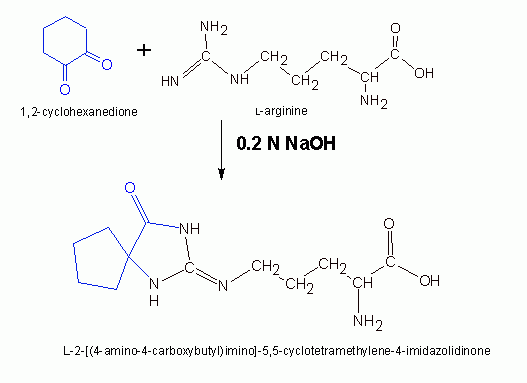
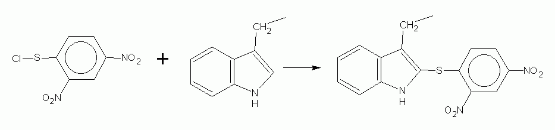
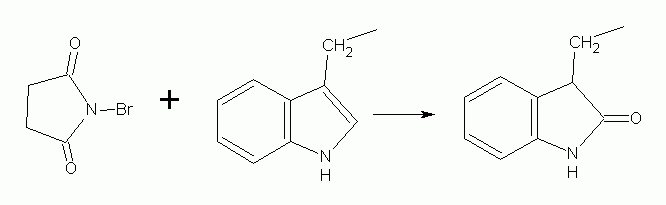
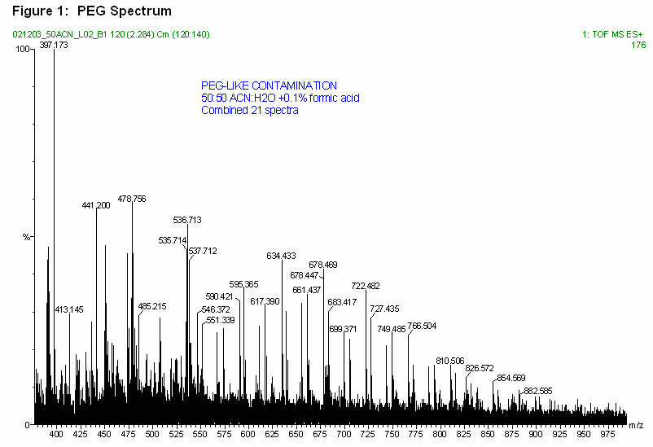
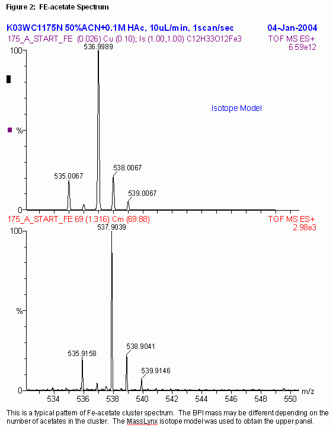
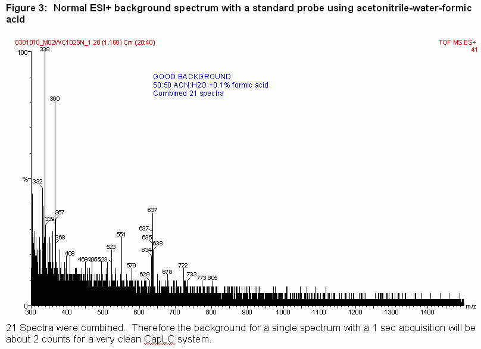
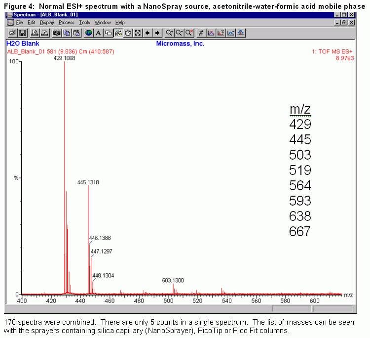
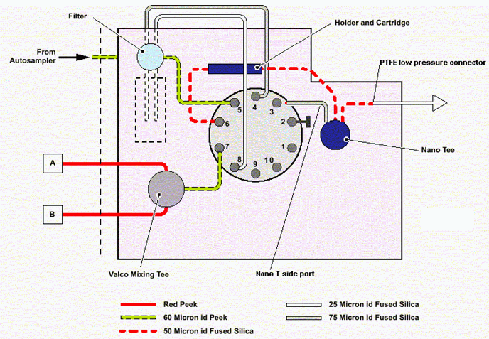
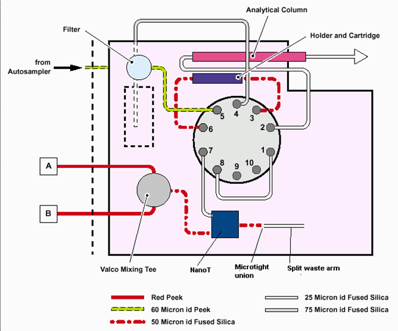

This reference is divided into multiple parts. To the left is a clickable
document outline for the current part. Unfortunately a table of contents
for all parts has not been set up on a single page (yet, but will be).
Currently there are two parts. Part 1
covers a lot of chemicals used in proteomics as well as one- and two-dimensional
gel electrophoresis.
Sample Preparation
Sample preparation is a set of generally useful methods. They are methods
that generally are used in the preparation of a sample for some later
analytical step.
Some samples may be too dilute for use. For MALDI- and ESI-MS work,
concentrations of peptides or proteins should be in the range of 0.1
to 10 pmol per microliter (0.1 - 10 µM).
Ammonium sulfate is an old technique for precipitating proteins (not
peptides) both as a purification step primarily, but also as a concentration
step as well. It is typically used just after extraction of cells
or tissues, and prior to high resolution separation steps such as
chromatography. Inclusion of EDTA (from 0.1-0.5 mM) may be desirable
when using ammonium sulfate since it tends to coordinate heavy
metals which may be detrimental to preparative work.
An ammonium sulfate calculator is provided below:
Temperature:
0° C
10° C
20° C
25° C
Volume of solution:
milliliters (mL)
Starting ammonium sulfate concentration:
% saturation
Final desired ammonium sulfate concentration:
% saturation
Ultrafiltration
Ultrafiltration is the separation of solutes (proteins) from molecules
smaller than them (low MW molecules, salts, solvent) by a process of
filtration through a porous membrane whose pores are sized to approximate
molecules of a particular weight (assuming molecules whose space approximates
a sphere). The filtration process is achieved usually be applying a force
on top of the membrane to the solution. The force might be the pressure of
a nonreactive (usually nitrogen) gas, or it might come from the increased
gravities in a centrifugal field. Ultrafiltration achieves an increased
concentration of all solutes held by the membrane barrier. Moreover, it can
be used to achieve a solvent/buffer exchange with the addition of an alternative
buffer or solvent, and then its re-concentration.
Centrifugal Ultrafiltration
Centrifugal ultrafiltration is the preferred step for both buffer
exchange (dialysis) and concentration of both proteins and peptides longer
than 15 amino acids. It works at all scales, but particularly well
for the nano- to microvolumes used in sample preparation for proteomic
analysis of all types, including protein identification and quantitative
proteomics, and particularly for intact protein proteome profiling.
Millipore owns the Amicon/Centricon name, and supplies well known
products in filtration and ultrafiltration, including centrifugal units.
Sartorius owns the Vivascience line of products, and Sartorius has a
reputed name in filtration; they offer innovative products in ultrafiltration,
including super-low volume retentate systems and filtration whose force
vector is angled to the membrane, which improves flow properties.
Centrifugal Evaporation
Centrifugal evaporation places a sample in a spinning rotor at a fixed
speed and then applies a vacuum to the chamber. The application of the
vacuum accelerates the process of evaporation of any solvent, and nonvolatile
solutes remain even after reaching dryness. Many units will heat up the
chamber containing the spinning rotor to 50-60°; this is particularly
effect to improve the rate of evaporation of solvents that are largely
aqueous (water), although the application of heat to that temperature will
depend also on the sensitivity of the sample to that kind of heat.
This description is of the classical operation of the Savant SpeedVac
product. Centrifugal evaporation must be the capability of any proteomics
laboratory, and should also include carrier rotors that hold standard
volume microtubes as well as 96- and 384-multiwell plates.
Trichloroacetic Acid Precipitation
The TCA precipitation is okay if the sample will continue on to some
denaturing process. If the sample contains detergent, TCA precipitation
may not be the best way to proceed however: as an alternative, use 5-10
volumes of ice-cold acetone to precipitate, especially if the sample is
to be separated by 2DGE.
This is adapted from Sigma-Aldrich protein precipitation kit protocol.
This method works well for sample masses of protein down to 30 µg.
Add sodium deoxycholate for sample masses of protein down to 3 µg.
The following reagents should be prepared:
100% (w/v) trichloroacetic acid (TCA)
0.2% sodium deoxycholate (NaDOC)
25% acetone, ice-cold
Store the TCA and NaDOC at room temperature. Put the 25% acetone at
−20° at least an hour before use.
Sample containing protein down to mass of 30 µg
Add the sample to a 1.5 ml tube.
Bring the volume up to 1.0 ml using ultrapure water.
Add 100 µl of 100% TCA.
Vortex and leave on ice bath for at least 15 min
Spin at 15,000 g (top speed in microcentrifuge) for 10 min at room temp.
Discard the supernatant.
If interfering substances are to be removed, add 1 ml of ice-cold
25% acetone wash, vortex to disperse pellet, then spin at top speed for
5 min at room temp. Discard supernatant.
Dry the pellet in a SpeedVac for 10-20 min to remove residual solvent.
An alternative is to air-dry the pellet for 20 min or so.
Resuspend the pellet in suitable buffer depending on application.
This method is better if the protein-containing solution has an ionic
strength of at least 10 mM (add NaCl to bring the solution to at least
10 mM if ionic strength is unknown).
Put 100 µl sample in 1.5 ml tube. Add 10 mM NaCl if necessary
to make the volume 100 µl.
Add 900 µl of the 0.2% NaDOC
Vortex and let sit at room temperature for 10 min
Add 100 µl of 100% TCA.
Vortex and let sit on an ice bath for at least 15 min
Spin at 15,000 g (top speed in microcentrifuge) for 10 min at room temp.
For larger samples, increase the time proportionally.
Discard the supernatant.
Add 1 ml of ice-cold 25% acetone wash. Vortex to disperse pellet.
Spin at top speed for 5 min at room temp. Remove supernatant
Repeat the acetone wash step.
Dry in centrifugal evaporator for 10-20 min, or alternatively, let
air dry with open tube for a bit longer.
To resuspend the pellet, gentle heating and vortexing might be required.
Other Precipitation Techniques
Many proteins are soluble in the environment in which they are found.
In tissues, there is usually an ionic strength of 0.15-0.2 M. The salts
present in this environment are important in maintaining solubility.
If the concentration is lowered (such as by dilution), many proteins
will become insoluble as they begin to aggregate with one another.
This is true of serum globulins when serum is diluted. Proteins in
low ionic strength environment and near their isoelectric point are
no longer repelled by one another, making an aggregation and precipitation
possible.
Use of organic solvents and polyethylene glycol and many divalent metal
ions (50 mM Mg2+) can result in precipitation; the metal
salt of a protein will have an higher isoelectric point because of the
divalent cation so a higher pH results in aggregation.
Trypsin in Proteomics
In many methods here, a target protein, that is, a protein targeted for
digestion, is digested with the most commonly used proteolytic enzyme,
trypsin. There are many reasons trypsin is used compared to
all other proteases. Firstly, it produces a nice distribution of
peptides with different masses, which aids in peptide mass fingerprinting
and calibration of mass spectrometers tremendously. It is also
one of the most specific of proteases, hydrolyzing the peptide bond
on the carboxyl side (-COOH) of arginines (R) and lysines (K), with
some exceptions. The exceptions are:
Trypsin cannot hydrolyze R or K residues when the carboxyl (COOH)
side (or next) residue is proline (P). This likely has to do with
chemistry as much as steric hindrance.
Trypsin will not cut R or K residues that are surrounded by
negatively charged residues. This includes glutamate (E), aspartate (D),
and also phosphorylated residues such as threonines (T-p) and serines
(S-p). For instance, the partial sequence -DKEE- has been observed
not to be cut by trypsin, probably because of the multiple negative
charges surrounding (masking?) the positive charge on the trypsin.
Trypsin is usually stored in a pH 4 solution of acetate until it is
mixed with a buffer that activates it at pH 8. If it is not stored
in this way, trypsin will inactivate itself by digesting itself
(auto-digestion).
Trypsin is used in different weight/mass ratios to its substrate, depending
upon whether a complete and rapid digestion is desired. For a complete
and rapid digestion, a higher trypsin:substrate ratio is used, but
the drawback is that peptides of auto-digested trypsin themselves will
produce a signal in the mass spectrometer that competes with the peptides
of the target protein itself (that is, peptides from autolytic trypsin
appear in the mass spectrum too).
In general, a high grade trypsin should be used for proteomics work.
Trypsin is usually treated with
N-p-Tosyl-L-phenylalanine
chloromethyl ketone (TPCK) to inactivate chymotrypsin, a very common
contaminant present in the source extracts from which trypsin is purified
for use as a reagent.
Sigma-Aldrich sells (Cat #T6567) a “proteomics grade” of
dimethylated trypsin purified from porcine pancreas. Its Lys residues
have been reductively methylated to make it resistant to autoproteolysis.
It is also treated with TPCK to inactivate contaminating chymotrypsin.
It is then affinity purified.
Solution Digestion with Trypsin
First be familiar
with clean, efficient, and accurate ways of preparing stock solutions.
If preparing a set of peptides to be used as mass spectrometry calibration
standards, then go to this section.
The following reagents will be required:
“Proteomics Grade” water Type I or HPLC grade water filtered to at least 0.45 µm is
sufficient. Distilled water will do if it is the only thing available.
Wherever the word “water” is used below, it refers to
“proteomics grade”.
250 mM ammonium bicarbonate (NH4HCO3) Prepare as follows:
To a 50 ml container (plastic tube),
add 0.988 g solid NH4HCO3.
Add 30-40 ml water and dissolve it by shaking or stirring.
QS to 50 ml with water if the graduations are true in the
plastic container; or use a absolutely clean 50 or 100 ml glass
graduated cylinder and transfer back to container.
100 mM dithiothreitol (DTT, FW 154.25, CAS# 3483-12-3)
Prepare as follows:
Get a 15 ml container (such as 15 ml plastic conical tube), and
add 154 mg DTT to it.
Add to it 10.0 ml of water if the graduations on the tube are
trustworthy, or add 2 × 5.0 ml water from a P-5000.
Dissolve and mix on vortex or by inversion.
10 mM DTT in 50 mM ammonium bicarbonate Prepare only what is necessary as follows:
Calculate the number of tubes or wells to which you will add DTT.
Multiply the volume of the tubes/wells and the count of tubes/wells, and
add a small amount (15% is usual) for pipetting error. Example: suppose
there are 48 wells to be treated and 20 µl is to be added to each
well. The calculated volume necessary is
(48 wells × 20 µl/well × 1.15 = 1104 µl = 1.104 ml.
Make 1.1 or 1.2 ml to make it easy.
With a 100 mM DTT stock, a 1/10 dilution is necessary to make 10 mM
DTT. With a 250 mM ammonium bicarbonate stock, a 1/5 dilution is necessary
to make 50 mM ammonium bicarbonate. If 1.2 ml of working solution is
to be made, then 1.2 ml / 10 = 120 µl and 1.2 ml / 5 is 240 µl.
Into a proper tube (1.5, 2 ml, etc.), pipet the DTT stock. In the
example this is 120 µl of 100 mM DTT stock.
Into the tube, now pipet the 250 mM ammonium bicarbonate stock. In
the example this is 240 µl.
Calculate the difference between the total volume necessary and
the volumes of stock pipetted, and pipet this amount as water.
In the example, and since 1.2 ml = 1200 µl, this is
1200 − (120 + 240) µl = 840 µl water.
55 mM iodoacetamide in 50 mM ammonium bicarbonate This must be prepared fresh before use.
First determine the volume of reagent necessary by calculating the
volume per well or tube with the count of the wells or tubes, as described
for 10 mM DTT in ammonium bicarbonate. In an example, suppose that
15 µl/well or tube is to be added and there are 50 wells.
The calculated necessary volume is (15 µl/well × 50 wells)
× 1.15 = 863 µl, which can be rounded off to 900 µl.
Find the right container to hold the volume calculated. Tare the
container on a balance.
Weigh out directly into the container an approximately necessary amount
of iodoacetamide. In the example, the required amount of iodoacetamide
is calculated to be: 900 µL × (55 mmol / L) ×
(1 L / 106 µL) × (184.96 mg / mmol) = 9.155 mg.
Suppose that 11.89 mg is weighed out instead. As long as this is
close to 9.155 mg, it is not important to be exact.
Now re-calculate the total volume to be made of the working solution
based on the iodoacetamide weighed out:
11.89 mg ×
mmol
×
L
×
106 µL
= 1168.8 µl
184.96 mg
55 mmol
L
Assume the volume is 1170 µl. As long as the re-computed volume does
not exceed the container volume, this will be acceptable. Otherwise
it will be necessary to wash the iodoacetamide in the container into
a larger container.
Since the stock of ammonium bicarbonate is 250 mM and the final concentration
in the working dilution is 50 mM, the dilution must be 1/5. Divide the
final volume of the working dilution by 5 to get the volume of 250 mM
NH4CO3 to add. In the example, this is
1170 µl / 5 = 234 µl. Add 234 µl to the tube.
If it is necessary to transfer to a larger container, wait for the iodoacetamide
to dissolve and then transfer.
The balance to be added is water. It is the difference between the
total recomputed volume and the volume of ammonium bicarbonate stock added.
In the example, this is 1170 − 234 = 936 µl water. Add this
and mix well.
100 ng/µl sequencing grade modified trypsin Do not make use of regular trypsin. The following trypsin products
are discussed:
Promega V5111. This modified porcine trypsin comes as
a 20 µg lyophilized trypsin in vial. Promega recommends
using a trypsin:protein ratio of 1:100 to 1:20 (w/w). Promega
supplies 50 mM acetic acid as Trypsin Resuspension Buffer.
A 100 µg/ml trypsin solution will have 85% of its activity
after 3 hours at 37° in 50 mM ammonium bicarbonate. It can
resist mildly denaturing conditions such as 0.1% SDS, 1 M urea,
and 10% acetonitrile; it retains half of its activity in 2 M guandine HCl.
Add 200 µl of Promega's Trypsin Resuspension Buffer to produce
a 100 ng/µl trypsin stock. For any unused trypsin stock, refreeze
at −20° (and avoid multiple freeze-thaw cycles).
Sigma T6567. This is supplied as a 20 µg in vial.
Solution Digests. Trypsin is reconstituted
with 20 µl of 1 mM HCl to produce a 1 µg/µl
solution at pH ~3. Dissolve protein/peptide subtrate in 0.1 M
ammonium bicarbonate or Tris-HCl pH 8.5 (note Tris-HCl cannot be
used for MALDI). Prior reductive alkylation of the protein is recommended.
Add trypsin to substrate in recommended amounts, and incubate between
2-18 hours at 37° (the time depends on trypsin:protein ratio).
In-Gel Digests. If it is to be used in in-gel digests, add
100 µl of 1 mM HCl to a vial. Mix well, then add 900 µl
40 mM ammonium bicarbonate in 9% acetonitrile. This is a 20 µg/ml
solution. (Alternatively, if not all the trypsin is to be used,
then store the 100 µl acidifed trypsin at 2-8 or −20°,
and add 9 volumes of 40 mM ammonium bicarb + 9% acetonitrile to 1 volume
trypsin.)
Prepare a water bath or incubator or heating system at 37°.
The reductive alkylation and digest is performed as follows:
Prepare the protein substrate in a 10 µl volume with a concentration
that is between 0.2 and 5 pmol/µl.
For a 30 kDa protein, that is between 6-150 ng/µl (or
6-150 µg/ml). The total protein thus ranges 2-50 pmol (or 60-1500 ng).
Add 15 µl of 10 mM DTT in 50 mM ammonium bicarbonate.
Incubate for 30 min.
Add 15 µl of 55 mM iodoacetamide in 50 mM ammonium bicarbonate.
Wait for 20 minutes.
Dilute the 100 ng/µl trypsin to 6 ng/µl with 50 mM
ammonium bicarbonate. Add 12.5 µl of 6 ng/µl trypsin.
Incubate 3 hours at 37°C.
If the material is to be used on ESI-MS, then add 20 µl
of 1% formic acid. If the material is to be used for MALDI, then add
20 µl 1% trifluoroacetic acid, and spot on to MALDI plates.
The final volume is about 70 µl.
For spotting MALDI plates, make up 2 mg/ml CHCA in 50% acetonitrile
containing 0.1% TFA. Prepare a lockmass solution of ACTH 18-39
by adding 1 mg water to 1 mg ACTH (makes 400 pmol/µl), dilute
25 µl of this in 1 ml water to make 10 pmol/µl,
then add 4 µl of this to 200 µl of the matrix to
give 200 fmol/µl.
Note that trypsin has a mass of 23.3 kDa. If 75 ng of trypsin is added
to do the digestion, that is 3.2 pmol of trypsin to digest between 2-50
pmol substrate.
Preparation of A Set of Peptides for
Mass Spectrometer Calibration
Calibration peptides obtained from digest of a well-known protein
with a good distribution of peptide masses are obtained by reductive
alkylation and then digestion with trypsin.
Some preliminary calculations are necessary before performing the digestion.
Two sets of calibration peptides can be prepared. One is for MALDI-MS
and the other for ESI-MS. Probably 10 times as much is used for
ESI-MS than MALDI-MS, so the first calculation can be for MALDI-MS.
Generally the peptides from 100-1000 fmol digested protein are used in
a MALDI well in order to perform a meaningful calibration. A single
calibration is done for a long run, so perhaps one or two wells might
be used for the calibration. The 2nd well can test plate flatness, or
be used to confirm the calibration or re-calibrate within a run.
Since this is done once per run, the
period of time that a set of calibration peptides lasts depends on the run.
If enough peptides for 100 MALDI plates is prepared, a total of 200 pmol
of protein must be digested. If 10 times as many peptides are used for
ESI-MS, that is 2000 pmol of protein to be digested.
A total of 30 pmol (15 pmol over 2 additions) of trypsin will be added
to perform the digestion. This is is approximately 700 ng.
If the protein substrate is 2000 pmol and is
BSA, this is 133 µg of BSA, and the weight ratio is 200:1 (w/w).
This is usually small than recommended, but it helps to ensure that
trypsin is not a contaminant.
The following reagents are required, and the volumes indicated sufficient
for a single tube of protein to be digested:
50 mM DTT: 10 μl
250 mM ammonium bicarbonate: about 100 μl
150 mM iodoacetamide in 50 mM ammonium bicarbonate: place 1.39 mg
iodoacetamide in a tube and add 50 µl of 50 mM ammonium bicarbonate.
100 ng/µl of proteomics-grade trypsin:
add 200 µl of
reconstitution solution (or if it is not provided, use 1 mM HCl or
50 mM acetic acid) to a 20 µg vial of lyophilized trypsin
The following steps are used:
Prepare the protein in the correct aqueous solution that makes it
dissolve. The best is water, since use of sodium salts to raise the
ionic strength slightly can possibly cause formation of sodium adducts.
Make the concentration between 100-300 pmol/µl. For example,
a 100 pmol/µl bovine serum albumin (BSA) solution is 6.6 mg/ml.
A 100 pmol/µl alcohol dehydrogenase (ADH) solution is 15 mg/ml
(but because ADH is a tetramer of identical subunits, it will produce
400 pmol of peptides).
Pipet 20 µl (containing 2 nmol or 2000 pmol) of
calibration protein to a microtube (0.5 ml), thin-walled tube preferred.
Pipet 20 µl of 50 mM DTT into the tube.
Pipet 10 µl of 0.25 M ammonium bicarbonate into the tube.
Allow to sit for 45-60 min after mixing a few times with finger in the
37° water bath.
Remove from the water bath and let come to room temperature.
Add 30 µl of 150 mM iodoacetamide in 50 mM ammonium bicarbonate
and mix well.
Incubate for 60 min.
First Trypsin Digestion.
To the reaction tube add 2.5 µl water
Add 3.5 µl of 100 ng/µl trypsin.
Add 1.5 µl of 250 mM ammonium bicarbonate.
Mix well by flicking tube with finger. Incubate at 37° for
2.5-3 hours, and flick the tube with finger slightly about halfway into
incubation.
Second Trypsin Digestion.
Repeat the addition of water, trypsin, ammonium bicarbonate in that order
as given for the First Trypsin Digestion.
Let stand another 3 hours or overnight.
Determine the total volume with a pipet. It should be about 90-100
µl, depending on pipetting accuracy. Take 80% of the volume
to another tube. To the tube containing 80% of the volume, add 20 µl
of 1% formic acid and label it “<protein> peptides for
ESI-MS,” where <protein> is the name of the protein, such
as “BSA” or “ADH.” To the other tube,
add 5 µl of 1% TFA and label it “<protein> peptides for
MALDI-MS.”
MALDI-MS peptides. Prepare 9 small tubes (500 µl size).
To the tube with about 10 µl MALDI peptides, add 90 µl of
0.1% TFA, which produces about 2 pmol/µl of peptides. Distribute about
10 µl each to the other 4 tubes. Freeze them at −20°.
When calibration of the MALDI is to be done, remove a tube from the freezer,
and for every 1 µl of peptides, add 1 µl of 100 ng/µl
(= 0.1 mg/ml) of CHCA (this is a 500:1 mol/mol matrix:peptide ratio).
The matrix should be dissolved in 50% MeCN + 0.1% TFA.
ESI-MS peptides. To the volume remaining in the ESI-MS
tube, add about 10 times its volume in 0.1% formic acid (if you need
a larger tube, transfer the amount to larger tube, and then when adding
the formic acid, do it by washing the formic acid into the old tube,
and transferring it to the larger tube). Distribute 75-100 µl
aliquots of the dilution to each of a set of small (0.5 ml) tubes.
Make sure that the concentration of peptides is written on the label.
It can be approximate. The peptides we made here are about 2 pmol/µl.
MassPREP: In-Gel and Solution Digestion with Trypsin
In-gel digestion of proteins in excised gel pieces is done using the
automated liquid handling/pipetting system, the MassPREP Station (A
Robotic Liquid Handling System, modified form of the Perkin-Elmer
MultiProbe II), which is
equipment that is a specialized modification by Waters of the the
Perkin-Elmer MultiPROBE II Robotic Liquid Handling station.
The software interface is called WinPREP. Waters has already supplied
programmed modules for doing typical routines involving both in-gel
and solution digestions in multiwell plates. Generally one only has
to run the module and make sure that the tips and labware is in position.
Checklist for In-Gel Trypsin Digestion
The deck of the MassPREP station should be loaded with the following:
Labware
Heater support tile on G16 (for gel plate 1)
Heater support tile on E16 (for gel plate 2)
200 µl pipet tips on C16
20 µl conductive pipet tips on C13 (for gel plate 1)
20 µl conductive pipet tips on A13 (for gel plate 2)
Multiwell (96) plate on cooled support at C10 (for peptides from plate 1)
Multiwell (96) plate on cooled support at A10 (for peptides from plate 2)
Lid rack on C7 for plates 1
Lid rack on A7 for plates 2
4 × 8 Reagent Rack on cooled support at E10
2 med trough + 3 small trough reagent rack at G7
Two targets on left side (front and back) of target holder at E13
Used tip bin centered at A17
Wash station at G13
Reagents for Coomassie- or SYPRO-stained gels
Buffer.
0.1 M ammonium bicarbonate in leftmost, medium-sized (48/57 ml)
reagent trough. 30 ml enough for one plate.
Reducing Agent. Put 15.4 mg of DTT in 10 ml of ammonium
bicarbonate Buffer, enough for one plate of 96 samples. This is 10 mM
This should always be made fresh.
Alkylating Agent. Put 102 mg of iodoacetamide in 10 ml
of ammonium bicarbonate Buffer; this is 55 mM. Should also be made
fresh every time.
Digestion Agent. To one vial of 20 µg of MS-grade
trypsin (Promega V5111, for example), add 200 µl of the
supplied resuspension buffer (50 mM acetic acid). 23 µl is
used for 48 samples, 45 µl for one plate, and 90 µl for
two plates of 192 samples.
Extraction Agent. This is a 1% formic acid solution in
2% MeCN. Add 100 µl formic acid and 200 µl MeCN to 10
ml water, enough for one plate of 96 samples.
Matrix. If the target plate spotting setup is used, one
dissovles 2 mg CHCA in 1 ml of 0.2% TFA in 50% MeCN, enough for
384 samples (four 96-well plates).
Acetonitrile go in the large wash station container. 80 ml for one
plate of 96 samples, and 5 mm from the top for two plates.
Lockmass. If the target plate spotting setup is used:
Prepare a 400 pmol/µl ACTH solution (1 ml water to 1 mg ACTH)
Add 25 µl of this to 1 ml water to get a 40 pmol/µl solution.
Add 10 µl of this to 500 µl of the matrix solution to
get a 200 fmol/µl solution. 200 fmol is thus spotted.
This 0.5 ml solution is enough for 4 plates (384 samples).
Reagents for silver-stained gels
De-Stain. Prepare a 20 ml solution (enough for 2 plates:
192 samples) of a
1:1 (v/v) mixture of 30 mM potassium ferricyanide (K3FeCN6)
and 100 mM sodium thiosulfate (Na2S2O3) as
follows:
Dissolve 248 mg sodium thiosulfate in 10 ml water.
Dissolve 99 mg potassium ferricyanide in water.
Place in De-Stain trough. Should be used immediately.
Manually Doing The MassPREP Method
The MassPrep in-gel digestion method (Digestion 5.7) can be done by hand
rather than with the MassPREP station. This might be useful if only doing
a few samples (less than a column of 8, for example), or there is something
wrong with the MassPREP station for some reason. Try this method:
Set an oven on at 37 °
Remove excess liquid. Read this procedure even if you have no
excess liquid to remove. You will use this procedure to remove all reagents
that have been pipetted into wells and which are to be removed.
Fit a P-200 with a yellow tip and set it at about 100-150 µl.
Starting with the first well to have excess liquid in its well removed,
place the tip off the center of the well and begin pipetting out the liquid.
When much less liquid is present in the well, carefully move the pipet
tip toward the center and continue sucking out liquid with pipet.
Watch for the possibility that gel pieces might be sucked into the tip.
Use pipet tips with lumenal openings smaller than the gel pieces to prevent
this.
Using the same tip. You can limit the number (conserve) the tips
you use merely by washing the tip between wells. Fill a large beaker with
ultrapure or distilled water, and just pipet the water in and out to rinse
between wells. The MassPREP does the same thing.
Initial Washing & Destaining. Coomassie- and SYPRO-stained
gels are destained in different ways. Pre-warm the reagents to 37 °
before using them.
Coomassie/SYPRO-stained gels. Perform the following ONLY for
wells on the plate(s) containing Coomassie- or SYPRO-stained pieces.
Pipet 50 µl of 100 mM ammonium bicarbonate.
Pipet 50 µl of acetonitrile (MeCN).
Wait 10 min. at 37 °.
Remove the solution with a P-200/yellow tip, rinsing between wells.
Repeat the destaining (previous 4 steps).
Silver-stained gels. Perform the following ONLY for
wells on the plate(s) containing silver-stained pieces. Silver destain
reagent is a 1:1 (v/v) mixture of 30 mM potassium ferricyanide
(K3Fe(CN)6)
and 100 mM sodium thiosulfate (Na2S2O3).
Pipet 80 µl of the silver detain reagent into the well.
Wait 15 minutes at 37°.
Add 120 µl of the reagent to each well, in a 2nd addition.
Wait 15 minutes at 37°
Remove all the reagent with P200/yellow tip.
Add 150 µl water.
Wait 10 min. at 37°.
Remove the wash with P200/yellow tip.
Add 50 µl of 100 mM ammonium bicarbonate.
Wait 5 min at 37 °.
Add 75 µl of MeCN.
Wait 5 min. at 37 °.
Remove the liquid in the wells with P200/yellow tip.
Reduction & Alkylation. If a reduction and akylation is
to be done, use the following steps. This is to be done to ALL wells.
All Wait/incubation steps are to be done at 37°!!
Add 50 µl MeCN
Wait 5 min.
Remove MeCN with P200/yellow tip.
Put back at 37° and wait another 10 min. for everything to evaporate.
Add 50 µl of 10 mM DTT in 50 mM ammonium bicarbonate.
Incubate for 30 min.
Add 50 µl of 55 mM iodoacetamide in 50 mM ammonium bicarbonate.
Incubate 20 min.
Add 100 µl MeCN
Let sit for 5 min.
Remove all liquid from wells with P200/yellow tip.
Washing & Dehydration. You are now ready for the preparation
for trypsinization. Do this to all the wells and all incubation/sitting/waiting
steps are to be done in the 37° oven.
Add 50 µl of 100 mM ammonium bicarbonate.
Wait 10 min.
Add 50 µl of MeCN.
Wait 5 min.
Remove the liquid with P200/yellow tip.
Repeat the 50 µl MeCN, incubation, and liquid removal step two more
times.
Let the plate sit another 15 minutes at room temperature and wait for
all the acetonitrile to evaporate.
Trypsin Addition. This will be done to all wells. Follow
carefully which steps require a 37° incubation (not all do!).
Prepare 6.25 ng/µl of trypsin in 50 mM ammonium bicarbonate.
Prepare enough for 25 µl per well.
Add 25 µl of the dilute trypsin to each well.
Let the gel pieces soak up the trypsin for 30 min at room temperature.
After covering with a secure lid, or wrapping in strech film,
put the plate into the 37° oven and let it sit at least 4.5 hours
(it can go longer, but it is not particularly necessary).
Take the plate out and let it cool (15-30 min).
Extraction. Do this for all wells and at room temperature.
The extraction reagent used here is 1% formic acid and 2% acetonitrile.
To the cooled plate, add 30 µl of extraction reagent. The wells
still contain the trypsin digestion solution.
Let sit 30 min, covered with a lid.
Get a clean PCR plate. Obtain enough of the cleanest yellow tips
possible (or use diamond tips). With a P-20 or P-200 or P-10 and the proper
tip on it, transfer the solution in the digest plate to the receiving PCR
plate. Be careful to match well A1 to well A1, or to keep track of what
well you take from to what well you put into. Use a new tip for each well
transfer. Do NOT rinse pipet tips and use for multiple wells!!! To
conserve tip use, you can place the used tip back into an empty rack
and then re-use if you plan on doing repeated extractions (see next step).
If you want to repeat the extraction up to two more times, pipet
12 µl of the extraction reagent and 12 µl of MeCN to each
well, wait 30 minutes, and then recover with a well-to-well transfer,
using the same wells as in the first step. Be very careful.
You can use the extracted peptides in the PCR plate immediately by
spotting on to MALDI. If you do not get good spectra, consider concentrating
the peptides down in a vacuum centrifuge that can accomodate multi-well plates,
then resuspend in a suitable solvent (50% MeCN with 0.1% TFA or formic acid),
and then do MALDI or ESI.
Other Proteases Used To Prepare Peptides
Endoproteinase Arg-C
Endoproteinase Arg-C (CAS# 82047-85-6, EC 3.4.21.35) specifically
cleaves on the carboxy side of arginine residues.
Endoproteinase Asp-N
Endoproteinase Asp-N (CAS# 9001-92-7, EC 3.4.24.33) specifically
cleaves on the amino side of aspartate residues.
Endoproteinase Glu-C
Endoproteinase Glu-C (CAS# 66676-43-5, EC 3.4.21.19) specifically
cleaves on the carboxy side of glutamate residues. Because it was
first isolated from Staphylococcus aureus V8, it is also called
the V8 protease.
Endoproteinase Lys-C
Endoproteinase Lys-C (CAS# 72561-05-8, EC 3.4.21.50) specifically
cleaves on the carboxy side of lysine residues.
Glycoproteomics
This offers strategies for determining the nature of glycans attached to
proteins and their points of attachment in glycoproteins.
Glycoproteins are generally classed in three ways:
N-linked These glycans attach to their proteins usually on asparagine
amide nitrogens at the consensus site -Asn-X-Ser/Thr-, where X is any
amino acid except Pro. N-linked glycoproteins are found only in eukaryotes,
because the glycosyltransferase (sugar-attachment enzyme) is found
in the membrane of the endoplasmic reticulum (ER), and those organelles
are found only in eukaryotes.
O-linked The glycans attach to the hydroxyl moieties of Ser or Thr residues.
A survey of glycosylation sites in both prokaryotic and eukaryotic
organisms does not really show a consensus sequence for mucin-type
glycoproteins, and the glycosyltransferases (glycosylating enyzmes)
probably use a secondary or tertiary structure to recognize the glycosylation
site. Many O-linked glycoproteins have special recognition sites, but
there is no consensus. At least eight different types of cores have
been identified for these proteins.
GPI-anchored Proteins attach to the plasma membrane covalently by linking to
a phosphatidylinositol on the intracellular side of the membrane. This
is called GPI (glycosylphosphatidylinositol) anchor. The point of
attachment of the protein is the oxygen on its carboxyl terminus.
The biology of N-linking is well studied. A mannose-rich sugar composed
of 14 monomers (-GlcNAc-GlcNAc-Man(-Man(-Man-Man)(-Man-Man)(-Man-Man-Man)))
is a triantennary branched chain attached to the Asn amide nitrogen
via a GlcNAc. Some proteins are then exported retaining the high-mannose
type sugar, or they move to the Golgi for further maturation.
Before moving to the Golgi, the mannose residues are trimmed where
they will go to form hybrid (bi- or triantennary sugars, one antenna
mannose branches, others GlcNAc) or complex type where two, three
or four antenna feature a heteropolymer mix (NeuNAc-Gal-GlcNAc-Man)
and with the GlcNAc near the attachment point fucosylated. The
glycosylation often depends on what class the organism is (plants, mammals,
yeast, etc.). Some N-linked glycoproteins go to the Golgi to get
O-linked glycosylations.
Enzymatic Deglycosylation
Removing the glycan for analysis without the protein attached is typical.
Peptide N-glycosidase F (PNGase F) is an effective deamidase
in that it hydrolyzes the Asn amide to produce the glycan with an
amine on the C1 of the GlcNAc. It is not effective when fucose
is attached to the GlcNAc (seen in plants and some annelids).
PNGase A is effective in this case. Glyko (GKE-5003),
QAbio (E-PNG01 kit), Sigma-Aldrich (P7367), and New England Biolabs
(P0704S) sell purified and/or recombinant forms of the enzyme;
take care that each defines a unit of activity differently. The
enzyme generally has the best activity at pH 7.5/37°.
O-glycanase. Glyko sells an O-glycanase specific for
glycosylated serines and threonines.
Perhaps the most effective deglycosylation treatment for them is to use
a β-elimination method used for esters or ethers, such as treatment
with hydroxide.
α-Fucosidase. N-linked glycosidases cannot deglycosylate
with a α-fucose attached. Use of this enzyme enables the determination
of the presence of fucose if the enzyme is deglycosylated.
Demodification of N-Linked Glycoproteins Using PNGase F
This method is a tentative specific method for N-linked deglycosylation
using Glyko's PNGase F (Prod. #GKE-5003), which is a naturally purified
form from Chrysobacterium (Flavobacterium) meningosepticum.
This method prepares a large batch of protein that is sampled representing
time points of incubation for a next step preparation of 2DGE.
This particular method prepares glycoproteins for loading on to 7-cm IPG
strips (200 µg each for Bio-Rad's product) using active rehydration.
Substrate Calculations and Preparations
The following time points will be
tried: 0, 60 min, 3 hours, overnight (8-12 hours). This represents
four 2D gels. Since each 2D gel gets 200 µg protein, a total of
800 µg protein is required.
A protein determination (Bradford, BCA) must be done.
The protein concentration should be ≥ 5 µg/µl,
and 10-20 µg/µl is best. A concentration step using centrifugal
ultrafiltration is recommended (include protease inhibitors when doing
concentration procedures). In the procedure below, it will be assumed that
a protein concentration of 5 and 10 mg/ml (same as 5 and 10 µg/µl)
are used.
Water bath. Set a water bath at 37°.
Buffer/Reagents. Make sure the following are ready. Generally
the volume you need is at most 1 ml in a 1.5 ml conical.
200 mM sodium phosphate, pH 7.5 (10X)
9 M urea (3X)
1 M DTT (20X)
Roche Complete (25X)
Glyko GKE-5003; 2 mU/µl (100 mU in 50 µl).
Keep only this product in an ice-water bath. Generally
10 mU of enzyme is added for every 100 µg denatured protein, and
incubation is from 2 h to overnight at 37°.
Protocol Table. The following table has been prepared to
account for different concentrations of the protein substrate used.
It has been prepared this way to keep the amount of components to a minimum
since these might interfere with the IEF step. It is therefore highly
recommended to use a substrate whose protein concentration is as high as
possible. Follow the instructions below the table, but use the table as
a guide.
Pipet Volume Protocol Based on Protein Concentration of
Substrate (except where noted, all volumes in µl)
If the protein concentration is:
5-10 mg/ml
10-15 mg/ml
15-20 mg/ml
≥20 mg/ml
protein substrate
volume
180
90
67.5
45
mass added (µg)
900-1800
900-1350
1012-1350
≥ 900
water
43.3
38
60.5
83
Do the boiling water denaturation step BEFORE
adding any of the components below!
1 M DTT (20X) this should be added immediately after removing
from protein from hot water
25
15
15
15
Add the components below AFTER cooling the reaction tube in an
ice-water bath, and then bringing the tube to 37°
9 M urea (3X)
166.7
100
100
100
* Roche Complete (25X)
20
12
12
12
200 mM sodium phosphate, pH 7.5 (10X)
50
30
30
30
† PNGase F enzyme (2 mU/µl, GKE-5003) to be added last
volume
15
15
15
15
milliUnits added
30 mU
30 mU
30 mU
30 mU
Final Volume
500
300
300
300
Volume Removed At Time Points
one-fourth for four 2D gels
125
75
75
75
* If Roche Complete is already present in the protein substrate sample,
an adjustment to the Roche Complete reagent volume might be considered
when the protein substrate volume is > 25% of the total volume.
For example, in protocol column for 5-10 mg/ml
where 180 µl of the substrate is added representing
> 25% of the 500 µl final
volume. In this case, 320 µl is the volume in which the reagent is
not present. It would be necessary to add 12.8 µl instead of 20 µl.
But even if 20 µl was added this is a bit more than a 50% excess,
generally not something to be overly concerned about.
† Why 30 mU?
Reaction Container Selection.
Select a reaction tube container whose capacity is such that the reaction
mixture final volume represents a range of 20-50% of the container volume.
Thus if a 1.5 ml conical is used, the reaction mixture final volume would
range from 300-750 µl. If a 0.5 ml conical tube was used, a
final reaction mixture volume would range from 100-250 µl.
The geometry and capacity of the container is such that the ability to
sample for the purpose of removing aliquots without affecting changes
in temperature during continuing incubations are the priorities here.
A higher surface area-to-volume ratio probably means more accurate sampling,
but it also results in greater temperature fluctuations during sampling
(although sampling should be brief and the tube quickly returned to
incubation). Use this as a guide (not an absolute) in container selection;
always give your own best judgment the highest priority.
To the selected container, add the proper volumes of substrate protein
and water. Mix gently without foaming (finger-flicking or very,very gentle
vortexing).
Notes on Glyko protocol. Glyko reports that most scientists using
their products vary their protocol. The following is a protocol Glyko provides
for its GKE-5006 product, a recombinant PNGase F.
Prepare 50-500 µg glycoprotein in 45 µl in a reaction buffer
(recommended is 20 mM sodium phosphate pH 7.5 final; if direct to MS, since
phosphate reduces ionization efficiency, a 10 mM TrisHCl pH 8.0 buffer can
be substituted).
2.5 µl of 2% SDS and 1 M 2-mercaptoethanol is added.
The mixture is heated at 100° for 5 min., then allowed to cool
Because SDS can adversely affect PNGase, 2.5 µl of 15% NP-40 is
added.
2 µl of PNGase F (N-glycanase, ≥ 2.5 mU/µl) and allowed
to work for 2 hours to overnight at 37°.
The final volume is approximately 50 µl. The final buffer:
20 mM sodium phosphate (or 10 mM TrisHCl). 0.1% SDS, 50 mM 2-mercaptoethanol,
0.75% NP-40, and 0.1 mU/µl enzyme (total 5 mU). The substrate
concentration is from 1-10 µg/µl. If the enzyme purity is
about 10 mU/µg, then 0.5 µg enzyme was added, providing a
ratio of 100-1000 µg substrate per µg enzyme.
Prepare a boiling hot water bath in a beaker large enough to accept one
of those urethane foam floats with holes cut in it for floating conical
tubes in water baths. Just after removing the boiling water bath from
the microwave oven, place the float in the water, and place the tube
in the float (note if the tube was made to fit 1.5 ml conicals, and the
tube is a 0.5 ml conical, place a 1.5 ml conical in the float, push the
float down to fill the 1.5 ml tube with hot water, zap in the oven on high
for another 30 seconds, then remove the beaker and put the 0.5 ml conical
within the water of the 1.5 ml conical). From the time of placing the
tube into the freshly zapped boiling water, wait at least 5 minutes and
no longer! If cooling starts, re-naturation is possible, and this is
not desirable.
Remove the tube from the hot water bath
and add the proper volume of DTT now. Wait for about 1-2 minutes.
Reduce the temperature of the tube in an ice-water bath, perhaps 30-60
seconds.
Place the tube in a 37° water bath for 5 min.
Add 3X urea in the proper volume and mix well but gently. Wait 30-60 sec.
Add 25X Roche Complete and 10X sodium phosphate. Mix well but gently.
Re-heat the boiling water bath. Keep it ready for the next step.
Place a 1.5 ml conical tube in a float and make sure it is filled the boiling
hot water (just dunk it to immerse it briefly). Reheat in microwave for
30 seconds to get it boiling.
Prepare a pipettor with the volume set to 25% (one-fourth) of the volume
the final reaction volume (see protocol table above). Also have ready an
empty 0.5 ml conical tube.
Add the enzyme in the proper volume to the reaction tube.
Addition should be with the pipet tip immersed in the solution. Pipet
up and down to make sure all the enzyme is added. Very
gently mix by finger flicking or slow rotation on the vortex for at least
30-60 seconds.
Immediately remove one-fourth of the volume with the pipettor whose
volume is already set, place it in the 0.5 ml conical tube, and place that
conical tube within the 1.5 ml conical tube set in the float and containing
boiling/hot water. Leave this for at least 3-5 min. Put the rest of
the reaction mixture in a 37° water bath.
At each time point, take the appropriate aliquot, put the tube in
boiling hot water to stop the enzyme reaction, and the dry down the contents
of the aliquot in vacuum centrifuge.
In drying the tube, do not apply external heat to assist drying. If drying
is slow, you might want to use ethanol or acetonitrile additions in small
amounts to accelerate drying.
Try to dry it completely. But if not possible, dry it as much as possible.
Add up to the proper volume (usually 125 µl for 7 cm
strips) of rehydration buffer. Try to dissolve everything. Spin it
down and apply the supernatant to the focusing tray. Add the IPG strip
gel side down and begin active rehydration overnight at 50 V. Focus and
complete 2D gel work as usual.
Freeze Method
This method was described by H. H. Freeze, "Endoglycosidase and Glycoamidase
Release of N-Linked Oligosaccharides" (Unit 17.13A) in Current Protocols
in Molecular Biology, looseleaf ed., Ausubel F et al, eds.
The glycoprotein substrate had been immunoprecipitated. Obtain the following
reagents/environment:
0.1 βmercaptoethanol/0.1% SDS
0.5 M TrisHCl, pH 8.6 at 37°
10% (w/v) Triton X-100 or NP-40
200-250 mU/ml PNGase F (Sigma or Glyko)
10× SDS sample buffer
30-37° and 90° water baths
Denature glycoprotein substrate in 20-30 µl of the 2ME/SDS solution
for 3-5 min at 90°.
Cool, then pulse spin to bring solution down
Transfer to two tubes 10 µl each of the protein
Add:
3 µl 0.5 M TrisHCl, pH 8.6
5 µl water
2 µl 10% NP-40 or Triton X-100
5 µl 200-250 mU/ml PNGase F or diluted Tris buffer only as
no-enzyme control
Incubate overnight at 30 or 37°.
Stop reaction with 2.5 µl 10× SDS sample buffer for 3-5 min
at 90° and process for SDS-PAGE, or use other stop mechanism.
Note that electrophoretic mobility is increased with oligosaccharide removal.
Demodification of Sialylated Glycoproteins
by Neuraminidase
This is a tentative protocol to remove sialic acid residues from
glycoproteins. This can be used in connection with 2DGE to determine
whether IEF-resolved isoforms are due to sialic acid moieties present
on glycoproteins. Neuraminidases are freely available from Sigma-Aldrich;
use of a high activity purified form is recommended.
The treatment described here involves protein substrates treated for
different incubation times to follow the de-sialyation. Four time
points are used: a zero (0) time point, and a percentage of expected
time of completion such as 5-10%, 25-50%, and 100%, for a total of four
aliquots for four 2D gel analyses. The choice of times depends a lot
on what is known about the enzyme reaction and its preparation.
Buffer/Reagents. Make sure the following are ready. Generally
the volume you need is at most 1 ml in a 1.5 ml conical.
250 mM sodium acetate, pH 5.0 (5X)
100 mM calcium chloride (50X)
Sigma Prod N2133, 1 Unit (CAS 9001-67-6, acyl-neuraminyl hydrolase, sialidase),
Type X from Clostridium perfringens present as lyophilized powder,
purified by affinity chromatography from Type VII. 1 Unit removes 1 µmole
of N-acetylneuraminic acid at pH 5.0 and 37° in 1 minute, where the substrate
is NAN-lactose or bovine submaxillary mucin.
The enzyme comes in a lyophilized form and needs to be prepared by adding
100 µl of 100 µg/ml BSA to it (but SEE NOTE BELOW!). The
100 µl volume water and/or BSA is usually required because Sigma
lyophilizes the enzyme down from large vials, and any volume smaller than
100 µl disappears (you can recover 85-90% back).
If there are 1000 mU (1 U), then
this is 10 mU/µl. If you re-freeze this, you might want to aliquot
it to 10 µl aliquots.
NOTE. If you are doing 2-D gels, adding a resuspension solution containing
BSA could complicate the analysis. Therefore add ONLY water to the
lyophilizate such that the concentration of the enzyme never goes below
1 U/ml (1000 mU/ml), and keeping it above 5 and even 10 U/ml is probably
even advised. Aliquot and freeze; you should probably have no more than
one freeze-thaw cycle; that is, you are allowed one more thaw, so aliquot
advisedly. If you put into frost-free freezer, use storage tubes with
an O-ring to prevent drying.
Protocol Table. The following table has been prepared to
account for different concentrations of the protein substrate used.
It has been prepared this way to keep the amount of components to a minimum
since these might interfere with the IEF step. It is therefore highly
recommended to use a substrate whose protein concentration is as high as
possible. Follow the instructions below the table, but use the table as
a guide.
Pipet Volume Protocol Based on Protein Concentration of
Substrate (all volumes in µl)
If the protein concentration is:
5-10 mg/ml
10-15 mg/ml
15-20 mg/ml
≥20 mg/ml
protein substrate
180
90
67.5
45
water
0
90
112.5
135
Do the boiling water denaturation step BEFORE
adding any of the components below!
* Roche Complete (25X)
10
10
10
10
250 mM sodium acetate, pH 5.0 (5X)
50
50
50
50
100 mM calcium chloride (50X)
5
5
5
5
neuraminidase enzyme (10 mU/µl) 50 mU to be added last
5
5
5
5
Final Volume
250
250
250
250
Volume Removed At Time Points
one-fourth for four 2D gels
62.5
62.5
62.5
62.5
* If Roche Complete is already present in the protein substrate sample,
an adjustment to the Roche Complete reagent volume might be considered
when the protein substrate volume is > 25% of the total volume.
For example, in protocol column for 5-10 mg/ml
where 180 µl of the substrate is added representing
> 25% of the 500 µl final
volume. In this case, 320 µl is the volume in which the reagent is
not present. It would be necessary to add 12.8 µl instead of 20 µl.
But even if 20 µl was added this is a bit more than a 50% excess,
generally not something to be overly concerned about.
Reaction Container Selection.
Select a reaction tube container whose capacity is such that the reaction
mixture final volume represents a range of 20-50% of the container volume.
Thus if a 1.5 ml conical is used, the reaction mixture final volume would
range from 300-750 µl. If a 0.5 ml conical tube was used, a
final reaction mixture volume would range from 100-250 µl.
The geometry and capacity of the container is such that the ability to
sample for the purpose of removing aliquots without affecting changes
in temperature during continuing incubations are the priorities here.
A higher surface area-to-volume ratio probably means more accurate sampling,
but it also results in greater temperature fluctuations during sampling
(although sampling should be brief and the tube quickly returned to
incubation). Use this as a guide (not an absolute) in container selection;
always give your own best judgment the highest priority.
To the selected container, add the proper volumes of substrate protein
and water. Mix gently without foaming (finger-flicking or very,very gentle
vortexing).
Prepare a boiling hot water bath in a beaker large enough to accept one
of those urethane foam floats with holes cut in it for floating conical
tubes in water baths. Just after removing the boiling water bath from
the microwave oven, place the float in the water, and place the tube
in the float (note if the tube was made to fit 1.5 ml conicals, and the
tube is a 0.5 ml conical, place a 1.5 ml conical in the float, push the
float down to fill the 1.5 ml tube with hot water, zap in the oven on high
for another 30 seconds, then remove the beaker and put the 0.5 ml conical
within the water of the 1.5 ml conical). From the time of placing the
tube into the freshly zapped boiling water, wait at least 5 minutes and
no longer! If cooling starts, re-naturation is possible, and this is
not desirable.
Reduce the temperature of the tube in an ice-water bath, perhaps 30-60
seconds.
Place the tube in a 37° water bath for 5 min.
Add 25X Roche Complete, 5X sodium acetate, and 50X calcium chloride.
Mix well but gently.
For taking a zero time point aliquot, re-heat the boiling water bath.
Keep it ready for the next step. Place a 1.5 ml conical tube in a float
and make sure it is filled the boiling
hot water (just dunk it to immerse it briefly). Reheat in microwave for
30 seconds to get it boiling.
Prepare a pipettor with the volume set to 25% (one-fourth) of the volume
the final reaction volume (see protocol table above). Also have ready an
empty 0.5 ml conical tube.
Add the enzyme in the proper volume to the reaction tube.
Addition should be with the pipet tip immersed in the solution. Pipet
up and down to make sure all the enzyme is added. Very
gently mix by finger flicking or slow rotation on the vortex for at least
30-60 seconds.
Immediately remove one-fourth of the volume with the pipettor whose
volume is already set, place it in the 0.5 ml conical tube, and place that
conical tube within the 1.5 ml conical tube set in the float and containing
boiling/hot water. Leave this for at least 3-5 min. Make sure that the
reaction tube with the rest of its mixture is placed floating in a 37°
water bath as quickly as possible.
At each time point, take the appropriate aliquot, put the tube in
boiling hot water to stop the enzyme reaction, and the dry down the contents
of the aliquot in vacuum centrifuge.
In drying the tube, do not apply external heat to assist drying. If drying
is slow, you might want to use ethanol or acetonitrile additions in small
amounts to accelerate drying.
Try to dry it completely. But if not possible, dry it as much as possible.
Add up to the proper volume (usually 125 µl for 7 cm
strips) of rehydration buffer. Try to dissolve everything. Spin it
down and apply the supernatant to the focusing tray. Add the IPG strip
gel side down and begin active rehydration overnight at 50 V. Focus and
complete 2D gel work as usual.
Chemical Deglycosylation
Hydrazine treatment will release intact and unreduced forms of both N-
and O-linked glycans. Both time and temperature will control the cleavage
quantitatively and selectively.
Strongly alkaline conditions will also result in β-elimination of O-linked
glycans in particular.
The polypeptide is chemically altered (destroyed or damaged) by hydrazinolysis
and β-elimination. Use of anhydrous trifluoromethanesulfonic acid (TFMS)
removes N-linked oligosaccharides (except for innermost Asn-lined GlnNAc or
GalNac) and O-linked glycans, as well as glycosaminoglycans in a proteoglycan
core and saccharides on collagen linked to hydroxyproline. There is no damage
to proteins but the oligosaccharides are destroyed.
TFMS Method
Trifluoromethanesulfonic acid (CF3SO3H, MW 150.08,
CAS 1493-13-6) must be handled within a fume hood. All reactions are
set up with gloved hand within a fume hood and possibly protective barrier.
TFMS is a pungent, light-yellow liquid with a 1.70 g/ml density and a
vapor pressure of 8 mm Hg at 25°. It is slightly soluble in water.
As for disposal, it is probably best to pass air over it and let it
go out a fume hood.
To control/test the effectiveness of this method, obtain a model glycoprotein
such as ribonuclease B (other glycoproteins include bovine fetuin, immunoglobulin
G, ovalbumin, and horseradish peroxidase). Variables are time and temperature
of incubation. Note that HRP is PNGase F-resistant because of its
fucose(α1→3)core composition. The procedure below is given by
Sigma
Dry the RNase B (or substrate glycoprotein) in a glass vial about 2 ml
with a screw top (any 12 × 32 vial with wide opening will do).
Dryness is extremely important, since water can damage the reactant.
Cool the vial to 2-8°. There should be about 1 mg RNase B in
the vial.
If you are going to include anisole as a free radical scavenger
in the reaction (although optional, it is said to yield higher amounts of
protein), then do the following:
Cool the anisole and the TFMS to 2-8° (put on ice-water bath).
Multiply 15 µl and the number of samples (volume A). Multiply
140 µl and the count of samples (volume T). In a glass vial,
mix volume A of anisole with volume T of TFMS.
Cool the reaction mixture. At this point, transfer ununsed TFMS to
one or more ampules, flush with inert dry gas, and re-seal with flame.
Cool the sample and/or control vial(s).
Add 150 µl of the pre-cooled 10% anisole in TFMS and rapidly seal.
A white vapor may form but should dissipate after several minutes.
Shake the vial until it dissolves completely. Do not vortex.
Incubate on ice or at 2-8° for 3 hours with occasional shaking.
If you are not using anisole in the reaction:
Cool the TFMS (in ampule) to 2-8°. Note that it will not keep after
opening as it is very hygroscopic. Add 150 µl to each sample
(the ampule will generally do four 1 mg samples).
Mix by shaking until the protein is completely dissolved. This takes
2-5 min. Do NOT vortex, since foam can form and lead to protein degradation.
The reaction vial is left on ice or at 2-8° for an additional 25
min with occasional shaking.
Cool a 60% pyridine solution (Sigma P5496) and the sample vial to −15°
in a MeOH/dry ice bath (or place in the freezer for a time). Do not mix these
solutions! Just cool them.
Add 4 µl of 0.2% bromophenol blue (Sigma B1560) along inside wall of
vial. The solution is now a red color.
Immediately after adding indicator, add dropwise the 60% pyridine
to the vial. Cool the vial between adding drops. The first drop is highly exothermic
and takes more cooling. Additional drops are less so.
As more pyridine is added, the solution should turn from red to yellow as
the pH increases. After adding an equal volume (150 µl) of pyridine, a
fine precipitate may form. Add 20 µl water and shake and then the precipitate
dissolves.
60% pyridine is added until the color becomes light purple or blue, making a
pH of about 76. In general, about 300 µl of 60% pyridine is added to a
150 µl TFMS solution to give a final volume less than 500 µl.
Note: the process of neutralization should be done quickly,
keeping the reaction mixture cold at all stages to minimize protein degradation.
A desalting method should now be used to remove low MW reactants/products
so the protein can be analyzed.
Lectins and Lectin Chips
Lectins have affinity for certain configurations/branchings of the glycan
and can be used to make identifications which include the type
of branching (alpha or beta, 1→6, 1→4, etc.).
Glycoprotein Sample Enrichment
Glycoproteins can be concentrated/enriched using a variety of methods.
Lectin Affinity Chromatography/Resin. Concanavilin A (ConA),
wheat germ agglutinin (WGA), and modified ricin. These can bind to
intact proteins or their peptides after digestion.
Boronate. Boronates bind cis-diols, and
m-aminophenylboronic acid is usually available on solid media.
GPI-specific proteins. A technique to selectively enrich GPI-anchored proteins and
release them from their membrane binding has been reported (see
Mann and Jensen).
2D and 3D Mapping
Analytical separations of glycans can be achieved with a variety of
methods, including HPLC and TLC.
GLYCOCATCH
This technique reported by Hirabayashi and Kim and involves a defined
procedure of separating and analyzing multiple fractions of glycoproteins
in a very systematic approach.
Detection: Gel or Membrane Staining for Glycoproteins
Periodic Acid/Periodate
Periodic acid (HIO4) oxidizes cis-diols
(which saccharides have) to produce dialdehydes which can then be
reacted with a aldehyde-reactive dye to produce a color reaction,
or alternatively reduced with tritiated borohydride
(NaB[3H]4 to track saccharides with a
radiolabel. At lower concentrations, HIO4 can be
used in the sensitive detection of sialic acids.
Dissolve 100-1000 µg glycoprotein in 2 ml 100 mM acetate,
pH 5.5 buffer containing the following concentrations of sodium
periodate (NaIO4):
for all monosaccharides: 15 mM
for alditols: 8 mM
for sialic acids: 1 mM
Keep reaction in dark at room temperature for 60 min for
oligosaccharides, at 4° for 48 h for alditols, and at
0° for 60 min for sialic acids. Note periodate degrades
under light and should always be freshly prepared, and the reaction
should be kept in dark since nonspecific oxidation can occur
End the reaction by adding 25 µl ethylene glycol and
leave at 4° overnight.
Add 0.1 M sodium hydroxide (NaOH) until pH 7.0 is reached
(about 1.5 ml)
Labeling can be done by reduction with 25 mg
NaB[3H]4 at 4° overnight. Alternatively
any amine-containing compound can also be used, such as fuchsin
or digoxigenin (used with anti-DIG coupled enhancement).
Acetic acid is added to pH 4.0 and the sample is concentrated
to dryness
Boric acid can be removed by evaporations with MeOH (100 µl)
three times. Acidic MeOH causes formation of volatile methyl
borate.
Use phenol/sulfuric acid assay to check on levels of mono- or
oligosaccharides with C-2 hydroxyl
Periodic Acid Schiff-Based Staining
Perhaps the oldest method for illuminating glycoproteins.
Periodic acid oxidation produces the sugar dialdehydes which can then be
complexed to an amine dye (Schiff's base).
Sigma-Aldrich GLYCOPRO. This kit is senstive for proteins
containing 25-100 ng carbohydrate, and will develop 10 minigels or
5 large gels or membranes. The kit is composed of assembled reagents
already in the catalog (periodic acid, sodium metabisulfite reduction
reagent, Fuchsin-Sulfite/Schiff's reagent).
Sigma-Aldrich SIALICQ. This is a multi-component kit which can
quantitate solutions containing N-acetylneuraminic acid (NANA).
It is a coupled assay in which a neuraminidase removes the
sialic acid groups and the products exposed to a NANA aldolase and
LDH in the presence of NADH and fetuin.
Moller & Poulsen Method of SDS-PAGE Gel Staining
[from Anal. Biochem.226: 371, 1995]
The following steps are performed at 30° with reagents
prewarmed:
Fix the gel in 10% trichloroacetic acid for 10 min
Wash gel twice for 2 min each in 5% acetic acid
Incubate gel in 1% periodic acid in 5% acetic acid for
20 min
Wash twice for 2 min each in 5% acetic acid
Wash twice for 2 min each in water
Incubate in 0.5% potassium metabisulfite for 12 min
The following steps are performed at 50° with reagents
properly prewarmed:
Wash the gel twice with 25% EtOH + 10% acetic acid
for 2 min each wash.
Stain with 0.125% Alcian Blue in 25% EtOH/10% acetic acid
for 15 min
Wash the gel three times with 25% EtOH/10% acetic acid
for 1, 4, and 5 min in that order.
Continue with the silver staining process, omitting any
first fixation steps.
Hydrazide-Conjugated Direct and Indirect Illluminators
Sugars are also modified by hydrazides (-NH-NH2).
Hydrazides will form a hydrazone (-C=N-NH-) bond with aldehyde (-CH=O).
Sugars are briefly/mildly treated with periodic acid to produce the
aldehyde groups, and then treated with the hydrazide.
The hydrazide is conjugated to either a fluorophore, lumiphore,
or biotin. Molecular Probes has a fluorescein semicarbazide
for direct fluorescence. Sigma-Aldrich GlycoProfile III
Fluorescent Glycoprotein Detection Kit uses a dansyl hydrazide
dye; the kit includes a positive control. Biotinylated hydrazides
are sold by Pierce and others for use with streptavidin-conjugated
peroxidase and detection on blots.
Fluorescent Labeling/Staining
Sugar-specific fluorescent dyes are available from Molecular Probes.
SYPRO dyes used in combination with Pro-Q Emerald can be used
to reveal glycoproteins among the unglycosylated proteins.
Sigma-Aldrich GlycoProfile 2-AA Labeliing kit (described below) can
be use for labeling glycoproteins in SDS-PAGE.
Pro-Q® Emerald
Pro-Q Emerald is a fluorescent hydrazide that reacts with aldehydes.
To react with glycoproteins, the oligosaccharides are treated with periodic
acid oxidation to generate the aldehydes from the vicinal diols, and then
the dye is added.
The dye absorbs maximally at 288 nm and so should work with standard UV
transilluminators (302 nm).
This Invitrogen (acquired from Molecular Probes) product has limited reports
in the literature (perhaps because of cost or technical difficulty).
Kanninen et al (Neurosci Lett367: 235-240, 2004) used the
Pro-Q Emerald 300 (Invitrogen dye by a previous method for 2D gels:
proteins were fixed in 50% MeOH and then treated with 1% periodic acid in
3% acetic acid for 30 min to oxidize glycans. After wshing with 3% acetic acid,
gels are incubated for 2 h in the PQE-300 dye (room temp, gentle agitation).
The gels are then illuminated. Gels are then stained with SYPRO Ruby and
illuminated again; note that CandyCane MW markers were used in the 2nd dimension.
Sialic Acid & De-sialylation
Sialic acid groups on a glycoprotein might cause it to form one or
more isoforms separable on an IEF gel because of alterations in the
isoelectric point. The presence of sialic acid groups might be
confirmed by removal of the neuraminic acid groups by the enzyme
neuraminidase. Sigma-Aldrich provides neuraminidase from
Clostridium perfringens: N2876 purified but possibly containing
proteases; N2904 gamma-sterilized for cell culture use; N3001 much more
purified with 2-10-fold specific activity; N5631 with greater purity
and specific activity; N2133 affinity-purified with highest purity.
Chromatographic/Mass Spectrometric Analysis
Glycans from deglycosylated glycoproteins can be complexed with
flurometric substances for improving their detection. Sigma-Aldrich
GlycoProfile 2-AA Labeling Kit (PP0530) is a kit using
2-anthranilic acid under reducing conditions (sodium cyanoborohydride)
to produce a fluorophoric complex. The GlycoProfile 2-AB Labeling
Kit (PP0520) is a 2-aminobenzamide version. Both kits work for
proteins to be analyzed by HPAE, HPLC, and ESI-MS. The 2-AA kit is
also sensitive for SDS-PAGE proteins.
Caramelized sugar can be analyzed quantitatively using
spectrophotometry.
Prepare a range of hexose (galactose or mannose) standards
from 1 to 10 µg in 10 µl and pipet to a microtiter plate
Unknowns should be in the range for 1 µg in 10 µl.
Add 25 µl 4% aqueous phenol to each well and mix well.
Leave for 5 min.
Add 200 µl concentrated sulfuric acid
(H2SO4)
very carefully. The acid will spit
particularly in the presence of salt. The acid will damage the
microplate reader as well if it is spilled.
Read at 492 nm.
Monosaccharide Analysis by HPAEC
See Hounsell, Davies and Smith reference in Protein Protocols. This
uses highly specialized equipment that includes biocompatible
chromatography system with pulsed amperometric detection
Monosaccharide Analysis by Gas Chromatography
See the Hounsell et al method described in Protein Protocols.
Glycoproteins or oligosaccharides with 1-50 µg carbohydrate and
10 µg of internal standard (inositol or pereitol) are dried in
screw-top PTFE septum vials in vacuum over phosphorus pentoxide in dessicator.
With a gentle stream of nitrogen, add 200 µl methanolic HCl.
Methanolic HCl can be obtained commercially, or by bubbling HCl gas into
MeOH until desired pH reached, or be adding molar equivalent of acetyl
chloride to MeOH. This cleaves glycosidic bond and oligosaccharide-peptide
bonds to produce methyl glycosides and methyl carboxylates. Should reducing
monosaccharides be required, hydrolysis can be done.
Cap immediately and heat at 80° for 18 h. Note that α and
β-methyl glycosides and a mixture of pyranose and furanose rings form.
The four possible isomers form in ratios characterstic of the monosaccharide
and allow unambiguous assignment.
Cool vial, open add about 50 mg silver carbonate. Mix and test for
neutrality, which is when solid silver carbonate goes from pink to green
Add 50 µl acetic anhydride and leave at room temp for 4 h in dark.
This removes N-acetyl groups with acetyl groups.
Solid residues are spun out, and supernatant transferred to clean vial.
Add 100 µl MeOH to precipitate to wash it, spin, and combine with
first supernatant. Repeat again.
Dry down the supernatant pool with nitrogen stream. Continue drying over
phosphorus pentoxide.
Add 20 µl of trimethylsilylating (TMS) reagent, such as Supelco's
Sylon HTP kit which is trimethylchlorosilane and pyridine hexamethyldisilazane.
Heat at 60° for 5 min, then evaporate under nitrogen stream.
Add 20 µl dry toluene (toluene stored over 3-Å molecular sieve
Inject on capillary GC column, for example 25 m × 0.22 mm i.d.
BP10 (SGE, Austin TX) or 30 m × 0.2 mm i.d. ultra-2 (HP, UK).
Injection is at 14 psi He head pressure with a 130 to 230° over 20 min
program, then hled at 230° for 20 min.
Quantitate by calculating total peak area by sum of individual peaks
and divide this by peak area of internal standard. Compare to the standard
curves for a molar determination.
Phosphoproteomics
Phosphorylation is nature’s on-and-off switch for regulating
the activity or function of proteins. It occurs in both prokaryotes
and eukaryotes. The other approach to regulating activity is
protein synthesis and degradation, and to some extent bacteria make
use of it more than eukaryotes do. Protein sythesis and degradation
has a heavy energy cost compared to phosphorylation, since putting
together peptdie bonds is huge requirment with respect to energy use.
Phosphorylation is seen in every biological process: signal transduction,
gene expression, cell divsion, and in aberrant cases, cancer.
Serine (Ser, S), threonine (Thr, T) and tyrosine (Tyr, Y) are the amino
acids typically phosphorylated in eukaryotes. Protein kinases exist in two major classes:
Ser/Thr protein kinases and Tyr protein kinases, which phosphorylate these
hydroxyl groups.
In prokarytoes, aspartic acid (Asp, D), glutamic acid (Glu, E),
and histidine (His, H) are phosphorylated. Histidine can be phosphorylated
on both nitrogen (1- and 3-phosphohistidine) atoms of the imidazole
side chain. Arginine phosphorylation involves formation of a
phosphorimide bond [O=P(OH)2-NH-C(=NH2)-NH-(CH2)-CH(NH2)-COOH
Both eukaryotes and prokaryotes will phosphorylate Arg, Lys, and Cys residues.
Phosphocysteine involves a phospho-sulfur bond.
Immunoaffinity Purification of Phosphoproteins
There are commercial preparation of antibodies that claim to be specific
for phosphoserine (PSer), phosphothreonine (PThr), and phosphotyrosine (PTyr).
Some monoclonals are useful in immunoprecipitation (with solid phase
protein A or G Sepharose) for whole extract enrichment. Anti-PSer/PThr
are less reliable.
The antibodies work better against large phosphproteins than for smaller
phosphopeptides.
IMAC
Immobilized metal-affinity chromatography
takes advantage of the ability of phosphate groups to bind (chelate)
metals, particularly transition metals. These also work for polyhistidine-tagged
recombinant fusions, as the imidazole groups wrap around to coordinate
to the metal.
The immobilized metal is either Fe3+ or Ga3+, although
the metal and the particular coordinate group varies.
It may be necessary to esterify carboxyl groups (C-term, Asp and Glu
side chains) since they have an anion-exchange affinity for the IMAC
columns.
Other Chromatography
Phosphopeptides can be enriched on reversed-phase columns as well
as porous graphitic carbon (PGC) beads.
Chemistry of Phosphopeptides and Phosphoproteins
Phosphates on serine and threonine side chains are good leaving groups
for nucleophilic substitution or elimination. Adding a strong base (hydroxides)
will lead to β-elimination, with formation of an alkene, which
is often β to the carbonyl. If ethanedithiol is added, this forms
a thioethylcysteinyl side chain. Addition of N-biotinyl succinimide
results in the formation of a succinylimidyl biotin form of the peptide,
with the reaction at acidic to neutral pH. Phosphopeptides can now be
enriched on avidin columns.
In another reaction, phosphopetides or proteins are fixed to a solid phase
(bead). First the amino terminus is protected with tert-butyl oxycarbonyl
(tBOC (amine) and then the carboxyl terminal with ethanolamine
in the presence of N,N′-dimethylaminopropyl ethyl carbodiimide HCl
(EDC). The phosphate also is converted by EDC/ethanolamine
(-OP(=O/OH)-NHCH2CH2OH, a phosphoamidate).
When treated with acid (TFA), the phosphate is restored by hydrolysis.
The phosphopeptide must be cleaned up on a reversed phase extraction
column and then a second condensation with EDC and cystamine
(NH2CH2CH2-S-S-CH2CH2NH2)
is done. DTT is added to reduce cystamine-converted phosphate for the
next step. The phosphopeptide is again cleaned up on reversed phase.
The peptide is added to glass beads that have an iodoacetyl group attached
to the bead. The thiol then is bound to the glass beads. After all
other material is washed away, including all nonphosphopeptides,
the phosphopeptide is liberated from the glass bead by treating in
aqueous TFA. The peptide has a free amino terminus and phosphate
although the carboxyl group is still modified.
Demodification of Phosphoproteins/Phosphopeptides (Dephosphorylation)
It is often useful to remove phosphates from proteins or peptides as a
means of analysis. Essentially two ways can be tried: enzymatic and
chemical.
Chemical Dephosphorylation
Hydrofluoric Acid (HF)
This is from a method described by Kuyama et al. (Rapid Commum Mass
Spectrom.17: 1493, 2003).
If you intend to do a desulfation reaction on the proteins or peptides,
use 95% TFA first, which does not dephosphorylate proteins/peptides (or
use in a separate reaction). Then use the chemical dephosphorylation
step, which removes both sulfate and phosphate.
Reagent. There is choice with the HF reagent to be used.
The first reagent is typically incubated at 3 hours in an ice-water bath,
but it does not completely dephosphorylate threonine residues. When used
for 1.5 hours at room temperature, the dephosphorylation of Thr is more
complete. The second reagent complete desphosphorylation of all serines,
threonines and tyrosine residues on an ice-water bath within 60 min.
50% hydrofluoric acid (HF). This obtained commercially usually
at this concentration. If you have a 40% reagent, that will be acceptable.
Lower than 40% is untested (you will have to make a determination yourself).
70% HF in pyridine. This is a commercially available preparation.
Approximately 50 µl of HF reagent will be used per 100 µg
protein to be dephosphorylated. Choose the appropriate size of the reaction
tube. Generally a standard 1.5 ml conical polypropylene tube with tightly
sealing cap is sufficient.
Pipet the appropriate volume of the protein to the tube.
Dry down the protein solution in a centrifugal evaporator. If the
volume is large and it is taking a lot of time, addition of an organic
solvent (acetonitrile, methanol, ethanol) from one-third to one-half the
volume present can accelerate the drying process. There should be no
concern about denaturation.
When the tube is completely dry, add 50 µl per 100 µg protein
present. Put on an ice-bath or at room temperature, depending on what you
want to achieve, and incubate for the appropriate length of time.
The HF reagent must be removed by vacuum centrifuge. You are advised
to set up a NaOH or CaO trap prior to the cold trap in order to trap HF.
This will prevent corrosion and the effects of any toxicity.
Note. You may want or need a zero time point incubation, so set up the
incubation if necessary to take out aliquots at a zero and perhaps other
time points.
Commercial Products
Sigma-Aldrich PhosphoProfile™
Enrichment Kit
Sigma-Aldrich provides the PhosphoProfile Enrichment Kit (Cat #PP0410)
for the enrichment of phosphopeptides to be used with an LC-MS/MS
method. The kit provides the ability to process 24 samples
containing up to 25 nmol phosphopeptides. This is a variation on
IMAC techniques.
Samples are digested in Proteomics Grade Trypsin. Digests are
then passed through PHOS-Select Gallium Spin Columns, which
specifically bind phosphate-containing peptides in a Ga3+
silicia medium. The kit includes controls, buffers/reagents, and
even plasticware (collection tubes). Samples are ready for LC-MS/MS.
Staining Phosphoproteins In
Electrophoretic Gels
Cutting & Roth
[Cutting JA, Roth TF (1973). Staining of Phospho-Proteins on Acrylamide Gel
Electropherograms. Anal. Biochem.54: 386-394.
Fix gels in 10% sulfosalicylic acid (SSA). The time of fixation should be
sufficient to allow any free phosphate and low MW phospho compounds to diffuse
out of the gel. In serum samples, this could take as long as 12 h with several
changes of fixative; the step can be omitted when no phosphate is present.
Gels are transferred to fresh 10% SSA containing 0.5 M calcium chloride
for 1 h or longer. (Note several concentrations of calcium chloride were tested
and 0.5 M was optimal.)
Gels are rapidly rinsed in deionized water to remove surface presence of
calcium chloride, which could cause irregular staining.
The gel is placed in 0.5 N NaOH at 60° for 30 min. Note the gel shrinks
as hydrolysis ensues, a function of time and temperature of incubation and
of hydroxide concentration. Different concentrations (0.1, 0.5, 1.0, and
2.0) of hydroxide, times (30, 60, 120 min), and temperatures (37, 60, 80°)
were all tried.
Rinse twice for 10 min each with 1% ammonium molybdate, letting the ions
penetrate gel before decreasing pH, which forms the phospho-molybdate complex.
If acidification occurs prior to molybdate complexation, the calcium phosphate
solubilization occurs with the result of broader bands and missing fine bands.
The second molybdate rinse is done to reduce the level of NaOH.
Gels are transferred to 1% ammonium molybdate in 1 N nitric acid for 30 min.
Transfer to a 0.5% methyl green in 7% acetic acid solution for 30 min.
Destain with several changes of 10% SSA.
Gels are best kept in 7% acetic acid.
Pierce GelCode Phosphoprotein Staining Kit
This kit (Prod Num 24550 for the stain reagent + control proteins, 24551
for stain reagent kit only, 24552 for control proteins only) provides for
the staining of ten 8×8 cm mini-gels and one, maybe two, large
(20×20 cm) 2D gels. This kit is based entirely on the Cutting &
Roth method, so there is nothing proprietary about it.
Preheat an incubation oven at 65°. A water bath produces poor results.
Wash the gel for 10 min in ultrapure water. In all steps the gel must be
submerged.
Discard the water and add 15 ml Reagent 1 (Salicylic Acid, 1 L bottle) for
15 min agitating gently.
Discard Reagent 1, and incubate in 25 ml Reagent 2 (Salicylic Acid + CaCl2,
250 ml) for 30 min, agitating gently.
Discard Reagent 2 and briefly rings gel with ultrapure water to eliminate any
CaCl2 on the gel surface.
Discard rinse water, and add 25 ml Reagent 3 (0.5 N NaOH, 250 ml), cover the
tray and incubate at 65° in oven for 20 min. There is no gel agitation needed.
(Note: the gel swells with an increase in 10% of its volume, so use
a tray large enough to handle the increase in size. Formation of a white precipitate
is normal in this step.)
Discard Reagent 3 and add 25 ml Reagent 4 (500 ml ammonium molybdate solution)
and agitate for 10 min.
Repeat this step with another 25 ml Reagent 4.
Discard the reagent, and add 25 ml Reagent 5 (ammonium molybdate + nitric
acid, 250 ml) and agitate for 20 min.
Discard Reagent 5 and add 25 ml Reagent 6 (methyl green soln, 250 ml)
and incubate for 20 min.
Discard reagent 6 and add 25 ml Reagent 1 and agitate for 15 min.
Repeat the washing with Reagent 1. Green phosphoprotein bands should be
visible against the faint green background.
Continue destaining in 7% acetic acid overnight.
To do total protein staining, wash the gel three times with 100 ml ultrapure water
for 10 min each.
Quantitative Proteomics
Label-Free Quantitation
Structural Proteomics Tools
Protein/Peptide Modifying Chemistry
Several chemical methods are available to cause changes typically in the
side chains of proteins. These methods are analytical and preparative.
Amino Acid Analysis
The amino acid content of a pure protein or peptide can be determined
quantitatively for most of the 20 residues by acid hydrolysis followed by
HPLC separation using optimized analytical methods.
Prepare at least 100 pmol (typically tens of nanograms of typical
intact proteins) of the protein or peptide. Ideally it is dried down in
a solution that contains little to no salt or detergent. Add no more than
5 nmol (about a few micrograms). It is best to add it to a glass ampule
that will be flame-sealed later.
Add 50-200 µl of 6 N high grade hydrochloric acid (HCl). You
should use a reagent specifically designed for use in amino acid analysis
(Pierce Chemical makes such HCl).
Using a glass wool- or suitably-filtered nitrogen gas line, stream in
nitrogen gas into the ampule for at least 60-120 seconds to fully flush
out the atmosphere. Have a Bunsen burner flame ready with hot blue
inner cone.
Remove the ampule from the nitrogen gas flush line, and immediately
flame-seal the ampule.
Place the ampule either in an oven or on a heat block that is set
to 100 ± 2°.
Leave the ampule for 24 h.
Remove the ampule from heat and allow to cool to room temperature
before opening.
Break open the cooled ampule.
If the sample is to analyzed on HPLC, transfer all or part of the
sample required to a container like an autosampler vial (or glass conical
insert for one) that will fit into centrifugal evaporator (vacuum centrifuge).
Dry down the sample in the centrifugal evaporator. Add a water/acetonitrile
mix in small volume (25 µl) and re-dry it down to make sure all the
hydrochloric acid is removed.
The amino acid hydrosylate can be resuspended in a column equilibration
mobile phase/solvent and used in whatever manner intended.
Other Methods
Other methods use hydrolysis without acid catalysis. See Subnanomole
Range Amino Acid Analysis by P. E. Hare (1977)
Meth. Enzymol.47: 3-18 for such methods.
N-Terminal Residue Chemistry
Dinitrofluorobenzene (DNFB)
DNFB is called Sanger’s reagent because it was Sanger who found it.
Edman Chemistry
Edman degradation is usually run in an automated fashion, combined with
immediate HPLC analysis. Applied Biosystems, Inc. was probably the first
company to make automated Edman cyclers and its instruments are the best
on the market. Its reagents are without equal.
Edman chemistry can be done manually, although it is tedious. Depending
on sample amounts, at least a few cycles can be done by hand and information
can be obtained by it.
You will need at least 100 pmol for manual work. The automated instrument
can use as little as 5 pmol.
The peptide/protein must be as clean and free of salts and detergents
as the material used for amino acid analysis (above). In fact, more so.
Bind to membrane. The peptide/protein is bound to
solid phase material such as nitrocellulose
or hydrophobic PVDF.
Wet the membrane in appropriate material (for PVDF, use methanol).
Wash the membrane in ultrapure water.
Use a scalpel or Xacto knife to cut a 2-3 mm diameter circle or square
from the membrane.
Place in the reaction tube where all Edman chemistry will be done.
(might be a glass tube or conical plastic tube).
Remove all fluid from tube and leave membrane.
Add protein/peptide solution to membrane. Let sit 10 minutes.
Wash membrane with several changes of
Cys-S-S-Cys Disulfide Bond Chemistry
Reduction
This reaction is described all over this reference. The most effective
reagents are the intramolecular dithiols (that is, the dithiols are
on one molecule, creating a concerted reaction). These are dithiothreitol
(DTT) and its diastereomer dithioerythritol (DTE). The monothiol
2-mercaptoethanol (β-mercaptoethanol) is also effective and
relatively inexpensive and probably the first ever to be used.
Oxidation
Peformic acid, H(C=O)-O-O-H, will thoroughly oxidize the disulfide
link to form -Cys-CH2-SO3− anion.
Methionine
Cleavage
Cyanogen bromide (CNBr) in anhydrous formic acid will result in the
carboxyl side cleavage of Met. Inglis & Edman (1970) reported
that methyl thiocyanate (CH3-S-CN) is formed. They identified
a cyclic imidate. This occurs when the methyl thiocyanate leaves with
a very reactive carbonium bonding the the carbonyl oxygen to form
the cyclic imidate.
-NH-CH...-(C=NH-R)-O-CH2-CH2-....
This method from Crimmins DL, Mische SM, Nancy D. Denslow ND (2000)
Curr. Prot. Protein Sci., Unit 11.4.1-11.4.11
To a lyophilized 1-50 µg protein sample in 1.5 ml conical tube, add
80 µl 88% HCOOH (formic acid), 15 µl water, and 5 µl of
5 M CNBr freshly made in MeCN. This assumes that Met residues make up 2.3%
of residues of proteins on average and a molar ratio of 200:1 CNBr:Met in the
reaction. Where Met is higher in content, use more in adjustment.
Vortex until there is no solid material present. Wrap in aluminum foil or
place in light-tight opaque container. Leave 24 h in fume hood. {Unused CNBr
should be disposed of by slow addition of concentrated [10 M] NaOH, about 5-10
vol; the reaction is quite exothermic.)
Add 10 volumes of Type I water and lyophilize overnight or use centrifugal
evaporator to dry the sample.
The sample might be analyzed using RPLC or used in electrophoresis if the reaction
was preparative. Use warm water and/or sonication to help in resolubilization.
Sometimes a chaotropic agent or detergent might be required, as cleavage products
acquire different chemical properties.
Carboxymethylation
Methionine is reactive to alkylation by iodoacetate, forming a sulfonium
zwitterion: Met-CH2-CH2-S-CH3 +
ICH2-COO− −>
Met-CH2-CH2-S+(CH3)-CH2-COO−
Oxidation
Performic acid, H(C=O)-O-O-H, treatment results in the formation of
methionine sulfone: Met-CH2-CH2-S(=O)(=O)-CH3
Carboxylic Acids Aspartic and Glutamic Acid
Methyl Esterification by Diazomethane
Diazomethane CH2=N+=N− is a
well known very reactive methylator of carboxylic acids, forming the
methyl ester and nitrogen gas as products.
Amidation by Carbodiimides
EDAC is 1-ethyl-3-(3-dimethyl)aminopropylcarbodiimide,
CH3-CH2-N=C=N-(CH2)3-N(CH2)3.
In the presence of glycine methyl ester, CH3-O-C(=O)-CH2-NH2,
it will result in the amidation of carboxylic acids:
CH3-O-C(=O)-CH2-NH-C(=O)-CH2-Asp/Glu-
Histidine
Alkylation
Iodoacetate reacts with many amino acids (Asp, Cys, Met, Glu, Lys).
The secondary amine of the imidiazole ring will also displace the halogen
in a substitution reaction:
His-CH2-...CH-NH-CH=N-CH=... + ICH2COO−
−> His-CH2-...CH-N(CH2-COO−)-CH=N-CH=... + I−
Note that ...A-B-C-D-E... is a circle where the three dots means that
A and E bond to each other in the circle.
Ethylcarboxamidation
Diethylpyrocarbonate (DEPC) modifies the imidazole group on the secondary
amine as well.
His-CH2-...CH-NH-CH=N-CH=... +
CH3-CH2-O-C(=O)-O-C(=O)-O-CH2-CH3
−> His-CH2-...CH-N[-C(=O)-O-CH2-CH3]-CH=N-CH=...
Carbon dioxide and ethanol would be the other products.
Arginine
1,2-Cyclohexanedione
Described by Toi et al (1965) J. Biol. Chem.240: PC3455-PC3457,
arginine in the presence of 1,2-cyclohexanedione in aqueous 0.2 NaOH has its
guanidinyl function changes into a bicyclic
cyclotetramethylene-4-imidazolidinone. This compound was synthesized also by a
confirmatory reaction between
S-methyl-5,5-cyclotetramethylene-2-thiohydantion and
α-formyl-L-ornithine followed by acid hydrolysis. A melting point
determination showed decomposition at 240° and optical activity of
[α]D20 = +18.2 ± 0.5° (c, 1, in 5
N HCl). It is stable in 6 N HCl at 110° for 20 h.

Protein treatments are possible and show similar results. Up to 10 mg/ml in
0.2 NaOH with 10-fold excess of the cyclohexanedione at 25° was tested by
Toi et al. Reactions can be dialyzed or diafiltered against water, then lyophilized,
with about 75% recovery.
Lysine
Succinylation
Tryptophan
Cleavage. The method below describes how to cleave peptides containing
unoxidized tryptophan using BNPS-skatole (from Crimmins et al, 2000).
1-50 µg protein sample is lyophilized 500 µl conical tube, making
sure the final solvent is Type I water or dilute acid (0.1% TFA, or 1% formic or
acetic acid)
Add 60 µl of 1 mg/ml BNPS-skatole (Pierce) prepared freshly in aldehyde-free
glacial acetic acid (Mallinckrodt). Wrap in alumimum foil or place in light-tight
container. Leave 30 min at room temperature. Cleavage may be improved by
adding chaotropic agents (8 M urea, 6 M guanidine HCl), which are compatible
in the reaction. In addition increases in incubation time and temperature may
also produce a more optimal reaction. If enough sample is available, consider
performing experiments in which incubation temperature spans the range of room
temperature to 47°, and then from that result, check incubation time from
30 min to 24 h.
80 µl of Type I water is added at end of incubation to precipitate
the BNPS-skatole. (Organic extraction is an alternative, using ethyl acetate
or ethyl ether: see Rahali and Gueguen 1999.) Spin at maximum speed in microfuge
at room temperature.
Transfer supernatant to new 500 µl tube and lyophilize or use
centrifugal evaporator. Resolubilization can be done appropriate to the next
step. Mild heat and sonication might be done first, and use of chemical
solubilizers considered later.
2,4-Dinitrophenylsulfenyl chloride, Cl-S-C6H3(NO2)2
reacts with the side chain.

N-Bromosuccinimide oxidizes many amino acids.

Tyrosine
Tetranitromethane, C(NO3)4, will nitrate the
hydroxyphenyl ring in a classic reaction of organic chemistry. Because
the hydroxyl adduct is an ortho,para activator, the nitration will be
ortho to the hydroxy group, forming a 3-nitrotyrosine.
Asp-Pro Bonds
Formic acid will enable cleavage on the C-terminal side of Asp in an Asp-Pro
combination. The mechanism likely combines the protonation of the α-nitrogen
of Pro with a nucleophilic attack by the aspartyl carboxyl side chain to form
favorably 6-member ring intermediate, with hydrolysis then ensuing.
Prepare 1-50 µg of lyophilized protein in a 500 µl conical tube.
Add 50 µl of 70% formic acid of highest grade, prepared fresh from 88%
HCOOH stock (Fluka). Vortex to dissolve. Incubate 37° for 48 h.
To the hydrosylate add 150 µl Type I water. Lyophilize or dry in
centrifugal evaporator.
Sample can be resolubilized with solvents or reagents appropriate to next step.
Use mild heat and/or sonication at first before trying to add any chaotropic agents
or detergents if they are not called for. See Crimmins et al Curr. Prot.
Protein Sci.
Asn-Gly Bonds
To 1-50 µg of lyophilized protein in a 500 µl conical tube,
add 200 µl of 1.8 M hydroxylamine. Vortex to dissolve. Incubate 45°
for 3 h.
To prepare the hydroxylamine, put 5 g hydroxylamine in 50 ml grad
cylinder, add 20 ml of 5 M NaOH and continue adding until the solid dissolves.
Add 1 g sodium carbonate.
Adjust to pH 9 with concentrated HCl.
Add water to 40 ml and readjust to pH 9 if ncessary. Should be used
same day.
Let cool to room temperature. Slowly add 10 µl of 10% TFA.
Either reversed phase or size-exlcusion chromatography can be used to desalt
the sample. This might be necessary for SDS-PAGE analysis as the salt is quite
high.
Cys
The Cys side chain can be modified with 2-nitro-5-thiocyanobenzoate (NTCB), and
the cyanylate product will cleave on the N-terminal side. This creates
an iminothiazolidine carboxyl ring on the N-terminal of the Cys residue, and
so this product cannot be sequenced by Edman chemistry.
Prepare fresh 20 mM NTCB: 9 mg dissolved in 2 ml of 200 mM Tris acetate pH 8.
Dissolve 25-50 pmol of protein in 200 mM Tris acetate pH 8 containing 1
mM EDTA and 1% SDS.
Fully reduce the Cys thiol using Ekathiol resin (Ekagen), using 10-20×
molar excess, and keep tubes under nitrogen and shake 2 h at room temperature.
Ekagen has 0.3-0.7 mmol SH per gram resin. If resin is not available, 1 mM DTT
can be used, but more NTCB must be used to compensate for the effect of reacting
with DTT present. This reduction step should not be done if there are cystine
bridges that are to be mapped.
Spin out the resin and transfer supernatant to new tube. Add 20 mM NTCB
stock (usually about 5 µl) to the solution so that the final concentration
is 4 mM NTCB, a 5-fold dilution. Seal under nitrogen and incubate 40° for
20 min. Note that the NTCB should be 10-fold in excess of thiol groups present.
The protein can be purified either by ultramicrospin gel filtration column
or by acidified acetone precipitation.
Gel filtration spin column:
Add 100 µl distilled or Type I water and mix.
Transfer mix to top of the spin column according to direction.
Spin according to directions: usually 5 min at 1000 g.
Put the filtrate on a centrifugal evaporator to concentrate to a volume
reduced by about 20 µl.
Add equal volume of 100 mM sodium borate pH 9. Incubate 50° for 60 min.
Acidified acetone precipitation: the protein should be at least
1 µg/ml.
Add 9 volumes of ice-cold acidified acidified acetone.
Leave overnight at −20°, or put 30 min in dry ice/EtOH bath (or
put at −80°).
Spin 5 min in microfuge at max speed. Carefully remove supernatant without
disturbing the pellet. Add ice-cold acetone to pellet, mix, and re-spin, and
again remove the supernatant.
Let the pellet air dry.
Re-dissolve in 20 µl 100 mM sodium borate, and add 20 µl of
water. Incubate 50° for 60 min.
--
Take 1 µl aliquot and make sure pH is 9 using pH paper. Use 2 mM NaOH
to adjust pH if necessary. Vortex to make sure samples are dissovlved.
Incubate 1 h at 50°.
MALDI ToF MS. If MALDI MS is possible, do the following:
Prepare a ZipTip with 10 µl MeCN, then 10 µl 50% MeCN in 0.1% TFA,
and then twice with 10 µl 0.1% TFA. Keep the tip wetted until just before
use.
After alkaline treatment to cleave is complete, add 10 µl of 0.5% TFA,
or so final solution is 0.1% TFA.
Draw the sample back and forth through the ZipTip, and only do it 10 µl
at a time. Save the material in another tube, in case the ZipTip is oversaturated.
Wash ZipTip two times in 10 µl 0.1% TFA
Elute with 10 µl 60% MeCN, or alternatively a solution containing
the matrix and spotting directly to target plate. A 10 mg CHCA recrystallized
can be dissovled in 50% MeCN + 0.1% TFA (it is saturating) and the supernatant
used.
Bifunctional Crosslinking Reagents
Reagent
MW/CAS#
Structure
Other Name(s)
Use
Glutaraldehyde
probably the oldest crosslinker, amine-reactive primarily
TNB in neutral or alkaline pH becomes di-anionic and produces a yellow color
that at 412 nm has an extinction coefficient of 14,150 M−1
cm−1 in low ionic strength and 13,700 M−1
cm−1 at high ionic strength (6 M guanidine HCl, 8 M urea).
Ellman's reagent might require recrystallization for purity (according to 1983
Meth. Enzymol. article).
Methionine Sulfoxide Quantitation
A method by Levine
for quantiation of methionine sulfoxide is reported using acid hydrolyzed
CNBr-digested samples.
Aromatic Amino Acids
A multicomponent analysis of the near ultraviolet spectrophotometric scan
of a purified protein can often be used to assess the number of aromatic
residues, as reported by
Levine and Federici.
Quantifying Oxidation of Proteins
Specific oxidants are often used on proteins. The oxidation of proteins can
be measured themselves, or the amount of oxidant consumed can also be
done.
Measuring Consumption of Oxidant
Iodometric analysis. Oxidation of I− to
I2 and then to periodide, I3−.
Periodide absorbs at 353 and 287.5 nm with extinction 22,900 / M-cm
with excess I− present.
TNBA. 5-thio-2-nitrobenzoic acid (TNBA) [CAS #]
(not to be confused with Ellman's reagent, which is TNBA's dimolecular
disulfide form!) is quite effective at being oxidized by a broad array of
oxidants. It is produced using as a precursor Ellman's reagent, reducing
1 mol reagent to produce 2 mol of TNBA. TNBA in dianionic form in neutral
or alkaline solutions can be read spectrophotometrically in low ionic strength
solutions at 412 nm with extinction coefficient of 14,500 / M-cm, and with
coefficient of 13,600 / M-cm at higher ionic strength solutions, especially
in denaturing salts.
Peptide Separation & Analysis
Peptides created by chemical and/or enzymatic digestion or cleavage of a
polypeptide can be separated (or purified) from each other and analyzed by
numerous means. Perhaps the classic means is reversed-phase HPLC with an
octadecylsilane (ODS), namely linear C18 bonded to silica particle or
to a monolith, using aqueous solvent containing an ion-pairing agent
(trifluoroacetic acid, to 0.1% v/v) and with an increasing gradient of
acetonitrile (MeCN) over time. Peptides are detected on the UV absorbance
maximum of the peptide bond (around 214 nm), but if a detector has
multiwavelength monitoring ability, it should include wavelength monitoring at
254 and 280 nm (and perhaps 190 or 203 nm, but only with the highest grades
of MeCN). Detection can be improved using pre- or post-column derivatized
peptides which are tagged with a fluorophore and detected by an on-column
fluorimeter.
Peptides containing radiolabel or which can be uniformly radiolabeled
can be detected with if the HPLC uses a radiometric detector, or fractions can
be collected and measured in gamma or scintillation counter. Alternatively,
some peptides can be resolved using high percentage polyacrylamide gels,
dried down and autoradiographed and possibly stained with ninhydrin.
Or they can be applied to a corner of thin-layer silica gel plate and
developed by chromatograhy (descending) in the first dimension, then
high voltage electrophoresis in the second dimension. After drying them
down, they can be stained with ninhydrin or other special stains.
Multidimensional Peptide Mapping Methods
In the 1950s and 1960s, several developments were made in the use of
chromatography and electrophoresis on (filter) paper, thin-layer silica, and
gels of starch, agar, and polyacrylamide, and thin-layer films of silica
particles and cellulose acetate. These methods were called
fingerprinting or peptide mapping because the patterns of spots or
bands could be used to compare or identify proteins.
These methods are somewhat obsolete because the proteins had to be purified in
large amounts at the start in order to detect peptides in these separation and
analytical systems. Nonetheless they still may prove useful in limited
circumstances.
Hanada Fingerprinting
Hanada & Rucknagel (1964) Blood24: 624-635 described a method
for separating the peptides of heat-denatured hemoglobin treated with trypsin.
It is two-dimensional method in which 1-2 mg peptide sample, applied as a
concentrate of 50 mg/ml in water, is spotted on one corner of Whatman No. 3 or
3MM filter paper (46 × 57 cm sheet), with drying by non-heated air. Spot
diameter should be limited to < 1 cm, if possible, but if the spot diameter
is too tight with up to 2 mg material, insoluble forms can occur and lead to
streaking in chromatography; in the case of large peptides which show no
mobility if allowed to dry, apply the spot just as the solvent front reaches the
spotting origin. Spot origin should be about 5 cm below glass rod over which
paper is hung. Descending chromatography using 4:1:5 n-butanol:acetic
acid:water, 90:18:60:72 n-butanol:acetic acid:pyridine:water, or 35:35:30
isopropanol:acetic acid:water. Preparation of solvents should always be fresh
(mixed only within last 24 hours). For two-phase solvents, the aqueous (bottom)
phase is usually discarded (or placed at bottom of a Chromatocab. Development
is usually overnight (16 h).
Electrophoresis in the second dimension requires high voltage power supplies
(2000 V or more) and cooling systems, since the amperage is from 100-150 mA and
can produce 200-300 W heat (power). A coolant of Varsol (a mixture of hexane,
heptane, and aromatic 8-carbon compounds) is usually satisfactory, nontoxic and
not easily flammable, with stainless steel (or copper) cooling coils to
circulate cold water. The paper must be moistened prior to electrophoresis,
and it must be done in a way not to cause convective flow of the chromatographed
peptides from the origin line. Electrophoresis at 2000 V with currents between
75-150 mA will allow complete migration within 60-90 min. In the Harada study,
it was done at 2500 V (50 V/cm) at 125 mA. Electrophoresis buffers of
pyridine:acetic acid:water are used: 1:10:289 for pH 3.45 and 10:0.4:100 for
pH 6.5. Staining with 0.2% ninhydrin in water-satd butanol will develop all.
Interaction Proteomics Tools
Immunoblotting (Western Blotting)
The transfer of proteins from polyacrylamide gels to nitrocellulose was
first described by Towbin, Staehelin, and Gordon. Protein also binds to
PVDF and many other materials. The protein is generally immunoreactive
(binds to antibodies specific to it) and can be analyzed by other interactions
as well.
Gel Electrophoresis
Both native and denaturing polyacrylamide gel electrophoresis (SDS-PAGE)
can be done for immunoblotting purposes. Not all antibodies are able to
recognize unfolded proteins. When buying commercial antibodies, make
sure the manufacturer claims they work for immunoblotting (westerns)
from denaturing gels.
Electrotransfer Blotting
Selection of the membrane will be a consideration depending on the
application. If it is vital to visualize the proteins with a reversible
stain prior to immunoblotting, use of the Instaview Nitrocellulose
membrane (BDH Laboratory Supplies, Poole UK) might be considered;
it requires a special staining and enhancer (background remover) and
destain as part of a kit, and gives better sensitivity than use of
Ponceau S.
Antibody Detection
Staining & Destaining Blots
The proteins bound to blotting media can usually be reversibly stained,
i.e. stained and destained. The reversibility of
staining means that subsequent procedures on the blot should not
be affected, such as immunodetection.
The type of staining procedure to be used for bound proteins depends
upon the blotting medium used.
When destaining gels or membranes, it is usually more effective to
use several small volumes, each replacing the previous, of
fresh destain solution rather than one large volume.
For example, if there is 100 ml of destaining solution,
and one only needs 20 ml to immerse a membrane very well, one might possibly
achieve complete destaining with 3 × 20 ml (total 60 ml) than if
one used 100 ml all at once, which might not thorougly destain the membrane
at all. In addition, Coomassie dyes adsorb to polyurethane foam and
Kimwipes (laboratory-grade tissues), and these might be included in the
destain.
When staining or destaining, motion is useful. Use a rocker or an orbital
shaker set at the correct period (frequency).
Note that in handling the membrane, especially PVDF, it is best never to
let the membrane dry out at any time. Always keep it wetted unless for
some reason you have to dry it out.
Proteins Blotted To Nitrocellulose
After electrotransfer or pipet spotting of proteins to nitrocellulose
membrane, make sure that the membrane is washed a couple of times in
highest quality water to remove salts and interfering substances.
The washing process can include a recommended use of PBS or TBS,
done prior to the water washing.
Staining. Treat the membrane in 0.1% Ponceau S in 1% acetic
acid. Rock or shake orbitally for at least 10 minutes, and perhaps longer.
Rinse the membrane with the highest quality water to remove unbound dye
use several changes of water if necessary, and rock or shake.
If the background is too high, try rinsing in the destaining solution
(described below) very briefly to remove the background without causing
destaining of the spots/bands. Immediately place in water to prevent
further destaining. Image the wet membrane if that is intended (keep moist
or wet as much as possible without affecting imaging).
Destaining. Use 1% acetic acid to destain, rocking
or shaking orbitally for a short period of time. (Others have
also used PBS and/or TBS to destain Ponceau S-stained blots, and that
is usually effective; high salt/ionic strength is effective.)
Read the destaining recommendations above as well.
Proteins Blotted To Polyvinylidene fluoride (PVDF)
Follow the washing steps used for nitrocellulose prior to any staining.
Staining. Treat the membrane in 0.1% Coomassie Brilliant Blue
R-250 in 40% MeOH for at least at least 5 minutes,
rocking or shaking orbitally. Rinse the membrane well with highest quality
water to remove unbound dye; use several changes of water, and rock
or shake. If the background is too high, try rinsing in 10% MeOH, and
if it does not come off faster, increase to 25-30% MeOH. Do not let it
sit in MeOH or the bands might become unstained; rinse in water to prevent
band de-staining. Image the wet membrane if that is intended (keep moist
or wet as much as possible without affecting imaging).
Destaining. Soak the stained membrane in 50% methanol, rocking
or shaking orbitally. Use a minimal volume, perhaps with a tissue or
sponge to soak up dye. Read the destaining recommendations above as well.
Proteolytic Digestion of Blotted Proteins
It is not unusual in proteomics to have need to digest proteins
blotted to PVDF or nitrocellulose. There are a couple of published
papers on the subject. The most effective method tested for
nitrocellulose-bound proteins is described below.
Cut/excise the membrane with protein to a minimal surface. This is
essential, since trypsin is a protein and will be bound itself to the
membrane. There is no effective means to block the binding surface of the
membrane prior to trypsin addition (yes, it’s been tried).
For each 1 square millimeter (1 mm2) of membrane, prepare
1 µl of a solution containing 5 nanograms (ng) of trypsin
and 1% Zwittergent 3-16 in 100 mM ammonium bicarbonate.
Add the solution to the membrane in the smallest container (tube, well
of a PCR plate compatible for low protein-binding)
Incubate for 2 hours at 37°.
Sonicate the solution for 5 minutes.
Transfer the supernatant to new container.
To extract more, wash the membrane with digestion buffer alone
(1% Zwittergent 3-16 + 100 mM ammonium bicarbonate), using no more than
1-2 µl per mm2 membrane. Sonicate, then transfer
supernatant.
It is possible that MALDI spectral acquisition will not be possible since
detergents significantly interfere with sample ionization.
Chromatography
See the document about all sorts of
chromatography dealing with HPLC, protein/enzyme purifcation, etc.
Dionex/LC Packings Ultimate 3000 System
The Ultimate 3000 is a multi-module system for doing micro-, capillary-
and nano-scale liquid chromatography for protein and peptide separations.
The package of interest to us is the two-dimensional liquid chromatography
for separation of tryptic peptides with a MALDI spotting option using the
Probot fraction collector; required but not supplied with this is a
MALDI MS/MS system. Nonetheless there are many other useful things that
can done right now:
Offline 2DLC with collection to multiwell plates or standard
autosampler vials, which can then be sampled directly into ESI-MS/MS
Direct MALDI target plate spotting from multiwell plates containing
extracted peptides from in-gel digestion of proteins
Other direct MALDI target plate spotting of pure proteins or peptides,
possibly used for calibration or lockmass
Connections, Fittings, Tubing, Plumbing
There are many tips and facts when making connections with fittings
and tubing. Tubing connections between each part of the Ultimate system
actually are specialized and have a part number. Order the correct
part number to connect one component to another.
To fit capillary tubing or columns to the Valco valves on the Flow Manager:
Insert the sleeve into the fitting (screw) and tighten the fitting
slightly on the sleeve without the capillary inside the sleeve.
Now pass the fused capillary column or tubing into the sleeve in a
manner that cleans out the sleeve.
Now tighten the capillary to the sleeve. Just barely tighten at first.
If it leaks during flow, then tighten slightly more. It is better to
undertighten than overtighten. Overtightening might crush the capillary.
LCPackings/Dionex makes flow splitters in three scales:
nanoflow: flow split is 1 to 1000. This means that if you set
the Micropump to flow at 0.3 µl/min, the pump will actually pump
at 0.3 × 1000 = 300 µl/min in order to achieve the flow in
the splitter. If you have 1 liter of solvent, at 300 µl/min, the
flow will last a total of 106 µl / 300 µl/min =
3333 min = 55 hours.
capillary: flow split is 1 to 100. Use this for columns
have between 100-500 µm diameter, with 75 µm diameter tubing
connections.
micro: flow split is 1 to 4. This is used for 0.5-2.0 mm
diameter columns.
The Load Pump in the Ultimate 3000 pumps directly to the WPS well plate
autosampler. Its flow usually loads the sample on to a trap column that
takes a high flow rate (such as a 300 µm diameter trap column
which has binding stationary phase).
The MicroPump in the Ultimate system takes care of isocratic or gradient
elution from the trap column into a resolving column of low diameter.
The flow rate is 10-20 less than the loading rate.
The solvent delivery system has a vacuum degassing system built-in to
the low pressure side of the pump. Also, any gradient mixing is done
on the low pressure side before it enters the Micro Pump.
The Ultimate 3000 in a MALDI spotting-only configuration uses special parts/components
in setting up the chromatography. Take very special care in setting up
this configuration.
Disconnect the Y-port of pump A and connect its tubing to the
port 3 of the left (L) valve.
Connect 20 µm × 50 cm PEEKSil tubing to port 4 of the L
valve and this to port 3 of the autosampler valve.
Replace the 20 µl loop with the 1 µl loop on the autosampler.
Get the 25 µm capillary and connect it on autosampler valve port
4 to the Probot input tubing.
From the Chromeleon interface start the flow control valve in pressure
mode to 130 bar, and build segments.
Chromeleon User Interface
This software controls all the Ultimate hardware.
Chromeleon works as client-server software, as on a network. It is
designed to work on a network of hosts, in fact.
Browser (Client) Interface
The browser window is divided into several panes.
The pane on the left is a tree of nodes. These nodes represent objects.
The green-colored animal node refer to Datasources which contain
data and results. Thesec contain yellow folders which themselves
contain blue-colored folders with column icons that represent Sequences.
When installed a single directory is created and the directory name
is the name of the Timebase. This timebase directory contains
a sequence of manually acquired data (called manual).
Directories have subdirectories, while sequences show a list of files
and samples corresponding to the files.
On the right side of the browser window are an upper and lower pane.
The upper pane displays files associated with the sequence.
These files are:
PGM: Control or program files
QNT: The method of quantification
RDF: Report template or definition
PAN: Control panel
In the lower pane is a table of the individual samples of the sequence.
Several icons are used to describe the samples: unknown (cyan vial with
question mark), blank (gray vial with horizontal line), validation
(green vial with checkmark), standard (yellow vial with exclamation
point), matrix (diagonally hatched black-and-green vial), spiked
(pink vial with plus/cross symbol), unspiked (cyan and pink sample
with '1' on it).
By double-clicking on PGM, QNT, PAN and RDF files, one opens an editor
that corresponds to these files. Note that subdirectories, sequences
or files can be moved or copied using mouse clicks and drags.
Control Panel
The control panel is an interface to the control of the hardware.
A control panel can be configured to show any part or whole of the
hardware at all. The parts are then put into communication with
the hardware through the Control menu by using
Connect to Timebase. One then selects the host or computer which
is the Chromeleon server and which runs the timebase. Click
the My Computer icon to find servers running on the local host.
The Dionex Templates directory is a hierarchy of control panels
for different configurations. These are not editable since the Dionex
Templates directory is locked (read-only). One can build a control
panel using controls (button, textboxes, sliders, labels) and then
connect controls to the known components or modules.
Control File (PGM File)
Do not confuse the control panel with the control (program) file.
The first is a way to directly control the hardware, while the latter
is used to describe a chromatographic method and all the operations
during a chromatographic run.
Sample Analysis
Generally you want to create a sequence to analyze one or more samples.
You can use an existing sequence (do File->Save As..., then start
editing it), or create a new one with a wizard. In creating with the
wizard, you can decide to use existing component files (PGM for method,
QNT for quantification, RDF). Each of these components has its own
wizard in the creation of the file. The component files are then
added to the sequence table.
Probot Fraction Collector
The Probot (P/N 161403) is used to collect eluted peptides or proteins.
It can be configured to spot MALDI target plates with an inflow of matrix
solution.
Flow to the Probot is normally up to a maximum of 30 µl/min using
a 30 µm i.d. fused silica capillary (280 µm o.d.).
Fitted with a 100 µm i.d., flow can be increased to 300 µl/min
maximum.
The spotting is done with a capillary that emerges 2-3 mm from a stainless
steel holder.
MicroCarrier (µCarrier) User Interface Software
The Probot is controlled by the µCarrier software. There are two
basic components of the interface. The Basic Fractionation involves
providing only the required information while making a large use of default
values. Advanced Fractionation allows more customized used.
Three objects are programmed by the application designer software:
Sample Carrier
This is the container used in collection, the target plate of the MALDI,
or a multiwell plate.
Tray
This is the carrier of the container(s). For the MALDI target plates,
six target plates can be put on the table or tray. Every spot on the tray
must be defined, and the sample carriers aligned in the X, Y, and Z positions,
relative to the needle of the Probot.
Application
These are the rules/tasks/commands for spotting (positioning of the
liquid collection needle).
Many carriers, trays, and applications are already predefined with the
system. These can be loaded into the interface. Generally the creation
of carriers and trays through the wizards is straightforward. When creating
a new carrier, save any unsaved work before proceeding. You will be
asked for the spot target geometry (circular, rectangular) and dimensions
(diameter, x/y lengths), and the height above the plate or regular surface
(generally zero with MALDI targets). You are then asked about the
number of targets (rows and columns) and the interspot/well distance.
For trays, one creates positions for multiple carriers. The positions
are and alignments are done.
Note that alignments of the system must be re-done whenever any hardware
component is replaced as a result of maintenance or repair.
Applications and Editor
Sample carrier alignment is done by a wizard, with selection of one
or more carriers in the tray. Alignment is then done using the manual
controls on the software or a manual control unit attached to the Probot.
Step movements should be done in 0.1 mm steps. Select either the software
or control unit in which to move manually. The Z-axis adjustment should
be such that the tip just touches the surface of the target; this
Z-axis setting will be the spotting height.
A run or cycle is defined by a collection of samples in spots/wells as
groups.
An application is defined by a set of different tasks or activities
that the Probot is capable of. Tasks are grouped into certain classes
(Fraction collection: basic, advanced, planar; Liquid handling: aliquot,
duplicate, pipet; Multipurpose: aspirate, dispense, moveTo, switch,
wait, wash; Sequential/Batch mode: sequence, sequenceEnd). Task lists
are created, and consist of a number, a name for the task (type of
fraction collection), and a description of the task/activity.
Under the name (actually type) of task, parameters are set according to
the type of fractionation.
Basic Fractionation Task
Three sections of parameters are specified.
How
the flow rate of the chromatography in µl/min
(for nanoflow, typically 0.30)
is matrix added to the flow?
if matrix is added, what is the fold multiplier (1, 2, 3, 4, etc.)
with respect to the flow rate of the chromatography system?
should 10 µl of matrix be dispensed prior to fractionation?
This should be specified if the needle rests in the wash vial between
runs, or is washed as a result.
When
collection time for the group in minutes: this is the maximum spotting
time for the corresponding task; aborts task if elapsed time after start
is reached, even if there are available wells and more spotting to occur.
If all spots have been processed, the run also stops, even before the
collection time is reached.
time spent for each spot in seconds: the actual spotting time, which is
the sum of the time on the spot and the time spent in movement.
Where
What group of positions is collection to take place? The groups of
wells to be spotted.
What group of positions represents the standby group? The place or
location of the capillary tip when it is not spotting, such as the waste
vial.
What is the Z-coordinate for in-task movement in millimeters?
The height above the carrier/target plate considered to be safe travel
between spots and the collect/standby groups. Note that the in-task
movement Z coordinate must be lower than the spotting height, or the
target plate will be scratched or the capillary damaged.
Fraction Control Mode
Specifies whether the collection is controlled by time, by the user,
or by a control signal.
Time
A table with times is set up to control the tasks or activities of the
application. Intervals between actions can be as short as 4 seconds.
Control Signal
A contact closure is actuated for collection based on peak starts and
stops. Signals from the Micropump or UVD can be channeled through the
Chromeleon software.
Manual
This is when the user wants to control the start and stop of collection,
requiring someone monitor the run.
Checklist for Run
Check for air bubbles in fluid lines, and degas any wash solvent
Make sure there are no leaks in the lines
Check that no salts are deposited on the fluidics joints or capillary
end
Make sure that the system lines are flushed with solvents which do
not contain buffers or salts to prevent deposit formation
Every 3 months check for cracks, nicks, cuts, or clogging of tubing.
Every 6 months check the rotary valve and syringe.
Annually replace syringe/syringe tip and inspect, clean, and lubricate
the spindles.
Purging The Dosage Module
The dosage module delivering matrix should be free of air in the lines.
A 4-port rotary valve directs flow to different areas. The FILL
line goes to a vial holding the matrix. The PURGE line goes to a
waste vial. The AUX port goes to a vial for auxiliary solvent,
typically a wash solvent. The PUMP port is the line to the
micro-tee. On the top of the valve is a port to connect the syringe.
For purging/priming the module:
Switch the valve into PUMP position.
Remove the syringe.
Push the syringe piston all the way in, to remove air or solvent
in the barrel.
Switch the valve to FILL position.
Draw matrix/FILL out of the FILL vial by pulling out the syringe piston.
Switch again to PUMP, and push the syringe piston back in to
purge reagent all the way to the tip of the spotting needle.
Again switch to Fill and draw in reagent to the syringe.
Continue pulling back the piston of the syringe till it come out, and let
the reagent drip from the syringe by gravity. When this happens, put
in the plunger again.
Reinstall the syringe into the pump drive.
Switch to PURGE and do a purge.
Re-fill the syringe by setting to FILL.
Mass Spectrometry
Peptides Useful In Mass Spectrometry
The table below lists peptides and proteins that are useful in mass
spectrometry as lockmass or calibrant peptides.
Note that Sigma-Aldrich sells ProteoMass™ kit (MS-CAL1)
that calibrates MALDI-MS between 700-66,000 Da, covering a broad range.
Another kit (MS-CAL2) covers the lower mass range (700-3500 Da)
better for tryptic peptides and PSD. The high mass range (5-66 kDa)
is done with another kit (MS-CAL3).
Sigma also sells an HPLC peptide standard mixture (H2016)
composed of about 0.5 mg each of the following:
Angiotensin II (human): mono=1046.542 avg=1047.2 (Sigma A9525)
The mono and average are the [M + H]+ form.
MALDI-MS
Containers
Glass versus Plastic
There seems to be a wide amount of disagreement about what containers
to use for preparing either MALDI- or ESI-MS samples. Organic
solvents (acetonitrile, methanol, ethanol) are used heavily in both
preparing all kinds of peptide/protein samples for whatever MS is to be
used. These solvents tend to extract materials that are present in the
structure (walls) of the containers that hold them. For example,
acetonitrile will extract plasticizers (phthalates) from plastic
containers in which it sits for a long time, and these show up in
the spectra as interfering peaks. Thus, it is always recommended that
it be stored long term in glass, and used only in plastic containers
for the day. And not all plastic containers are alike: some of the
low-budget plastic containers are said to have rapidly extractable
components and cannot be used at all in mass spec work.
But having now said that, there is this from Sigma-Aldrich, in an
Application Note titled “ProteoMass™ Peptide and Protein
MALDI-MS Calibration Kit” written by L. Barbacci and J. Boland:
Solvents included in the kit, acetonitrile (ACN) and trifluoroacetic
acid (TFA; 0.1 and 1% (v/v) solutions), are tested
to ensure low alkali metal content and high purity. The
solvents are packaged in high-density polyethylene (HDPE)
which eliminates the leaching of sodium and potassium
into the solvent, a common problem with glass bottles
leading to lower resolution and cation adducts.
Thus there is a seemingly contradictory statement that plastics
are better containers than glass for storing solvents.
Can it be suggested that perhaps the ideal container must be made of a
low- or no-sodium/potassium glass, or of plastic without organic
extractables?
Chemical Reagents
Ion-Pairing Reagents: Trifluoroacetic Acid (TFA) and Formic Acid
An ion-pairing agent is used in reversed-phase chromatography because
it makes enhances resolution (makes peaks sharper). TFA is usually used
in all reversed-phase HPLC because it ionizes strongly even as the
solvent polarity (dielectric) falls; normally, a protonic (acidic)
molecule is less likely to ionize as solvent polarity decreases (such
as with an increasing methanol or acetonitrile proportion in a gradient
flow, solvents with lower dielectrics than water).
But TFA causes problems with ESI-MS, largely because it overwhelms the
the signal in the
MALDI Matrices
Trans-cinnamic acid-Based Matrices
α-Cyano-4-hydroxycinnamic acid (4-HCCA, CHCA, CAS 28166-41-8,
Sigma 70990 puriss p.a. ≥99.0% Fluka, also 55272 Fluka 25 mg ampules,
and 39468 ≥99.5% Ultrapure Fluka) is the most commonly used for peptides
and any polypeptides < 10 kDa.
Sinapinic acid, also called sinapic acid (CAS 530-59-6, Sigma 85429 puriss.
p.a. ≥99.0%, also Sigma 78867 Fluka) is used for larger proteins.
6-Aza-2-thiothymine (ATT)
ATT (CAS 615-76-9, Sigma 82393 puriss. p.a. ≥99.9% Fluka)
has been used for acidic glycans analyzed in negative ion mode.
1-Isoquinolinol (1-HIQ)
Also known as 1-hydroxyisoquinoline and isocarbostyril (CAS 491-30-5, Sigma
55433 puriss p.a. ≥99.0% Fluka), it is has been used with DNB as comatrix
in oligosaccharide analysis. Useful when sample contains significant buffer
or other salts and SDS. More sensitive than DHB in analyzing high mannose N-linked
glycans.
Polyhydroxyacetophenone-Based Matrix
2′,6′-Dihydroxyacetophenone, also called 2-acetylresorcinol
(CAS 699-83-2, Sigma 37468 puriss. p.a. ≥99.5% Fluka) has been used
with diammonium hydrogen citrate for analyzing PMP-derivatized acidic and
neutral glycans.
2′,4′,6′-Trihydroxyacetophenone, also known by \
2-acetylphloroglucinol and THAP (CAS 480-66-0, Sigma 91928
puriss. p.a. ≥99.5% Fluka) this is useful for MALDI analysis of acidic glycans
and glycopeptides in negative ion mode and has lower detection limit than
AAT.
3-Aminoquinoline
This will react with any reducing terminus on glycans and make them fluorescent.
Moreover, it can form a liquid composite matrix with CHCA and glycerol to analyze
neutral and acidic glycans.
Matrix Preparation
[from a Sigma-Aldrich application note]
Recrystallized matrix is best prepared (and typically purchased in this
way) in 10 mg amounts. α-cyano-4-hydroxycinnamic acid (CHCA)
is dissolved in 1 ml of 50% acetonitrile containing 0.05% trifluoroacetic
acid. Sinapinic acid is dissolved in 70% MeCN and 0.03% TFA.
Matrices can be stored in the dark for a week before they have to be
discarded. These solutions are nearly saturated at room temperature.
It is best to spin the solution before use to eliminate crystals.
Other mixtures include use of a 70:30 MeCN:0.1% TFA.
Washing & Recrystallization of
α-Cyano-4-Hydroxycinnamic Acid
(CHCA) and 3,5-Dimethoxy-4-Hydroxycinnamic Acid (Sinapinic Acid)
Both of these are cinnamic acid derivatives. Waters recommends
α-cyano-4-hydroxycinnamic acid (CHCA, Sigma C-2020), washed
and re-crystallized before use. Just wash if short of time.
Washing
Place 100 mg CHCA in a 2 ml tube.
Add 1 ml acetonitrile and vortex.
Centrifuge, then remove the supernatant with a pipette.
Re-crystallization
Place the amount of matrix (CHCA or sinapinic acid) in a tube
of the appropriate size (a 50 ml plastic conical tube is quite convenient
and useful). For every 100 mg of matrix you weigh out and want to prepare,
add in 10 ml of high-grade (HPLC or Type I) water.
To assist in the next step (dissolution in ammonium hydroxide),
swirl the matrix in the water while holding 30-60 seconds in an ultrasonic
water bath. This helps to break up matrix into smaller, more easily
dissolvable particles.
Get a P-100 or P-200 pipet with yellow tip, and add 30-50 μl at a time
of concentrated (25-26%) ammonium hydroxide (NH4OH).
You can add more based on your experience. The matrix will dissolve
in solution and will not settle out. If it helps, sonicate the solution
again to help dissolve it. The matrix is an organic acid in its stock
form, and organic acids which are derivatives of cinnamic acid (as MALDI
matrix is) are not soluble in water; by adding an alkaline reagent like
NH4OH, a salt is formed:
R-COOH (s) + NH4OH ——>
R-COO− (aq) + NH4+ +
H2O
All ions tend to be soluble in water (aqueous solutions). The
“(s)” means that the substance is a “solid” or
insoluble in the reaction, while the “(aq)” means it is
is “aqueous” or soluble in the reaction. Not everything
may solubilize by the addition of NH4OH, so try not to over-add.
Spin the tube at 500-1000 × g for 10-15 min.
Look for a pellet of material that did not solubilize. Transfer as much
supernatant as possible to a new tube (50 ml plastic). Save the tube
with the pellet by washing it out, and re-using it for the next time you
want to re-crystallize matrix.
To the tube with supernatant, get a fresh tip for the P-100 or P-200
pipet and add 30 μl (about 1 drop) of concentrated (36-37%,
12 M) hydrochloric acid. Swirl the tube with each addition.
A mist may form above the top of the liquid (this is a mist of ammonium
chloride, or NH4Cl, formed when the ammonia vapor reacts with
the HCl). Add enough to get the matrix to settle out. By adding an
acid (like HCl), the matrix is being re-protonated to make the acid form
of it, which is insoluble in aqueous solution:
R-COO− (aq) + HCl ——> R-COOH (s) + Cl−
The chloride can react with NH4+ ion to produce
ammonium chloride, which should be soluble.
Spin the matrix precipitate down again. Remove the supernatant (either with a pipet,
or if you gave it a good, hard spin, you can often pour it off). Discard
the superatant. If you wonder if more matrix is precipitated with acid
addition, then add small drops of concentrated HCl to the supernatant to
see if any matrix precipitates out. If so, combine the pellet with the other
pellet after washing and re-dissolving (explained in the next steps).
Add the same volume of 0.1 N HCl to the matrix pellet as you did of
water in the first step (for every 100 mg of your original sample weight,
add 10 ml). Vortex/mix the matrix
in the wash. Spin down again to get a pellet. This is the first 0.1 N
HCl wash. Repeat this a 2nd time. In general you are washing away any
ammonium chloride.
Dissolve the matrix pellet in acetonitrile (ACN, or MeCN). For every
100 mg of your original sample weight, add 3-5 ml MeCN. Just add enough
to make it soluble. Swirl the solution around. It might be a bit slow
in dissolving. You can put it in hot water, or try sonicating it to help
the dissolution.
Get 1.5 or 2.0 ml microcentrifuge or plastic reaction tubes (10 tubes
for every 100 mg of matrix you have). Use a marker to put a number
(1, 2, 3, ...) for each of the tubes that you can wipe away later on (using
solvent and a Kimwipe, for example). Record the weight of each of the
empty tubes.
Transfer the correct volume of matrix dissolved in MeCN to each of the
tubes. If you used 3 ml of MeCN per 100 mg, then transfer 0.3 ml to each
tube.
Put the tubes in a rack that will not melt at 60-80° C.
The caps of the tubes should not be closed. Turn on
an oven that is set at 60-80° C. Put the tubes in the oven. The
oven should vent somewhat so as not to accumulate vapors inside. Check
on the tubes every 30 min or so to see if all the solvent has evaporated
away. The residue should leave crystals in the tube. Do not leave the
tubes in the oven longer than it is necessary to evaporate the acetonitrile.
Let the tubes cool. Record the weight of each tube according to the
number you wrote on it when pre-weighing the empty tubes for a tare.
Take the difference between the weight now and the tared tube. Record
this weight on the tube with the name of the matrix. For example, if
working with CHCA and the weight is 10.3 mg, then write “10.3 mg
CHCA” on the tube, or if it is 9.8 mg of sinapinic acid, write
“9.8 mg SinA” on the tube.
Store all tubes at room temperature in an appropriate container marked
for matrix stock.
It is customary to work with 10 mg at a time when using MALDI matrix.
I do not know its shelf life after being reconstituted in matrix preparations.
2,5-Dihydroxybenzoic acid (DHB, gentisic acid)
Weigh out 20-50 mg DHB (FW 154.03) into a glass vial. Add 1.0 ml of
whichever organic solvent is soluble for this matrix and the sample.
Consider in this order: MeOH, ACN, acetone. Vortex 60 sec until dissolved.
Dithranol
Prepare 10 mg in glass vial, and add 1.0 ml tetrahydrofuran (THF).
Vortex until fully dissolved.
Matrix and Analyte
The following technique is the dried droplet technique, which
is the most common and should be the first to be tried with most, if not
all, samples. Other techniques are mentioned below.
The peptide or protein concentration is usually at about 10 μM
while the matrix is done at 10 mM (a 1000-fold molar excess of
matrix-to-analyte is best). No precipitate must form when matrix
and protein/peptide are mixed. Sample is spotted on the target plate
and allowed to evaporate without heating of the target plate.
Dried sample is stable and can be stored in the dark for several days
(storing under a vacuum is even better).
α-Cyano-4-hydroxycinnamic acid (CHCA) can be dissolved 5-10 mg/ml
in acetonitrile:0.1% aqueous TFA mix, usually at 70:30 or 50:50.
Another solvent is 60:36:4 EtOH:MeCN:water, which evaporates
faster and gives more uniform smaller crystals. 2,5-Dihydroxybenzoic acid
(DHB), or gentisic acid, is used for peptides, alone or as part of a
co-matrix. Super DHB is a 9:1 mix of DHB with 2-hydroxy-5-methoxybenzoic
acid. DHB with fucose and 5-methoxybenzoic acid has been used.
DHB and Super DHB are useful especially for glycopeptides. If carbohydrate
is not high, matrices that work for normal peptides also work for these
glycopeptides. DHB is usually made in 10% aqueous EtOH at 5-10 mg/ml.
Solvents that work with CHCA also work with DHB.
The best samples also make use of fresh matrix. The crystal-growing
mother liquor should be placed on the sample support (and below pH 4)
so that the matrix does not ionize. A 0.1% TFA will eliminate adverse
effects. Avoid nonvolatile solvents since they interfere with crystal
growth. Non-proteinaceous material present in too high amounts can suppress
ion signal.
In most cases, the simplest method is to prepare a sample in 0.1% TFA
at 5-10 pmol per microliter, mix this in a proportion between 1:4 to
1:9 with matrix. A 1 μl aliquot applied will proved 0.5-2.0 pmol
of peptide at the target. A 1:1 solution may have to be used if the
results show too little analyte.
Special Situations
This section is supposed to deal with special situation of the analytes
(peptides or proteins) and matrix. Sometimes the analytes are in solution
already, and sometimes they are dried.
Tryptic Peptides in Solution in 96-well PCR Plate. This situation
is normal for in-gel tryptic peptides just extracted from the gel using
methods in the reference. The volume will be approximately 50-60 µl:
25 µl for the tryptic digest + 30 µl for the first extraction +
10-15 µl for the second extraction. If a gel spot represents a 50 kDa
protein with about 200 ng protein and assuming 50% extraction efficiency,
this will produce 2 pmol or 2000 fmol of peptides. That is usually well above
the sensitivity of many MALDI MS instruments. Comfortable spectra can be
obtained with 200-500 fmol peptides in many cases. The problem is that with
the small volumes allowed for MALDI plate spotting (1 µl usually) and
with the need to mix with matrix (at least a 1:1 volume), the ability to detect
peptides will only be with high abundance protein and probably with many gel
pieces. If an immediate assessment is desired, mix 1 µl of the peptide
solution directly on the plate well, then add 1 µl of saturated matrix
(CHCA for trypic peptides) in 50% MeCN containing 0.2% TFA. The TFA is higher
because the peptide solution may contain significant ammonium bicarbonate.
Tryptic Peptides Dried in 96-well PCR Plate. This situation
will occur if it was necessary to dry down the peptides in a 96-well PCR
plate by centrifugal evaporation or lyophilization. This allows them to
be concentrated.
Concentrating peptides at well bottom. If there is some concern that
the peptides have not concentrated to the bottom of the plate wells, it might be
useful to add 15-20 µl of 80% acetonitrile, swirl it around, and then let
it evaporate, maybe in a 37° oven. This could take time.
Prepare CHCA matrix at saturated concentrations (usually about 20-30 mg/ml)
in 50% MeCN + 0.1% TFA, using the formula: # wells × 2 µl / well
× 1.15 (15% pipetting error). Call this volume TV (total volume).
Take a tube with x mg recrystallized CHCA and add 25 ×
x µl of MeCN to it.
Try to dissolve the CHCA as much as possible by flicking or vortexing the
tube, and putting it in the ultrasonicator. It might form an insoluble powder
in the MeCN
Add the same volume of 0.2% TFA (in HPLC water) to the tube. Again mix
well, including flicking, vortexing, and sonicating. Try to get as much dissolution
as possible.
If TV > the volume of re-dissolved CHCA (50 × x), then get
more tubes of re-crystallized CHCA and re-dissolve them according to the above
steps. Pool all re-dissolved CHCA, mix well, vortex and repeat the sonication.
When the final amount of re-dissolved CHCA is prepared, spin the tube
at maximum microcentrifuge speed for 10 min. There is no need to transfer the
supernatant, so long as you don't disturb the pellet layer.
Place a pre-cleaned MALDI target plate in the laminar flow hood
next to your PCR plate containing your peptides. Both must be at room
temperature.
Add to the bottom of the well 2-3 µl of the matrix
solution using a P-2 or P-20 (whichever works better) to a selected PCR well.
Move the tip in a circular motion around the bottom of the well in order to get
the matrix solution wet around the well bottom and its sides. Work quicky:
matrix may start to crystallize aroundPipet up and down very quickly
Dried-down solution-digested protein. This situation is normal for the
solution digest of a control protein, such as BSA. Generally the peptides of
control proteins can be spotted at three different levels on the MALDI plates:
500, 1000, and 2000 fmol (0.5, 1.0, and 2.0 pmol). The solution for spotting
will be 500, 1000, or 2000 fmol in 1 µl of saturated CHCA in 50% MeCN
+ 0.1% TFA.
Prepare the peptides of the protein digest at 10 pmol/µl in water.
If the peptides are dried down, then the microliters of water to add =
(nanograms of protein digested) × (1 / molecular weight of protein)
× (100). Thus if 5 µg BSA (MW = 66 kDa) was
digested, then the volume = (5000 ng) × (1/66,000) × 100 = 7.5 µl
Multiple/Co-Matrices
Laugesen & Roepstorff (J. Am. Soc. Mass Spectrom.14:
992-1002, 2003) report that matrix mixtures may be superior to use of pure
matrices. For larger proteins, matrix mixtures may especially improve
the spectra of glycoproteins.
Sample Quality and Poor Spectra
The spotted sample may produce poor spectra if any of the following is
observed:
A ring effect around the crystallized matrix
Clumping of matrix in the well
Failure of the matrix to crystallize
A droplet spreading out over a wide area
These can indicate contamination of the matrix or maybe something in the
sample. Materials which can interfere with poor crystallization include
any buffer salts, urea, sodium azide, guanidine, EDTA, glycerol, DMSO,
NaCl, detergents.
Generally urea and guanidine up to 2 M can be tolerated.
HEPES, MOPS, Tris, ammonium acetate, and octyl β-glucoside can be
used to 50 mM (as a rule, use the minimum concentration necessary to control
pH, and not more). TFA, formic acid, 2-mercaptoethanol, DTT, acetic
acid, and any other volatiles (organics, HCl, ammonium hydroxide) do not
interfere.
Among the techniques that can be used for sample clean-up include:
Dilution
Sometimes improves in signal-to-noise can be done by reducing the noise
without loss of sensitivity of the signal
Washing
Washing the dried sample after spotting has proven an effective way to
eliminate a lot of low MW salts: 1-2 µl cold 0.1% TFA left on the
sample for 5-10 seconds improves the signal a great deal. If detergents
are a problem, try cold 5% isopropanol. If there is contaminants from
cell extracts, try cold 100% isopropanol.
Drop Dialysis
In the sample class as washing. From a method reported by
H. Goerisch (Anal. Biochem.173: 393-398, 1998):
Obtain an appropriate membrane, such as a Type VS Millipore
25 µm pore, 25 mm dia. membrane.
Fill a beaker with 250-400 ml deionized water.
Float the membrane on the water with shiny side up.
Place 10 µl sample on the membrane.
Add 1 µl MeCN to the sample spot to increase the surface area.
Leave for 45 min
Remove an aliquot with pipet, add matrix, then spot plate
Cation exchange
In TFA-acidified samples, positively charged peptides more likely to
ionize in the MALDI are actually enriched while other peptides are
removed, along with the low MW materials. The method is:
Stir Dowex 50Wx8-200 in H+ form with a 2× vol of
1 M ammonium acetate overnight, and wash thoroughly with deonized water,
then acetone, then hexane; let dry and store for use
Put 0.1 mg beads on clean Parafilm
Add 50 µl sample and same volume of matrix to make a slurry.
Mix with pipet 10-15 times up and down
Let beads settle (about 15-30 s)
Pipet the supernatant on to the target plate (the tip might be changed
to avoid carrying beads over to target plate)
This can help improve mass determinations where multiple positive (sodium,
potassium) are present.
Pipette-tip column chromatography
A fancy name for nano-scale gel filtration, which should be effective
at eliminating low MW substances
ZipTips
A brand name for pipet tips containing a small amount of C18
reversed-phase silica in the tip, which retain pmol amounts of peptides
and nothing else. The pmol amounts of peptides are more than enough
for MALDI work. The standard ZipTip has a 0.6 µl bed, and the
micro has a 0.2 µl bed (smaller is better for automation since there
is less resistance to flow). A C4 is good for intact proteins,
and a metal-chelating will retain phosphopeptides. Tips are first wetted
with MeCN (10 µl), then 0.1% TFA in 50% MeCN, then twice with 0.1%
TFA. Sample is loaded with 5-10 µl with up-and-down pipetting repeated
several times. The sample is then washed three times with 10 µl
of 0.1% TFA. Elution is with 30-70% MeCN, or directly into matrix
(CHCA in 50% MeCN + 0.1% TFA), with a minimal 3 µl volume.
ZipTips can also be used concentrate peptides/proteins 10-50 fold.
When spectra are poor and there is the belief that sample is of good
MALDI quality and the machine in tune, it is possible to improve the spectrum
by washing the dried crystalline sample with 5-10 μl of distilled
deionized water (or 0.1% TFA), if the matrix is not very highly water
soluble. Repeated washing can improve spectral quality. Cinnamic
acid derivative matrices respond well with wash cycling; DHB do not
because it is highly water soluble.
Try using different matrices with sample as well. Each matrix interacts
with different proteins and peptides differently.
Another way to improve results is with a fast-evaporation sample
preparation method, which seems to work well with very large proteins
(> 100 kDa) (see Vorm et al., Anal. Chem.66: 3281,
1994).
Try to remove as many contaminants from the analyte as possible.
Poor spectra are obtained when the contaminants listed below exceed the
maximum allowable:
MALDI-ToF Sample Contaminants
Maximum allowable Contaminant concentration (approx.)
Urea
0.5 M
Guanidine-HCl
0.5 M
Dithiothreitol
0.5 M
Glycerol
1%
Alkali metal salts
< 0.5 M
Tris buffer
0.05 M
NH4HCO3
0.05 M
Phosphate buffer
0.01 M
Detergents (not SDS)
0.1%
SDS
0.01%
Slow Crystallization Spotting
When the sample contains either involative solvents (glycerol) or
high amounts of salt, the standard dried droplet technique might produce
unsatisfactory results. Some substances interfere with crystal growth
and the embedding of proteins. This technique should be considered
if the protein concentration is too low (< 1 µM) or if
involatiles are high (>30% glycerol) or salts are too much (4 M NaCl).
Prepare saturated matrix in the analyte with solvent at
room temperature. Usually, place 20-100 µl of analyte in solvent
in the matrix crystals. Mix well for at least 5 minutes. Spin down
to down and transfer the supernatant to a 1.5 ml tube. Heat the liquor
in the capped tube to 40° to dissolve any small crystals
present. Remove the tube and let it come to room temp (do not open it
before it does).
The tube is placed on to a holder over a vortex mixer which is set to
rotate continuously at the mixer's lowest speed. This is left over
the next several hours to until evaporation is achieved. If the matrix
is sinapinic acid, this results in formation of crystals with a 0.5 to
1 mm long axis that are protein-doped.
After crystal growth, the liquor is removed. The crystals are then
washed with room temperature water while swirling the tube with the vortex
mixer. Spin the tube to pellet the crystals, and then remove the
supernatant. Do the washing several times. The crystals are then transferred
directly to the sample stage as a slurry in water (these are not dissolved
in a solvent mixture).
Variations on this technique include preparing saturated matrix without
the protein, but making sure that matrix is not diluted. Also crystallization
can be hastened by placing in a cold chamber or refrigerator.
Calibration of the Instrument
The Water/Micromass M@LDI-ToF MS calibration is described
elsewhere.
MALDI Target Plate Cleaning
There are three methods given. One is an adaptation of a Micromass
method by Mitch. The next two are from John, an engineer at Micromass.
Do not use any method that immerses or otherwise treats the
target plates with concentrated mineral acids (sulfuric, nitric, hydrochloric,
etc.)! Never!!
CAUTION. Never stack target plates on each other or put
anything on the surface of the plates. The plates can become scratched
easily, and this ruins the wells that become scratched. Scratched plates
can also give incorrect mass readings.
Mitch’s Method
This is a tentative method for cleaning the stainless steel target plates.
This method makes use of the fact that matrix easily dissolves in
ammonium hydroxide (indeed this is a step in matrix recrystallization).
If desired—this may be added as a step in the future—it
may be useful to treat the plate with a detergent (Decon 90, as detailed
in a Micromass method below) after the matrix dissolution/water rinse
step. Treat with the detergent either by scrubbing with soft brush
or perhaps by sonicating for 10 min (unless it foams), and then
liberally rinse in water before degreasing and drying in organic solvents
(methanol and acetonitrile).
Wear gloves at all times when handling target plates that are clean
or about to be cleaned. They should be powder-free. Nitrile is best.
Prepare four clean beakers in the 250 ml size. This is big enough to
take target plates, although they will be at an angle (they will not rest
flat). Pour into each of them the minimum volume necessary and no more
than the minimum of each of the following reagents/solvents:
at 15 ml of 25-26% ammonium hydroxide for every 100 ml of volume
necessary (this is approximately 3-4% ammonium hydroxide)
water that is distilled or of higher quality; more than the minimum
volume is required and it is probably better to fill the beaker with water
methanol
acetonitrile
The methanol and acetonitrile can be re-used a few times, devoted only to
target plate washing, and so previously used MeOH and MeCN are okay.
Put all beakers in a fume hood for the time being.
The target plates will be processed in serial order for the number to
be cleaned. If too many are to be cleaned in a single washing series,
it may be necessary to replace solutions that become dirty.
Place the first target plate in the 3-4% ammonium hydroxide solution.
It must cover the entire plate. The top (wells) side of the plate should
be up so that it is not scratched from contacting the beaker glass.
Never put pressure on the plate that might bend the plate: bent plates
are useless and cannot measure masses accurately across all wells.
Swirl the ammonium hydroxide solution in the plate for a while. Leave
it for at least 5 min.
Transfer the plate to the water beaker. Put a 2nd plate into the
ammonium hydroxide beaker to keep the series going. Take a toothbrush with
soft nylon bristles, and if needed, very gentle brush across the surface
of the plate, especially to remove visible debris. Leave in water for 5 min.
After 5 min is completed, move the plate in the water beaker to the
MeOH beaker. Place this beaker in an ultrasonic bath and start the ultrasonics
for 5 min. At the same time, move the plate in the ammonium hydroxide
beaker to the water beaker, and process that plate. Add another plate to
be cleaned to the ammonium hydroxide beaker.
After 5 min for all plates to be processed in their beakers, move the
first plate in the MeOH beaker to the MeCN beaker. Again also move the other
plates along in the chain of beakers. Put the MeCN beaker also into the
ultrasonic bath and set for 5 min.
Take the first plate out of the MeCN beaker and put on a clean rack
for drying. This should take only a few minutes and the plate is ready.
Put all clean plates into a storage area where minimal dust or dirt
can contaminate them.
When a clean target plate is to be used, take the additional step necessary
of doing well cleaning before applying sample to the wells. This
involves spotting high quality water on the well (3-4 µl), leaving it
for 30-60 seconds at least so that it absorb into the drop materials on the
well surface, then sucking back up the water drop, and drying if necessary
with 1-1.5 µl of MeCN.
Micromass Method #1
This is from an email by John at Micromass, who reports this is one printed
in the MALDI micro manual:
Scrub plate with soft nylon brush using 2% Decon 90, a common laboratory
detergent.
Rinse with distilled water.
Sonicate in 1:1:1 dichloromethane:acetone:methanol for 10 minutes.
An alternative degreasing agent can also be used.
Sonicate in methanol for 10 minutes.
Dry under a stream of dry nitrogen.
Micromass Method #2
John reports using this “in the field”:
Scrub plate with wet tissue or a soft nylon brush (toothbrush) to
remove larger deposits.
Sonicate in 10% formic acid or acetic acid
Sonicate in water.
Sonicate in methanol or acetone to degrease and remove surface water.
MALDI-MS of Noncovalently Associated Protein Subunits (Multimers)
There are several papers on the mass determination of intact quaternary
structures of multimeric (multisubunit) proteins. Generally the matrix
solution should be acid- and organic solvent-free, with the best conditions
being pH neutral elements. Trans-cinnamic acid matrices are effective
in some cases (includes sinapinic acid and ferulic acid).
Saturating 2,6-dihydroxyacetophenone (2,6-DHAP) in a neutral
20 mM diammonium hydrogen citrate (DAHC) is a favorite of one laboratory
group.
ESI-MS
Peptide Derivatization
ESI-MS/MS fragmentation spectra of precursor peptide ions can be improved
by derivatizing peptides prior to MS/MS (see Sonsmann et al. J. Am.
Soc. Mass Spectrom.13: 47, 2002 for notes on theory).
Acylation with Chlorosulfonylacetyl Chloride (CASC)
This modifies primary amines (namely the N-terminus), not only decreasing
basicity, but adding a negative charge (net +2 loss), from the sulfonyl
anion. For each modification, the added mass is 122 Da.
To 1 nmol peptides (dry), add 2 µl 20 mM of the sulfonic acid
(prepare as 2 µl stock in 500 µl water).
Let evaporate, then dissolve in 20 µl THF/ethyl-diisopropylamine
(4:1).
To this add 2 µl of 100 mM CSAC dissolved in dry THF.
Let react 1-2 min.
Vortex for 30 seconds.
Vacuum dry, then dissolve in ESI solvent (50% MeCN + 0.1% formic acid).
Note that this has also been done with protein in gel, with a limit of
300 fmol protein in the gel.
Acetylation
This has the effect of decreasing basicity (positive charge) by modifiying
primary amines (namely the N-terminus). For each acetylation, the added
mass is 42 Da.
Place 0.5 to 2.0 nmol peptide(s) in 45 µl acetic acid.
Add 5 µl of acetic anhydride (final 10%).
Leave 2 h at room temp, then vacuum dry.
Resuspend in 1 M NH4OH for 20 min. This removes O-acetylated
and leaves N-acetylated modifications.
Evaporate and store at −20° until ready to analyze. For
ESI-MS/MS, setup in 50% MeCN with 0.1% formic acid.
Aklyation with Bromoethyltriphenylphosphine
This derivatizes the N-terminus and leaves a charge on the phosphate
atom of the phosphine. For each modification, there is an added 289 Da.
About 0.5-2 nmol of peptide is placed in 50 µl Tris buffer, pH 9.
10 nmol Br-TPP per µl MeCN is added in a 20-fold molar excess
to peptide. So if there is 1 nmol peptide in 50 µl buffer, adding
2 µl of the Br-TPP solution would give a 20-fold molar excess.
After vortexing, the reaction is put at 37° for 3 h.
To remove small molecular products, pass the reaction over a properly
scaled BondElut CS or SepPak cartridge, and step elute with increasing MeCN.
Vacuum dry the elution fractions, and analyze.
Background Contamination
Many peaks in the useful low m/z range of 100-500 can appear
in the mass spectrum when no sample is actually being analyzed.
They can arise from:
solvent itself: one or more of its components and additives
any reagents mixed in with the sample prior to MS work although not
used in MS work
failure to use clean glassware
leachable components in plastic containers or tubing
presence of detergents (probably not rinsed out from glassware cleaning)
the HPLC system
Many contaminants will accumulate on HPLC columns, particularly reversed
phase C18, and then elute from those columns within a gradient.
The table below shows possible contaminants and where they come from.
Background Contaminants in Spectra (Typically ESI-MS)
Contaminant
How It Shows
Its Source(s)
Polyethylene Glycol (PEG) and PEG-like Materials
a polymer whose peaks appear as a series of different monomer
(mass = 44) lengths (Δ m/z = 44). Ion forms are:
[M+H]+, [M+Na]+, [M+K]+,
[M+NH4]+
(organic) solvents: MeOH, isopropanol, MeCN, water
used as a MS calibrant
used in hand creams
contaminants of Triton X-100, X-114
component of glassware detergents
in cutting solutions used for machining
used in manufacture of columns
Iron (Fe3+)
ESI spectra showing 539.9 and 555.8 are indicative;
is often an adduct of analyte ions, but also complexes with acetate
when used as ion-pair agent;
can be present in water or acetonitrile solvents
contaminant of acetic acid (less so in formic acid)
non-passivated stainless steel contact
Diisooctylphthalate
This is a plasticizer for plastic container. Look for these in
the spectra:
[M+H]+: m/z 391
[M+Na]+: m/z 413
[M+K]+: m/z 429
[2M+NH4]+: m/z 798
[2M+Na]+: m/z 803
usually extracted from plastics including tubing and water storage
containers that are plastic, but also present in solvents
Example spectra are shown below to indicate the appearance of the contaminants.




ESI-MS/MS (QToF micro) Start Up/Testing
Standard startup of the CapLC and Q-ToF micro is as follows:
CapLC Pump Priming. Begin a wet prime of all pumps if they
were used recently, otherwise do a dry prime.
Autosampler. If necessary begin a wash of the autosampler
syringe. Begin with MeOH first if there are air bubbles, and these
cannot be removed with standard wash (the standard wash should be
identical to solvent for Pump C usually). Set the temperature of the
autosampler plate bed if necessary through the Inlet Method (done by
loading the method to the CapLC from MassLynx).
Gases. Turn on the nitrogen generator. Make sure the valve
to the CapLC system is set to 35-45 psi. The nitrogen pressure to the
Q-ToF should be 7 psi or 0.5 bar (this is the valve labeled Nanoflow).
Turn on the argon gas cylinder at the main head.
The pressure on the low pressure valve should be 3-4 psi.
The argon pressure on the QToF is adjusted with the valve labeled
Gas Cell and should be adjusted (usually somewhat continuously at
first) until the Analyzer Penning monitor on MassLynx is about 6e-5.
Control Reagents/Solutions. You may want or need to get
control peptides for testing chromatography, and for the lockmass spray.
Equilibration. Depending on the chromatography setup (type of
column and diameter of column) begin passing solvents to equilibrate
the column. For example, for 300-320 µm C18 reversed-phase
system, it is best to wash at first in the solvent (usually Pump B) with
organic solvent at 100% B, check the pressure, then in the highest %B
used in the chromatographic program to be used, and then in the lowest %B
in the program. Check the pressure in all cases to see that the column
(or system of columns) has not changed since the last time it was used.
If it is too close to the pressure limit for the column (or the set limit),
considering re-conditioning or cleaning the column, or replacing it with
a new setup. For pressures too low, consider the possibility of a leak
somewhere (these are much harder to detect for systems pumping ≤
20 µl/min).
Argon. Turn off the argon gas at the main head, not the flow
valve or the low pressure valve.
Nitrogen generator. Unless you are making sample runs overnight,
shut down the generator.
Tune Page Overnight or Long Term No Use. Open the appropriate
IPR file for either overnight shutdown settings, or for a long term
no use. Generally this file should set to zero the capillary and cone
voltages, reduce the MCP detector voltage to 1500 V, set the source block
and desolvation temperatures to room temperature, and turn off the gases.
NanoLock Spray Controller. The controller not only operates
the oscillating baffle, but also the light. Turn it off to keep lamp
life from being reduced.
Samples Requiring Refrigeration. Any samples or materials
requiring freezing or refrigeration should be put in the proper place.
CapLC flow. We want to attach a nitrogen gas tube to the
CapLC to allow overnight flow (the syringe pumps require gas for flow).
Make sure the overnight flow is set if it is desired. This is only when
there is a period of intense use. For long-term no use of the system,
fill the chromatography columns in the appropriate storage solution,
remove them from the system, and cap and store them.
Precolumn Trapping on Stream Select Module
This tests if the peptide mixture is being trapped on the precolumn and
can be detected with a short gradient.
Stream Select Module Configuration
The following ports should be connected:
Port 5: to 60 µm (beige) PEEK to the frit, coming in
from the autosampler
Ports 4 and 8: both to the waste solvent vial, with port 8
being 25 µm capillary and port 4 being 75 µm capillary
Port 2: plugged
Port 3:75 micro;m capillary going to the side port of the NanoTee
Port 6: 50 µm capillary to the trap column cartridge
in its holder, continuing with a 50 µm capillary to one of the end
ports of the NanoTee. Off the other end port of the NanoTee,
the plumbing continues with a 50 µm capillary to the NanoProbe.
Off the side port of the NanoTee, a 75 µm capillary goes to Port 3.
Port 7: 60 µm (beige) PEEK tubing to Valco Mixing Tee.
The other two ports of the Valco Tee should be connected to red PEEK
tubing going to Pumps A and B of the CapLC.
Port 8: a 25 µm capillary goes to the waste vial
The image below shows the configuration (if not present, set up the
configuration as described above).

Inlet File
Initial Conditions: 5% Solvent B with a 1 µl/min flow
and Run Time = 12.0 minutes. The Auxiliary flow will be 30 µl/min.
Gradient. All flow is 1.0 µl/min and Curves are 6.
The following are time/%B pairs: 0.1/5, 3.0/5, 5.5/40, 6.0/60, 7.5/60,
7.7/5, 9.0/5, 12.0/5
Auxiliary Pump: set the auxiliary pump to run as follows...the
numbers are time(min)/flow(ul/min)/Curve: 0.1/30/6, 3.1/30/60,
3.3/1/6, 11.4/1/6, 11.5/30/6, 12.0/30/6
Initial Events: switches 1 and 2: off, Steam Select: Pos 1,
Vent Valve: System
Timed Events: 3.0: SSV to 2, 11.8 SSV to 1
Method Type: normal, and select Run Event Table
MS
Scan in the m/z 400-1000 range with 1 seconds acquisitions, and
do it in MS mode.
The sample should be standard peptides. If Sigma #H2016 is used, add
2.0 ml water, then dilute 500-fold in 0.1% formic acid. Inject 1 µl
using the Microliter Pickup mode in the
Setting Up Splits on CapLC with a 75 µm column
The following configuration sets up a load of the front end of a trap
column and its elution from the front end.
Set up the ports and components to the Stream Select Valve as follows:
Port 7: a 25 µm capillary is plumbed into the end port
of the Nano Tee. Out the other end port, a 50 µm capillary
leads to the outlet of a Valco Mixing Tee, whose other ports connect to
the red PEEK tubing lines leading to Pumps A and B of the CapLC.
The side port of the Nano Tee connects to a short 50 µm capillary
which connects to a Microtight union which connects to a 25 µm
capillary leading to waste. The distance of the 50 µm capillary
between Mixing and Nano Tees, and the distance of the 25 µm capillary
from Nano Tee to port 7 must be as short as possible.
Port 8: Connect a 25 µm capillary to port 1
Port 6: Connect 50 µm capillary to the trap column
cartridge, and out the other end of the cartridge, continue with a
50 µm capillary to port 3
Port 5: Connect a 60 µm PEEK to the frit which leads
to the same tubing to the autosampler valve where injection is done
Port 4: a 75 µm capillary to waste vial
Port 3: a 50 µm capillary leads to the back end of
the trap column cartridge
Port 2: a 25 µm capillary leads to the 75 µm
analytical column, which continues with a 25 µm capillary to the
ESI probe
Port 1: connected with a 25 µm capillary coming from
Port 8.

A flow of 200-300 nl/min will be delivered when the flow is 2-4 µl/min.
Sample is trapped onto the short precolumn and then eluted to the
analytical column, then switching SSV after a wash/desalt period.
Start flow at 0.5 µl/min with 50% B in SSV position 1. Let
backpressure stabilize, then increase to 1 µl/min. Keep increasing
flow until the pressure stabilizes and desired flow is operating.
Inlet File
Initial Conditions: Set up solvent B to run at 5% with a flow
of 1 µl/min. Run time is 60 min. The auxiliary pump (C) is also
run at 1 µl/min.
Gradient: 0.1/5, 3.0/5, 30.0/40, 32.0/80, 40.0/80, 45.0/5,
60.0/5. All flow is 1.0 µl/min and Curves are 6.
Initial Events: Switches 1 and 2 off, Vent Valve System, and
Stream Select Pos 1.
Timed Events: after sample loading, stream select is switched
to Position 1 where the sample is backflushed from the trap column to the
head of the analytical. Events are: time 3.0: Position 2, time 59.7: Pos 1.
Auxiliary Pump: Pump C is used for loading the sample and
washing the trap free of salts, and high flow rate is used for this purpose.
The following times, flow, and curves: 0.1/30/6, 3.10/30/6, 3.3/1/6,
60.0/1/6.
Autosampler: set the draw height to 5 mm, slow draw
speed, Partial Loop injection type, flush vol = 3 µl,
wash volume = 50 µl, and sample temperature = 10° with 20° limit.
Mix Methods: leave as defaults
[Glu1]-Fibrinopeptide B Fragmentation
To check the MS/MS function of the Q-ToF, do the following:
Prepare 100 µg/ml (0.1 mg/ml) of [Glu1]-Fibrinopeptide
B (Sigma F3261) in high purity water (no formic acid).
This is a 63.7 pmol/µl solution.
Add 1 volume of the 0.1 mg/ml stock to 5.37 volumes of 0.1% formic acid
This prepares a 10 pmol/µl solution.
Add 1 volume of the dilution to 49 volumes of 0.1% formic acid for
a 200 fmol/µl lockmass working solution.
Observe the following fragments:
Fragment
Mass
Fragment
Mass
y′′1
175.1195
b1
130.0504
y′′2
246.1566
b2
187.0719
y′′3
333.1886
b3
286.1403
y′′4
480.2570
b4
400.1832
y′′5
627.3254
b5
515.2101
y′′6
684.3469
b6
629.2531
y′′7
813.3895
b7
758.2957
y′′8
942.4321
b8
887.3383
y′′9
942.4321
b9
944.3597
y′′10
1171.5020
b10
1091.4281
y′′11
1285.5448
b11
1238.4966
y′′12
1384.6133
b12
1325.5286
y′′13
1441.6348
b13
1396.5657
Basic Gradient Using 320 µ × 150 mm Column
Use this is a modifiable template to get started. This assumes the use
of a Waters Symmetry micro column. NOTE: there is no trap column
in this configuration. Flow is 5-10 µl/min, and run time is
the gradient time and equilibration time; an equilibration time of
≥ 15 min for a 150 mm column is recommended. Where a column heater
is used, 40° is recommended.
Inlet File
Initial Conditions: Solvent A1 is 2% MeCN + 0.1% formic acid.
Solvent B is 98% MeCN + 0.1% formic acid, and is started at 3%. Flow
is 5 µl/min. Run Time=50.0 min. High pressure = 3000 psi.
Gradient: the following are time/%B pairs. Flow is always
5 µl/min, and Curve is 6: 0.0/3, 25.0/40, 30/80, 31/3.
All other tabs are not programmed: no initial events, no timed events,
no auxiliary pump, no chart out. Method type is default: normal with
Run Event Table checked.
Autosampler: set the draw height to 5 mm, slow draw
speed, Partial Loop injection type, flush vol = 3 µl,
wash volume = 50 µl, and sample temperature = 10° with 20° limit.
Mix Methods: leave as defaults
Basic Gradient Using 75 µ × 150 mm Nano Column With
Trapping
In this method a CapLC is run at 3.5-5 µl/min with a splitter used
upstream of the capillary column providing 200-300 nl/min. Sample loading
and washing is done at 20 µl/min.
Inlet File
Initial Conditions: The only change from the basic method above
is that the run time is 53, not 50, minutes, and the auxiliary pump
is set at 2.0 µl/min with the same solvent as A1.
Gradient: 0.0/3, 3.0/3, 28.0/40, 33.0/80, 34/3.0. All flow is
5.0 µl/min and Curves are 6.
Initial Events: Switches 1 and 2 off, Vent Valve System, and
Stream Select Pos 2.
Timed Events: after sample loading, stream select is switched
to Position 1 where the sample is backflushed from the trap column to the
head of the analytical. Events are: time 0.0: Position 2, time 3.0: Pos 1.
Auxiliary Pump: Pump C is used for loading the sample and
washing the trap free of salts, and high flow rate is used for this purpose.
The following times, flow, and curves: 0.0/2/6, 0.10/20/6, 3.0/2/11
Autosampler: set the draw height to 5 mm, slow draw
speed, Partial Loop injection type, flush vol = 3 µl,
wash volume = 50 µl, and sample temperature = 10° with 20° limit.
Mix Methods: leave as defaults
Detectors: Multichannel Plate (MCP) Handling
[This information has been adapted from BURLE, a manufacturer of MCPs.]
Long-term storage of MCPs should be in an oil-free vacuum. Any continuously
purged dry box with argon or nitrogen as a dry, inert gase is suitable.
It is not possible to use dessicators in which silica gel or solid
dessicants are the drying agents.
MCPs should be opened in a laminar flow clean room or hood and handled
with powder-free vinyl gloves. The should be touched only on the glass
border and never on the active surface of the wafer. It is vital that
particles not be allowed to contact the wafer (use a single-hair brsuh or
ionized dry nitrogen gun to remove any particles). Bring the mount for
the MCP into hood, and assemble it there.
The MCP should never have its voltage applied to it unless the vacuum is
10−5 millitorr or lower!! Pressures of 10−6
or lower are preferred. A dry-pumped or well-trapped/diffusion-pumped
operating environment is best.
MCPs can be vacuum-baked (to dry them) to a temperature of 380° or
better (no voltage).
When bringing MCPs to operating voltage, a slow increase in potential
is advised. Voltages should be increased in steps of 100 volts.
Chromatogram Processing
Note: this is not spectrum processing, but
(mass) chromatogram processing. As any signal with peaks and baselines,
its background can be subtracted, and its plot smoothed. Other analyses
can also be applied.
Most of the viewing and peak annotation options will not be described here.
Background Subtraction
The chromatogram can be subtracted for background with the following
parameters:
Polynomial order. Degrees of freedom allowed to the fitted
curve. Can be set from 0-99. Value 0 fits a horizontal straight line.
Value 1 will use a sloping line to fit. When the baseline is far from being
a straight line, a higher polynomial order is used. The higher the order,
the more likely the fitted curve follows peak shape. Typical orders are
from 3-20.
Below Curve (%). Moves background curve up and down in the noise.
The set value will force a certain percentage of data points making up
baseline to be below the curve that is fitted. This value will be
typically between 5-30%, reflecting that 10-60% of a chromatogram trace is
made up of baseline. Increase this value when there are fewer or narrower
peaks. Max value = 99%.
Tolerance. Permitted values are from 0.001 to 0.200, with the
default being 0.010. This affects the precision of internal arithmetic.
Flatten Edges. Causes the polynomial that is applied to be flat
at the beginning and end of the trace.
Make graph of fitted polynomial. When checked, the fitted polynomial
itself is output to the plot rather than the background-subtracted chromatogram.
When higher order polynomials are used, convergence might be a problem with
each iteration; a maximum of 300 iterations is imposed. If the background
subtraction does not seem to make progress, cancel the operation and enter a
lower order polynomial.
Smoothing
All types of smoothing available for chromatograms use a sliding window
that is defined by the number of scans as the full width of the window.
Two types of smoothing are available for chromatogram plots
Moving Mean. Evaluates the intensities as the arithmetic
mean of the signal data in the window. Its disadvantage is that it
tends to flatten peaks, but it does not produce artifacts on either side of
peaks.
Savitzky-Golay. The average of the signal is weighted by
a quadratic curve when smoothing, which has the effects of enhancing
peak and valley shapes. Its advantage preserves the height of peaks better than the
Moving Mean method; its disadvantage is that it produces small artifacts
on either side of real peaks.
The window size is the half-width of the smoothing window. This is best
set by holding the right mouse button down along the half-height of a
chromatogram peak, which will enter the number of scans into the value box.
The default number of smooths is 2. A higher value will produce
a heavier smooth.
Integration
Peak integration occurs in the chromatogam in a multi-stage process:
Smoothing. If the option is checked, it is performed.
Differentiation. Signal is time-differentiated, and local
maxima and minima determined.
Peak-to-peak noise is determined wherein the difference in signal
from successive minima to maxima is determined. Ratio of signal at the maximum
and of the two neighboring minima are calculated. The maximum ratio represents
a peak if both ratios are small. Baselines are set by joining neighboring
minima. Shoulder peaks that are unreaolved are detected by searching
local gradient minima on sides of peaks.
Baselines are finalized. Component peaks of unresolved multiplet
can be caused to share a common baseline with the setting of a parameter.
Two more parameters compensate for peak tailing effects (peak asymmetry).
Peak baseline can be adjusted to reduce asymmetry to specified maximum.
Peak statistics for all peaks are evaluated: peak area is assessed
by trapezium rule, and vertical height of peak top above baseline is
determined.
Peak thresholding and rejection is done with setting of rejection
peak heights or areas being less than an absolute value, of if a specified
fraction of the height or area of largest peak.
Other Chromatogram Determinants
Peak Purity. MassLynx has the ability to assess peak purity.
One of two methods can be used:
The simple method works by selecting five spectra across the
peak and correlates each spectrum with the others. A mean correlation
from 0 to 100% is determined, with 100% being total purity and 0% being
total impurity. A value of 60% does not imply that there are
two components, for example the component of interest at 60% and another at 40%.
The Bayesian method works be characterizing each mass channel
as a set of its first four moments: peak position, peak width, peak
asymmetry are the first three moments. Note that the max number of moments
used to evaluate can be set, which decreases runtime. The number of mass
peaks used in comparison can also be reduced. A rigorous probabilistic
analysis is done and the output value is the natural logarithm of the probabiliyt
that the peak is pure. The purity value is x, and its probability
of purity is exp(x).
Signal-To-Noise Ratio. These values can be presented in a
Peak-to-Peak fashion, or as RMS values. A noise determination is made
by calculating its variance and its RMS deviation. In assessing the noise,
the mean should first be calculated with or without zeroes (as normal).
Then optionally, 5% of the scans in the noise signal having the greatest
deviation from the mean are discarded OR scans whose deviation is greater
than 1 SD are discarded, OR scans in noise signal whose deviation is greater
than 2 SD are discarded. With the first and third options, the results are
roughly equivalent, and with the 2nd option, the RMS value will be double that
of the other two options. When an option to discard scans is done, the
mean and RMS values are determined from the remaining scans. In completing
the Signal-To-Noise dialog, select scans/time representing signal (peaks)
and those representing noise (baseline), set whether zeroes are to be ignored
and then select the discard option. Finally the option of showing
Peak-to-Peak or RMS values for S to N are given.
MS/MS and MS Mode Chromatograms
When a plot of TIC vs time or scan in MS mode is presented, a continuous
signal is shown for intensity.
But when the plot of TIC vs time/scan is shown when the instrument is
operating in MS/MS mode, it will show most a plot where the TIC is
zero, because most of the instrument's time is not spent in
MS/MS mode. The time or scan in which the instrument is switched into
MS/MS mode will be evident.
Retention Index
Used to compare results from different HPLC system and different
columns. The parameter LogP is a measure of hydrophobicity.
A table of value pairs of Retention Index and a LogP is created
for a set of standard compounds. Once the table is created,
a calibration is made in which the calibration parameters are
the starting index of the table and the end index is selected, and then
a peak difference, which is normally 1 to measure all peaks. A higher number
can be used if secondary peaks are not to be used in the calibration.
Spectrum Processing
The features of the Waters/Micromass MassLynx software will be described
as an example of the processing of mass spectra, which are probably common
to all applications that process mass spectra.
The Raw Mass Spectrum
The typical mass spectrometer produces a continuous signal output in the
mass range selected. Although the signal itself is not an analog output
but quantized as an integer, counts of ions may be registered that are
not true counts but reflect the noise invariably present in any instrument
detecting a signal and transducing it to another form of output.
There are really no discrete intervals between m/z values
(i.e., forbidden m/z values) at the level of the sensitivity of
a mass spectrometer, and so a mass spectrum is drawn as a continuum in
the signal output, with a baseline having Gaussian peaks.
With pulsed source mass spectrometers (all ToF mass spectrometers are
pulsed), a single pulse of ions is insufficient to present a spectrum
which is representative of the sample. Several
pulses are obtained, and the ions at a certain m/z value are
accumulated (the sum of the counts of each pulse) to produce a raw
spectrum with high confidence (statisical significance) as representative
of the sample. This is often called the “summed” spectrum
(the accumulation of many single pulsed spectra). Note very well
that this spectrum is not an average of the
pulsed spectra, but the accumulation (sum of all ion counts at each
m/z value) of the pulsed spectra.
This represents the raw mass spectrum submitted for processing.
Combining Spectra
The MassLynx software combines spectra from the Chromatogram
window. The menu command Process→Combine Spectra...
calls up the Combine Spectrum interface. In the Average
textbox control, one specifies a range of spectra by indicating
the starting and ending scan numbers separated by a colon character;
for example 1:12 specifies the range of scan 1 to 12. While
this interface is open, one can drag the mouse across the chromatogram
while holding the right mouse button down, and the range will immediately
appear in the textbox. For
If the option Use Automatic Combine Parameters is checked
and centroided data was acquired, peak combine values will
be set using the instrument resolution and peaks
with possible mass measurment errors will be excluded. Select this option
if it is available (it is recommended). For continuum data, use the
Automatic Peak Detection option once the combine is complete.
Peak separation (in Da) specifies the maximum width of peaks in amu,
and is used to determine which peaks are to be regarded as the same peak
from scan to scan. A value of 0.05 Da (50 mDa) is recommended.
Subtract
Background Subtraction
Background subtraction is the first phase of what is called
de-noising or noise reduction or noise filtering.
Its purpose is essentially is to drop the spectral baseline down to the
zero intensity.
Polynomial Order.
In doing a background subtract, a polynomial is fit to create the line.
The polynomial order should be set to the line shape. A polynomial
order of 0 fits the background to a straight line. If the polynomial
order is 1, a sloping straight line is fitted. If a very high value
polynomial order is set, the curve that is fit begins to follow the peak
shapes. Although the maximum value is 99, typical values range
from 3-20.
Percent Below Curve. This determines which data points at
a certain relative intensity will be placed beneath the fitted background
curve. The typical value is between 5-30% for chromatograms and
40% for ESI spectra, and is dependent on the
abundance and width of peaks in the chromatogram. Because in ESI spectra,
80% of the data in the spectrum is noise and 20% is signal; because
half of the noise is above the zero line and half is below
the zero line, then half of 80% is 40%.
Increase the value when peaks are fewer or narrower.
Tolerance. Controls the precision in which internal arithmetic
is done; this value is essentially at which the limit of convergence is
defined and stops iterations. The minimum is 0.001 and maximum 0.200, but the default of
0.010 is suitable. Increasing the parameter makes the algorithm terminate
sooner, but it may not give a satisfactory result.
Flatten Edges. If indicated, will cause applied polynomial fit
to be flat at the beginning and end of trace.
Make graph of fitted polynomial. At the end of the subtract
process the background curve substracted will be shown instead of the
chromatogram.
Note that the Transform and MaxEnt processes rely on having background
subtraction done. Electrospray data essentially have a curved background
and are helped by background subtraction.
Smoothing
Smoothing is the second phase of de-noising of signal data with a time
domain. Some algorithms work best on spectral data. Note that
the smoothing process can be
re-iterated: the more times iteration is done, the final process
will show a flatter signal.
With the exception of data to be analyzed by MaxEnt, all spectral
data should be smoothed or the centering process is likely to produce
output which includes noise.
Window Size
All algorithms use a window that is determined to be the quotient of
the peak-width at half-height (50% intensity of the base peak) divided by
three times spacing between the adjacent points on the mass axis, which
is 62.5 mDa for raw continuum data, or it is equal to the Resolution
parameter used for MaxEnt or Transform data.
Moving Mean
This smoothing is rather simple. It essentially average all the data
points in the window. Its chief disadvantage is that the output will
result in broader peaks, while SG results in a less artifactual broadening.
Savitzky-Golay
This is a moving window averaging of the data in which the points in the
window are fit with a 2nd order polynomial (quadratic) curve. While
peaks and valleys are enhanced and small artifacts are seen on either
side of real peaks, this algorithm does a better job of avoiding excessive
flattening of signficant signal data.
Moving Median
If there are a lot of spikes in the signal data which are not real peaks,
such impulses in electronics, try this smoothing algorithm.
Calculating the Window
The window used in all algorithms is usually governed by the following
equation:
Half width of window =
Full peak width at 50% intensity
3 δm
where m is the spacing between data points in the m/z
axis (16 data points per dalton, or 62.5 mDa for raw continuum data).
As an example, suppose the full peak width at 50% intensity is 13 channels.
Since δm is 1 channel, then the half width of the smoothing
window will be 13/3 ~ 4. Thus the value should be 4.
Iterations
A default number (maybe 2) might be set. The number of iterations
will apply only to the Moving Mean and S-G algorithms, and not the
Moving Median, which continues to iterate until there is no change
in the spectrum window result between the input and output data.
Centroiding
When done on continuum or MCA data, a peak center is determined and a
vertical bar from the centroid of that peak to the horizontal axis
is presented, providing both the mass and preservation of its intensity
as the height to the centroid.
There are actually three methods of centering:
Peak top.
One is merely to choose the most intense point of the peak—the
peak top—and construct the vertical bar from it to the axis.
This method is best for electrospray data which has unresolved
adducts.
Peak centroid.
Another is to calculate the centroid of the peak, which is a
method that provides the most accurate mass so long as there are not
unresolved adducts
Peak median. This takes the median of the peak area, which
is equivalent to drawing the line so that half of the peak area lies on
either side.
One important thing to consider: Masses determined from different
experiments centered by different methods should not be
compared.
Generally the median and centroid methods produce little practical difference
for symmetrical peaks, but will be different for asymmetrical peaks.
The median is more robust for quite asymmetrical peaks.
The parameters required for centering include:
Minimum Peak Width At Half-Height. This is the number of channels.
Each channel point is the time it takes to collect data: as there are
16 channels per dalton, the channel width is 62.5 mDa. A safe choice for
continuum or MCA data is 4 which reprsents 4 * 62.5 mDa = 0.25 Da.
In using MaxEnt analysis, the peaks can be narrow, so a safer choice is
2 channels. If the setting is too low, centering will include bars that
come from high frequency noise. Too high a value will produce centered
spectra in which multiple peaks are represented by a single bar.
Method of Centering: one of three are chosen: top, centroid top
as a percentage, and median. Percentage reflects the fraction
of the resolved portion of the peak that is used to calculate the centroid.
A default of 80% is given, but recommended values can vary from 60-95%.
Intensity as Height or Area: The option can be to choose the
bar height as a representation of the intensity of the continuum trace
or the height, or to use the sum of the intensities of the points
acrorss the peak in the continuum trace or the area.
Special Spectrum Processing
TOF Accurate Mass
ToF data can be adjusted using several parameters used in accurate mass
determination.
Resolution. Enter this as the approximate resolution of
electrospray data. For the Q-ToF, this is usually about 5000, but should
be assessed from time to time.
Np Multiplier. This is a correction factor for the number
of pushes, usually a value of 0.7.
Lock Mass. The value for a reference lock mass, if used
Lock Mass Window. The width of the window (in daltons) used to
locate the lockmass. The limits of the window will be the set value for
the lockmass ± the window value. Thus if the window value is
1.000 and the lockmass set value is 785.5, the window searched is that
from m/z 784.5 to 786.5, and the most intense peak is found in that
window, processed, and its mass used in correction.
Integration
Like all continuum signal data, a mass spectrum has a baseline and peaks which
can be identified by an integration process. The integration process is
less complex than are the options provided for the mass chromatogram.
TOF Transform
Note: this is distinct from the Transform process which
is an option of another kind.
Normally this works on centroided Q-ToF data. It results in de-isotoping
and then produces a +1 or −1 charge state spectrum, which shows the
actual masses by presenting a virtual m/z spectrum.
There are three parameters that must be provided in producing the transformed
spectrum:
Final or virtual spectrum mass range. The Min Molecular mass
and Max Molecular Mass apply to what the final output mass specrum
mass range will be. Suppose that the largest mass of interest in the centroided
spectrum is 800 and the charge state is 3: thus the transform spectrum will
put the ion at 2400 for a charge state of 1, and so the max range should be
2400 or more.
Max Charge State. This value will determine which ions are to
be transformed. Those found to have a higher charge state will not be
transformed and be presented in the final spectrum. A max charge state of
4 is allowed.
MaxEnt
MaxEnt uses maximum entropy method to produce single charged
state spectra from multiple-charged state (electrospray) data. It differs
from the Transform process in that it:
Automatically finds molecular masses of ions without any knowledge
except that they lie within a specified mass range, which can be from
5000 to 100,000 Da. A preliminary survey run produces a coarse output
and then finds approximate masses present, in order to reduce processing
time.
The MaxEnt output spectrum has enhanced resolution and signal-to-noise
ratio.
Probalistic methods can be used to assess result reliability, and thus
a probable error range calculated for each mass.
Areas of the peaks in profile spectra are representative of the summed
intensities of each components multiply-charge series, and thus are quantitative.
The output spectrum is the simplest with respect to being of maximum
entropy. After an initial analysis of the spectrum, knowledge of chemistry
and MS physics (the damage model) is used to produce the mock spectrum.
The mock spectrum is compared to the real data, and this difference used to
improve the final spectrum. The iteration terminates when the mock spectrum
and real spectrum show little difference.
The shape and width of spectral peaks are a composite of two effects: one
chemical. Another is that the distribution of isotopic peaks has a characteristic
shape that is a function of molecular mass. Another effect is physical being
the diffraction effects in the mass spectrometer. The latter effect can be
seen by looking at cesium iodide monoisotopic sample. A single damage model
is provided: it is a guassian curve of constant width, and composite model
of the effects above. This requires knowing the half-height peak width in the
observed spectral data.
The MaxEnt algorithm requires the use of RAW unprocessed
spectra, because it has all the functions necessary to subtract and
smooth data.
The following user-specified parameters are required:
Output Ranges. For a single range, specify the m/z range
as low mass and high mass separated by a colon (x:y). For multiple
range outputs, separate ranges using a comma (w:x,y:z,a:b).
Specify the Resolution (in Da/channel) of the output. Default might
be 1, but could be higher.
Damage Model. The Uniform Gaussian model is typical.
Specify in Da the width at half-height (50% intensity). Alternatively, the
Simulated Isotope Pattern can be selected, and the Spectrometer
Blur Width (in Da) provided.
Minimum Intensity Ratios in Frame Parameters in this frame
put limits on relative heights of adjacent peaks in the same series.
One is set for the Left or low mass range and Right for high
mass range. If Left is set 30%, then if the most intense peak is 15+, the
16+ peak must be at least 30% as intense as the 15+, the 17+ peak 30% as intense
as 16+ and so on. From the Right side, if set 40%, the 14+ peak must be
40% intense as the 15+ peak, the 13+ peaks at least as 40% as the 14+, and so
on.
Other MassLynx-Specific Modules, Features, Functions
Strip and Combine Functions
Strip
This application removes unwanted background and noise. The input
file are files from the RAW directory and the output is a RAW directory with
new data files processed. The processing options are:
Enhance. Data points in spectrum are evaluated in relation to
their neighbors to determine whether it is noise. Noise data points are
removed in the output file. This can significantly reduce data file size.
Subtract. Can be used either to subtract a background spectrum
or one data file from another. Both centroid and continuum data can be
subtracted from the same type.
Cluster. Pairs or triplets of peaks can be detected by a specified
mass difference. Requires specification of mass differences and the
expected intensity ratio (both with tolerances). A time window and global
threshold are also required.
COmponent Detection Algorithm (CODA). Removes mass chromatograms
representing background noise from the dataset. The raw mass chromatogram
is compared to smoothed standardized mass chromatogram: masses in which
background noise is high or where spikes are present are rejected.
Combine
This combines all functions in a data file to make a new data file that
contains a single function, and is the sum of the multiple functions.
Functions must be acquired in the same scan range and rate or contain SIR
or MRM channels. This function is useful for combining function acquired
with different cone voltage or collision energy values.
Accurate Mass Measure
Molecular Mass Calculator
Quantify
Databridge
Library
Map
Map provides a 3D representation of the entire data file. In this way
it provides a complete data file overview rather quickly, and is very useful
for LC-MS data. It can be searched for particular masses and provide
simultaneous display of mass chromatograms and spectra. The display is
in three parts:
The top trace shows mass chromatograms of the currently selected mass.
The bottom trace shows spectrum for currently selected retention time.
The middle trace shows a map display of mass in m/z units (Da/e)
against the retention time (in minutes) in a 2D bottom plane, while the
3rd axis is the intensity, and its appearance is affected by a mapping mode
and color scheme.
Databases
Databases contain the useful information that enab. For proteomics,
the databases of in
Database Structure
Databases are essentially, or can be constructed as tables
(data in a tabular form), and like all tables, are composed of rows
and columns. Database engineers and designers call the rows
of these database tables records, and they call the columns
fields. A field holds some characteristic or property that
is descriptive of the record. Not all records will contain a value
for a field (especially when the value is either unknown or impossible to
assign).
The records of a database are usually unique: there is no
real purpose to having multiple records in which all fields are the same.
Database managment systems often feature routines that find replicate
records and then resolve the issue by eliminating the repeat occurrences.
Multiple records can occur because databases might be distributed as copies
among several sites, and when the updates between the copies occurs, the
replicate records are found.
One or more fields might be used that make the record unique, and which
are used to search databases to find records matching a certain criterion.
These fields are often called keys. There is usually one
primary key, the key that is used to give the record uniqueness,
and it can be made up of one or more fields (a combination of fields
can create uniqueness). Other keys might be secondary keys.
The theory of the management and distribution of databases, including
updating of these databases, is a complex part of computer engineering
(a specialty in electrical engineering usually). Databases can be
created from databases in fact. A database might actually be created
that is an index for searching a larger database. Consult the many
books there are on the theory of the design and managment of databases.
SWISS-PROT DB Structure
The SWISS-PROT database is the go-to source of information for the
expression proteomist.
Annotation
Some databases contain
only raw data, and other usually more useful databases contain
annotated data. The annotation of data is basically the act
of making sense of data. For instance, it is one thing
The purpose of using mass spectrometric data is to generate either
information about a unique set of masses from the peptides obtained
by digestion of the protein (when MALDI MS is used to get the
peptide mass fingerprint) or to get one peptide mass with
partial or even near-complete sequencing of the peptide discerned from
controlled fragmentation spectra (MS/MS) of the peptide. This information
is then used to search the proteomic databases (typically translated
genomic databases) with the hope of identifying the protein, or at least
its gene if no function is found.
Scoring Hits
The quality of a protein identification with MS data (the quality of
the database search) is scored on a number of factors. For the
Waters/Micromass PLGS system, the score for a protein is:
Score = ln[
probability of protein given the data and initial assumptions
]
probability of protein given initial assumptions
For a database with N proteins, each protein has an equal
probability of being the protein matched to a spectrum, and so the
probability of a protein being identified is 1/N.
The maximum possible score for a protein with prior probability of
1/N will be ln(N). If the data provide no information then the
minimum possible top score is zero (0).
As part of the report of the scoring, the posterior probability
is given, i.e. the probability of the protein identified given
both the data and initial assumptions (presented as a percentage).
Peak intensity is factored as R × (peak area ÷
area standard deviation)2, where R is a constant
showing reliability of detected counts. This computation relates
directly to signal-to-noise.
The count of matched and unmatched peptides is a factor.
Each peptide is scored if it is sequenced, given a likelihood value
whose natural log is input into the score.
Evaluating The Hits
The PLGS user guide presents the question How do I know if a hit
is real?
The answer is in the answers to the following questions:
Is the score of the top-scoring protein differ by 5 or more
(a factor of ~150, since ln[150] ~ 5)? If yes, it will probably have
a confidence level near 100% and also comprise nearly all of the probability.
Does the top-scoring protein share the probability of being identifed
with those proteins ranked immediately below it? If yes, the top-ranked
protein will likely have a lower confidence level approximately the same
as the proteins scoring below it.
Are the topmost two, three, four, five proteins actually homologous,
i.e., just species variations of the same protein with the same function?
If proteins with two identical sequences were located, they share the
probability/confidence (=0.5) and so the topmost score is ln(N ×
0.5). The database query will be presented as a collapsed hit
in most cases, but not all.
Confidence level is determined directly from the score:
Confidence = exp(score − ln(N))
where N is the number of proteins in the database. A protein
with score of 11.46 and 100,000 proteins in the database will have a
95% confidence. The highest possible score is 11.51 (= ln(N ×
0.95) = ln(N + ln(0.95))
+ ln(100%)).
Mixtures of Proteins in A Sample Spectrum
In the cases where spectra may contain more than one protein, re-submit
the search but exclude the topmost hit.
Appendix
Masses and Abundances of Biologically Relevant Isotopes
Do not
forget to adjust for soft ionization mass changes (H+
addition or loss, Na+ adduct)
1034
Q8NEY9
hair
1138
Q14715
epidermis
1351
UKA2
P31144
keratina cytes
2087
UKA1
P31940
keratina cytes
3420
Q9BYS0
scalp
6284
Q8NFU0
hair
6826
KRA81
Q8IUC2
scalp
8098
Q8N120
hair
8789
KR191
Q8IUB9
scalp
9069
Q9BYT5
scalp
9109
Q96S60
hair
9288
KRA71
Q8IUC3
scalp
9314
Q16275
hair
9504
Q9BYP8
scalp
9695
Q9BYR1
scalp
9737
KR121
P59990
scalp,root hair
9966
KR123
P60328
root hair
10255
Q9BYU5
scalp
10365
KRA33
Q9BYR6
scalp
10395
KRA43
Q9BYR4
scalp,hair
10407
KRA32
Q9BYR7
scalp
10425
Q6NTD4
hair
10539
KRA31
Q9BYR8
hair,scalp
11433
KR124
P60329
root hair
11488
KRA95
Q9BYQ1
scalp
11571
KR413
Q9BYU7
scalp
11784
KRA56
Q6L8G9
root hair
12027
KRA48
Q9BYQ9
scalp
12207
KRA48
Q9BYQ9
scalp
12860
Q9NSB0
hair
12897
Q9NSB5
hair
13291
KR410
Q9BUQ7
scalp
13480
KRA24
Q9BYR9
scalp
13605
Q96S67
hair
13780
KRA24
Q9BYR9
scalp
14402
KRA42
Q9BYR5
scalp
14516
Q8IUG0
hair
14610
KR511
Q6L8G4
root hair
14689
KR122
P59991
scalp,root hair
15150
KRA57
Q6L8G8
root hair,scalp
16266
KRA99
Q9BYP9
scalp
16271
KRA52
Q701N4
root hair,scalp
16276
KRA59
P26371
root hair
16454
KRA94
Q9BYQ2
scalp
16772
KRA98
Q9BYQ0
scalp
16854
KRA93
Q9BY03
scalp
17085
KR111
Q8IUCI
scalp
17141
Q9BYS2
scalp
17519
KRA58
75690
root hair
17637
Q6PG45
pooled
17732
Q13092
epitel keratin
17984
KR510
Q6L8G5
root hair
18010
KRA15
Q9BYS1
scalp
18023
KRA44
Q9BYR3
scalp
18183
Q8IUG1
scalp
18218
Q07628
hair
18234
Q07627
scalp
18261
KRA92
Q9BY04
scalp
18320
KR131
Q8IUB9
scalp
19828
KRA55
Q701N2
root hair,scalp
19917
KRA45
Q9BYR2
scalp
20572
KRA49
Q9BYQ8
scalp
20666
KR415
Q9BYQ5
scalp
20800
KR414
Q9BYQ6
scalp
21407
KR412
Q9BQ66
scalp,muscle
22106
KRA53
Q6L8H2
root hair,scalp
22404
KR103
P60369
root hair
22491
KRA47
Q9BYR0
scalp
24194
KRA51
Q6L8H4
root hair
25107
KR10C
P60413
root hair
25249
KRA54
Q6L8H1
root hair
25571
KR10A
P60014
root hair, scalp
25616
KR102
P60368
root hair
26318
KR108
P60410
root hair
27567
KR105
R60370
root hair
28664
KR101
P60331
root hair,scalp
29977
KR109
P60411
root hair
30266
KR10B
P60412
root hair
30837
Q14660
epidermis
36781
KR106
P60371
root hair
37372
KR107
P60409
root hair
40429
KR104
P60372
root hair
42468
K2C6D
P48667
skin
43138
Q6IFU5
hair keratin
44689
K1H4
76011
hair
45935
K1HA
76009
hair
45968
Q6NTB9
hair
46214
K1HB
Q14525
hair
47232
K1H1
Q15323
hair
47237
Q9UE12
hair
47597
K1H5
Q92764
hair, scalp
49318
Q7Z3Z0
scalp
49411
Q8IUT8
skin, hair
49747
K1M7
76014
hair
49823
Q7Z3Y8
scalp
50319
K1H2
Q145532
hair
50490
K1H8
76015
hair
50510
Q6KB66
scalp
50595
Q723Y7
scalp
51137
K1CP
P08779
keratinocytes
51490
K1CN
P02533
skin,pancreas,skin
51868
Q723Y9
scalp
52247
K1H6
76013
hair
53501
KRHB6
43790
hair
54195
R6NT21
hair,tissue:pcr rescued clones
54214
KRHB3
P78385
hair
54971
KRHB1
Q14533
scalp
55651
Q6IFU6
hair
55802
KRHB5
P78386
hair
56648
Q701L7
scalp
56683
KRHB2
Q9NSB4
hair
57247
Q14664
foreskin epidermis
57291
Q96DU2
scalp
57295
K2C4
P19013
epitel
57775
QGPG65
skin
57809
05XKES
skin
57835
Q7Z793
skin
57851
Q86Y45
scal
58827
Q8N175
skin
58923
Q86Y46
scalp
59504
95678
hair follicle
59519
K1CJ
P13645
keratino cytes
59868
K2C6B
P0259
skin
59894
K2C6E
P48668
skin
59914
K2C6A
P02538
skin,brain
60069
K2C6C
P48666
skin
61801
Q72794
skin
62447
K2C5
P13647
skin,epidermal cells
64511
K2C3
P12035
cytokeratin
64610
Q701L6
scalp
64849
KRHB4
Q9NSB2
hair
65865
K22E
P355908
thihepidermis
65871
K220
Q01546
epidermal
65886
K2C1
P04264
epidermal
K1CL
Q99456
cornea
Other Sources/Tables
These tables from
K2C1_HUMAN: Keratin, Type II Cytoskeletal 1 (K1 skin)
Position in sequence
Ionized mass [M+H]+
Theoretical mass
Sequence
185-196
1382.68
1383.69
SLNNQFASFIDK
211-222
1474.75
1473.74
WELLQQVDTSTR
417-431
1716.85
1715.84
QISNLQQSISDAEQR
223-238
1993.98
1992.97
THNLEPYFESFINNLR
518-548
2383.95
2382.94
GGGGGGYGSGGSSYGSGGGSYGSGGGGGGGR
549-587
3312.31
3311.30
GSYGSGGSSYGSGGGSYGSGGGGGGHGSYGSGSSSGGYR
K2E keratin (Dandruff), 67K type II epidermal
Position in sequence
Ionized mass [M+H]+
Theoretical mass
Sequence
245-253
1037.50
1036.49
YLDGLTAER
381-390
1193.60
1192.59
YEELQVTVGR
46-61
1320.60
1319.59
HGGGGGGFGGGGFGSR
71-92
1838.90
1837.89
GGGFGGGSGFGGGSGFGGGSGFSGGGFGGGGFGGGR
93-128
2831.20
2830.19
SISISVAGGGGGFGAAGGFGGR
K.9. keratin 9 (Skin), type I, cytoskeletal - human
Position in sequence
Ionized mass [M+H]+
Theoretical mass
Sequence
233-239
897.40
896.39
MTLDDFR
224-232
1060.60
1059.59
TLLDIDNTR
242-249
1066.50
1065.49
FEMEQNLR
449-471
2510.10
2509.09
EIETYHNLLEGGQEDFESSGAGK
63-94
2705.20
2704.19
GGGSFGYSYGGGSGGGFSASSLGGGFGGGSR
K10 (dandruff) keratin 10, type I, cytoskeletal - human
Position in sequence
Ionized mass [M+H]+
Theoretical mass
Sequence
442-450
1165.60
1164.59
LENEIQTYR
323-333
1365.60
1364.59
SQYEQLAEQNR
166-177
1381.64
1380.63
ALEESNYELEGK
41-59
1707.80
1706.79
GSLGGGFSSGGFSGGSFSR
423-439
2024.94
2023.93
AETECQNTEYQQLLDIK
208-228
2366.26
2365.25
NQILNLTTDNANILLQIDNAR
Proteomics Methods As A Service
Below are some laboratories that are university- or privately-based that offer
services related to proteomics, with their fees [some links might no longer work
because they are dated and moved].
Here is an email message I wrote to the Ankara University Biotechnology Institute
office on 20 May 2005 about a list of services that the Institute could offer at the
time.
To: Fatih Yesil <yesil@ankara.edu.tr>
Subject: Re: Proteomics unit service list
Date: Fri, 20 May 2005 12:00:33 +0300
Hello Fatih,
We can offer as services following:
1. Sample (Cell/Tissue) Extraction
currently with respect to device use, we can only do
ultrasonic extraction, which is suitable for animal tissues
and bacteria, possibly yeast, and cultured cells of any type
We will later acquire the ability to do plant tissue extraction
(by pulverization in liquid nitrogen principally), extensive
tough/fibrous tissue extraction (with a rotary Polytron or
Turax homogenizer)
2. Isoelectric Focusing (IEF) using Bio-Rad Proteome Works system
A very self-contained system, although alternatives to Bio-Rad
consumables are possible if they are considered overpriced
3. SDS-PAGE in 2nd Dimension
Shockingly, we have no real ability to do 1D-SDS PAGE at the
moment unless pre-cast gels are ordered/used.
4. Gel Imaging and Documentation using Bio-Rad's Proteome Works
VersaDoc Gel Image Acquisition and the PDQuest Gel Analysis
System
This requires extensive expert consultation time at the moment
because we are less than efficient. Alternatively the user
can attempt to use it himself without expert help with possible
little risk to damage to the system.
5. Gel Sample Excision Using Bio-Rad's Proteome Works Plus Spot
Cutting System
Fairly simple to operate, but self-sufficient users will have
to be tested to ensure they know what they are doing and do not
damage the system
6. In-Gel and Solution-Based Sample Trypsin/Protease Digestion Using
Micromass' MassPREP Liquid Handling System
Up to 384 samples can be accomodated in a single automated run.
7. MALDI Mass Spectrometry with Peptide Mass Fingerprinting in MS mode
analysis
Up to 96 samples can be accomodated in a single automated run
8. ESI Mass Spectrometry with Peptide Mass Fingerprinting in MS/MS or
De Novo Sequencing by MS/MS mode combined with LC separation
Up to 48 samples can be accomodated in a run
9. Bio-Compatible Chromatography for Protein Purification
Users should provide their own chromatography columns, but perhaps the
Institute can provide columns at minimal rent (estimated depreciation
for column life) with no guarantees with respect to performance.
Each service is separate and independent of the other, and the users may
wish to choose several services that move samples through a serial
(chain) of processing in the proteomics analysis workflow.
Other services will be included in the future hopefully.
Services (hizmetler) will include the following:
a. consultation (time given for expert advice or information)
b. equipment use (rental?)
c. technician/expert time
d. combinations of (a), (b), and (c)
Literature
None of this information would be possible without the vast abundance of
information out there provided by hardworking researchers and scientists.
Where the text “[Simpson]” is seen, this refers to methods
or information taken from:
Richard J. Simpson Proteins and Proteomics: A Laboratory Manual
Cold Springs, New York: Cold Springs Harbor Laboratory Press
c. 2003, www.proteinsandproteomics.org
Reviews
Glish
GL,
Vachet RW (2003) Nat. Rev. Drug Disc.2, 141-150.
The Basics of Mass Spectrometry
in The Twenty-First Century.
Patterson SD, Aebersold R (2003) Nat. Genet. Suppl.33,
311-323. Proteomics: The First
Decade and Beyond.
Adam GC, Sorensen EJ, Cravatt BF (2002) Molec. Cell. Proteomics1, 781-790. Chemical
Strategies for Functional Proteomics.
Lilley KS, Razzaq A, Dupree P (2001) Curr. Opin. Chem. Biol.6, 46-50. Two-Dimensional
Gel Electrophoresis: Recent Advances in Sample Preparation, Detection,
and Quantitation.
Kebarle P (2000) J. Mass Spectrom.35, 804-817.
A brief overview of the present
status of the mechanisms involved in electrospray mass spectrometry
identification technology.
Corthals GL, Wasinger VC, Hochstrasser DF, Sanchez J-C (2000)
Electrophoresis21, 1104-1115. The Dynamic Range
of Protein Expression: The Challenge for Proteomic Research.
Görg A, Weiss W, Dunn MJ (2004) Proteomics4, 3665-3685.
Current two-dimensional
electrophoresis technology for proteomics.
Causier B (2004) Mass Spec. Rev.23, 350-367.
Studying The
Interactome with The Yeast Two-Hybrid System and Mass Spectrometry.
Research Reports
Jiang L, He L, Fountoulakis M (2004) J. Chromatog. A1023, 317-320.
Comparison of protein precipitation
methods for sample preparation prior to proteomic analysis.
Gygi SP, Corthals GL, Zhang Y, Rochon Y, Aebersold R (2000)
Proc. Natl. Acad. Sci. USA97, 9390-9395.
Evaluation of Two-Dimensional
Gel Electrophoresis-Based Proteome Analysis Technology
Wu CC, MacCoss MJ, Howell KE, Yates 3rd JR (2003)
Nat. Biotechnol.21, 532-538.
A Method for the
Comprehensive Proteomic Analysis of Membrane Proteins
Bodnar WM, Blackburn RK, Krise JM, Moseley MA (2003)
J. Am. Soc. Mass Spectrom.14, 971-979.
Exploiting
the Complementary Nature of LC/MALDI/MS/MS and LC/ESI/MS/MS
for Increased Proteome Coverage.
Mitulović, Stingl C, Smoluch M, Swart R, Chervet J-P, Steinmacher I,
Gerner C, Mechtler K (2004) Proteomics4, 2545-2557.
Automated, On-Line
Two-Dimensional Nano Liquid Chromatrograph Tandem Mass Spectrometry
for Rapid Analysis of Complex Protein Digests.
Rejtar T, Chen H-S, Andreev V, Moskovets E, Karger BL (2004)
Anal. Chem.76, 6017-6028.
Increased Identification
of Peptides by Enhanced Data Processing of High-Resolution
MALDI TOF/TOF Mass Spectra Prior to Database Searching.
Molloy MP, Brzezinski EE, Hang J, McDowell MT, VanBogelen RA (2003)
Proteomics3, 1912-1919.
Overcoming
technical variation and biological variation in quantitative proteomics.
Lubman DM, Kachman MT, Wang H, Gong S, Yan F, Hamler RL, O'Neil KA,
Zhu K, Buchanan NS, Barder TJ (2002) J. Chromatog. B782, 183-196.
Two-Dimensional Liquid Separations
Mass Mapping of Proteins from Human Cancer Cell Lysates
Wolters D, Washburn MP, Yates 3rd JR (2001) Anal. Chem.73,
5683-5690. An Automated
Multidimensional Protein Identification Technology for Shotgun Proteomics.
Link
AJ,
Eng J, Schieltz DM, Carmack E, Mize GJ, Morris DR,
Garvik BM, Yates JR 3rd (1999) Nat. Biotechnol.17, 676-682.
Direct Analysis of
Protein Complexes Using Mass Spectrometry.
Puig O, Caspary F, Rigaut G, Rutz B, Bouveret E, Bragado-Nilsson E,
Wilm M, Sraphin B (2001) Methods24, 218-229.
The Tandem Affinity
Purification (TAP) Method: A General Procedure of Protein
Complex Purification.
Washburn MP, Wolters D, Yates 3rd JR (2001)
Nat. Biotechnol.19, 242-247.
Large-scale analysis of
the yeast proteome by multidimensional protein identification technology.
Möller S, Croning MDR, Apweiler R (2001) Bioinformatics17, 646-653. Evaluation
of Methods for the Prediction of Membrane-Spanning Regions.
Wilkins MR, Gasteiger E, Gooley AA, Herbert BR, Molloy MP, Binz P-A,
Ou K, Sanchez J-C, Bairoch A, Williams KL, Hochstrasser DF (1999)
J. Mol. Biol.289, 645-657.
High-Throughput Mass
Spectrometric Discovery of Protein Post-Translational Modifications.
Laugesen S, Roepstorff P (2003) J. Am. Soc. Mass Spectrom.14,
992-1002. Combination of Two
Matrices Results in Improved Performance of MALDI MS for Peptide Mass
Mapping and Protein Analysis.
Monographs
Twyman RM. Principles of Proteomics,
Garland Science/BIOS Scientific Pub., 2004.
Cutler P, ed., Protein Purification Protocols, Vol 244
in Methods in Molecular Biology™ series, Humana Press, 2004.
[Go back]
The VersaDoc Camera
This is a quick guide to the VersaDoc camera. It might be useful
to look at the “Introduction
to Photography” to understand the concepts behind the camera
components.
The camera is a standard digital type with CCD chip as the image collector.
It has the following standard camera components:
Shutter. The shutter speed is set through the software.
There is a gel-positioning mode in which the VersaDoc illuminates
reflecting lamps and the shutter is opened once every second to allow
the operator to position, focus, and zoom the gel.
Aperture. The aperture has the usual f-stop settings
for controlling the amount of light. Depth-of-field is not an issue
for gel imaging. The f-stop might be set to one or two stops
lower from the f-stop used for gel positioning, particularly for
fluorescence. See what works best.
Zoom. The focal lengths are marked on the zoom ring, but
the zoom is used during gel positioning to set the proper magnification.
Use the preview mode to fill the image window with as much of the gel
or interesting region of a gel as possible. Do not rely on image
enlargement routines in software to zoom in on interesting regions if
only they are of interest.
Focus. Once the gel is centered and properly zoomed, adjust
the focus. Move the focus from one end to the other, and carefully
observe either lines, bands, or spots for the correct sharpness.
Tips
Set the f-stop to the highest value before previewing.
Then lower it to increase the brightness one stop at a time during preview.
Move the zoom to the widest angle (lowest focal length) before
previewing. A gel with few spots or bands will look completely white
at a low f-stop and with the zoom set in the telephoto range; this
can be confusing.
Use a gloved hand and place it just above the gel during preview
positioning. This can often help in setting the proper aperture
(f-stop), zoom, and focus.
The gel should remain hydrated, but avoid putting excess water on
top of the gel. This can cause reflections that are too bright during
positioning, and it can change the transilluminance of the gel during
the image acquisition. Pour off excess water, and then work quickly
if there is a concern about gel dehydration/drying.
Image acquisition and processing (editing, spot detection,
normalization, comparisons) are two different phases: first
get all the images that are wanted, then remove the gel and
place it back in its dish before processing and analyzing the images.